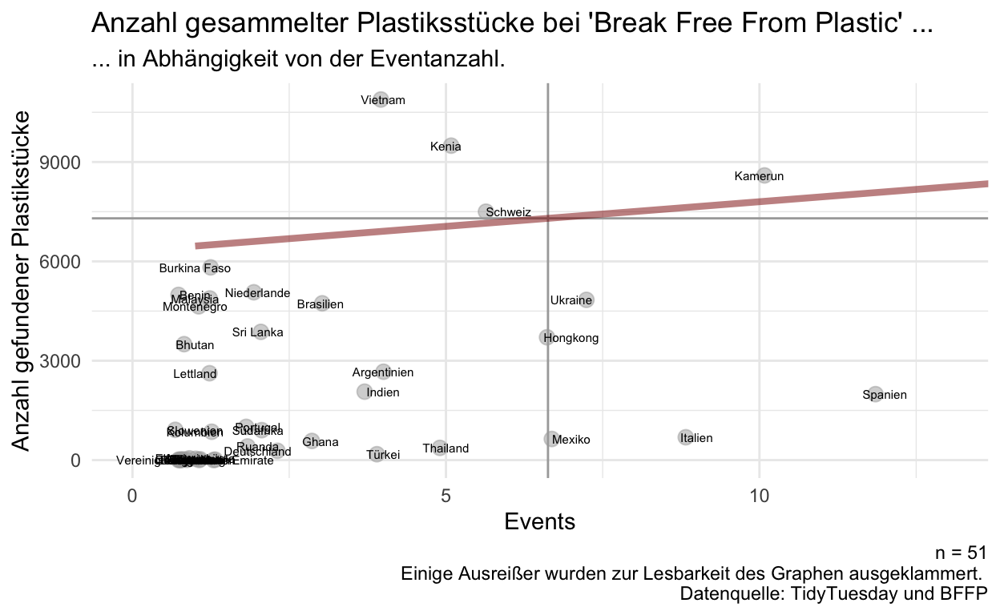
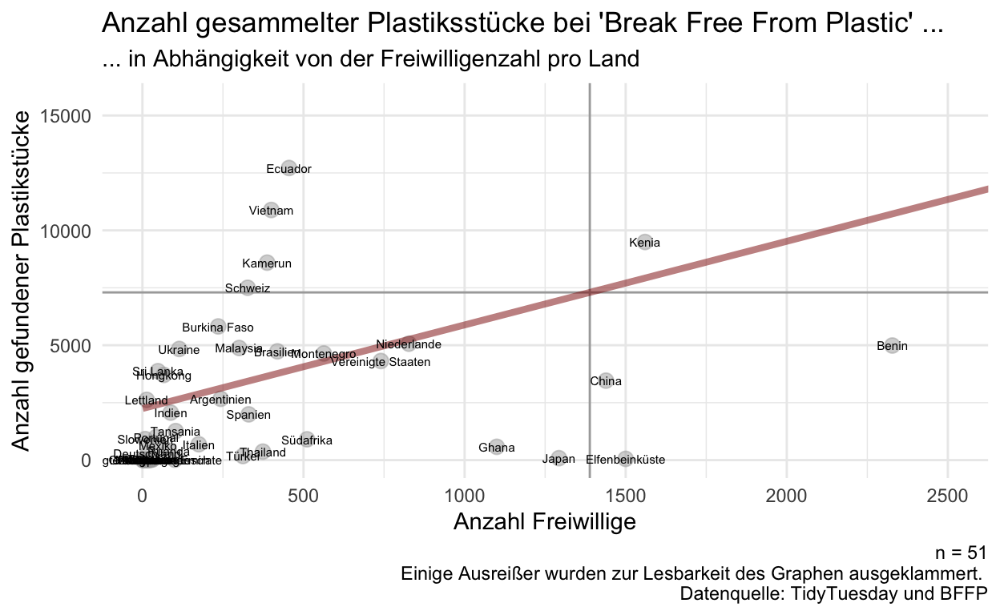
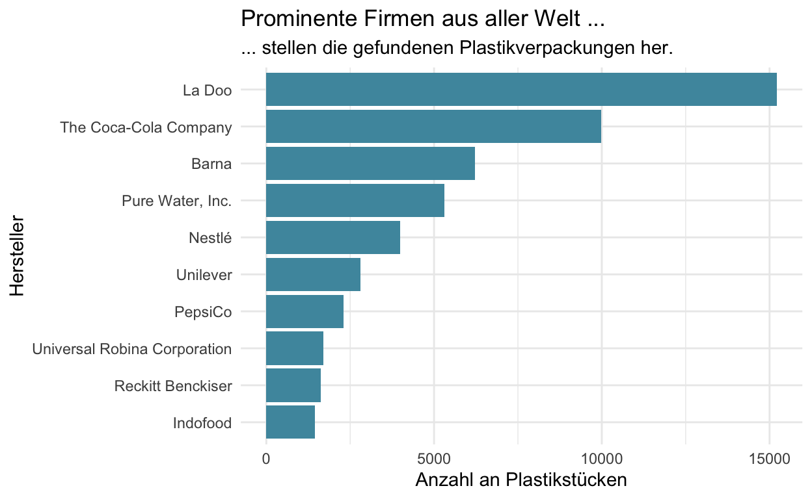

R Lernen - Der Datenkurs von und für die Zivilgesellschaft
Willkommen
Hallo und herzlich willkommen bei “R Lernen - der Datenkurs von und für die Zivilgesellschaft”! Hier findet Ihr alle Informationen zum Kurs, Lernziele und Methodik.
Um direkt einzusteigen: Ersetzt in diesem Codeeditior den Teil mit “–hier dein Name–” mit Eurem Namen. Klickt nun auf “Code ausführen”.
paste("Schön, dass Du da bist, --hier dein Name-- !")paste("Schön, dass Du da bist, Zoé!")Als kleine Vorschau auf das, was wir auf der Lernplattform für Euch vorbereitet haben, könnt Ihr Euch gerne unser Promovideo ansehen:
Promovideo R Lernen - Der Datenkurs von und für die Zivilgesellschaft (1min)
Am Ende des Kurses könnt Ihr zwei Arten von Datenprodukten erstellen: Einen reproduzierbaren Bericht, der automatisch Datenanalysen für mehrere Berichtinstanzen erstellt, und eine interaktive Web Applikation zur explorativen Erkundung von Daten. Neugierig? Hier findet Ihr die App. Damit Euch zwischendurch nicht die Puste ausgeht, ist spätestens jetzt ein guter Zeitpunkt die folgenden drei Fragen zu beantworten:
- Wie engagiere ich mich für positive, gesellschaftliche Entwicklung und wie können Daten mich dabei unterstützen?
- Was ist meine (persönliche) Motivation für die Teilnahme an dem Datenkurs “R Lernen”?
- Wo in meinem Wochenplan kann ich zwei bis drei Stunden für das Selbststudium vormerken?
Was Euch diese Woche erwartet
Diese Woche dreht sich alles rund ums Kennenlernen und Aufwärmen. Unten findet Ihr alle wichtigen Informationen zum Kurs nochmal in Schriftform - inklusiver aller wichtigen Links zu Slack und der Live-Session am Freitag auf Zoom. Lest Euch die Informationen gut durch. Falls es dazu Fragen gibt, können wir diese am Freitag, den 02.02.2024, um 12 Uhr nach einer kleinen Vorstellungsrunde klären. Dazu arbeiten wir gemeinsam auf Mural. Gerne könnt Ihr Euch dort schon im “Kennenlernen”-Dashboard eintragen. Wie jede Woche wird im Anschluss an unseren Live-Termin das nächste Kapitel freigeschaltet.
Für diesen Kurs werden wir zudem Lernduos bilden. Falls Ihr Präferenzen habt, mit wem Ihr in eine Gruppe kommen möchtet, dann teilt diese Zoé (zoe.w@correlaid.org) bitte rechtzeitig mit.
Ihr habt außerdem die Möglichkeit, Euch nach weiteren Kursen umzuschauen, zum Beispiel hier bei Dataquest. Dort könnt Ihr zusätzlich zu unserem Angebot Kurse in englischer Sprache belegen. Aber Augen auf: Programmierkurse für Datenwissenschaftler:innen sind dort meist etwas schwieriger - lasst Euch davon nicht beirren. Unser Kurs ist für Anfänger:innen gedacht.
Materialien der Lernplattform sind unter CC-BY 4.0 lizensiert (Open Source mit Autor:innenakkreditierung). Bitte behandelt den Link zur Lernplattform vertraulich.
Eckdaten
- 02.02.2024 - 03.05.2024, Aufwand: 2-4h/Woche (auch davon abhängig, ob Ihr doch schon Vorkenntnisse im Programmieren habt)
- Blended-Learning mit Lernplattform
- Jeden Freitag live von 12 - 13 Uhr (Klick hier!)
- Mit und von Datenprofis
Wochenplan
Woche 1 (Livetermin 02.02.24): Kick-Off!
Wir stellen uns, Ihr Euch und wir die Kursmodalitäten vor.
Woche 2 (Livetermin 09.02.24): Daten- und Leuchtturmprojekte der Zivilgesellschaft
Wir präsentieren Anwendungsbeispiele von Datenprojekten aus unserem Arbeitsalltag und der Zivilgesellschaft, um einen Ausblick auf Mögliches zu geben. Außerdem verraten wir Tipps & Tricks, die es bei Datenprojekten zu beachten gilt. Vielleicht entwickelt Ihr jetzt schon Ideen für Euer eigenes Projekt?
Woche 3 (Livetermin 16.02.24): Datenschutz & -ethik für Anfänger:innen
Wir führen Euch pragmatisch und lebensnah durch den DSGVO-Dschungel, sprechen über Tools und Datenethik. Ihr prüft Euer Projekt auf geltende Regelungen und hinterlegt in einem Datenverarbeitungsverzeichnis die personenbezogenen Daten, die Ihr in Eurem Projekt nutzen wollt.
Woche 4 (Livetermin 23.02.24): Grundlagen der Statistik
Warum evidenzbasierte Entscheidungen nicht nur auf Basis von statistischen Kennzahlen und Visualisierungen getroffen werden sollten, erklären wir Euch in dieser Woche. Ihr lernt die Voraussetzungen verschiedener statistischer Verfahren kennen.
Woche 5 (Livetermin 01.03.24): Einführung in RStudio
Wir zeigen Euch, was in RStudio passiert, wo Ihr die erste Zeile Code schreiben dürft und was für spannende Funktionalitäten es in der Applikation so alles gibt. Ihr öffnet RStudio das erste Mal, probiert Euch aus und - bei Fragen rund um das Set-up - helfen wir Euch.
Woche 6 (Livetermin 15.03.24): Daten verstehen mit R verstehen
Datenkompetenz setzt voraus, dass Ihr aus Daten die richtigen Schlüsse zieht. Wir zeigen Euch, wie Ihr Daten und Datenanalysen hinsichtlich ihrer Aussagekraft beurteilt und Visualisierungen und statistische Kennzahlen richtig interpretiert. Ihr macht erste Codingexperimente.
Woche 7 (Livetermin 22.03.24): Datenimport
Wir zeigen Euch, auf wie viele Arten Ihr Daten in RStudio laden könnt - manuell, aber vorallem auch live - und zeigen, wie wir mit APIs arbeiten. Ihr ladet Eure Daten.
Woche 8 (Livetermin 05.04.24): Datentransformation
Was tun, wenn die Daten noch gar nicht nutzbar sind? Wir stellen Euch das tidyverse der Datentransformation in R vor. Und Ihr? Ihr macht Eure Daten fit für die Auswertung und fangt an statistische Kennzahlen zu berechnen!
Woche 9 (Livetermin 12.04.24): Datenvisualiserung
Wir klären, welcher Diagrammtyp für Euren Fall der richtige ist und was Ihr bei der Erstellung einer Visualisierung in R beachten solltet. Ihr wendet das Gerlernte an.
Woche 10 (Livetermin 19.04.24): Reports
Diese Woche lernt Ihr, wie Ihr auf Basis Eurer Kennzahlen, Tabellen und Graphiken mit RMarkdown schöne, reproduzierbare Reports erstellt, die Ihr als PDF- oder HTML-Dokument teilen könnt. Ihr sucht Euch passende Kennzahlen, Tabellen und Graphiken heraus und erstellt damit einen ersten Report.
Woche 11 (Livetermin 26.04.24): Arbeit mit Text
In der vorletzten Phase des Datenkurses lernt Ihr, wie ihr mit Informationen in Text umgeht. Es geht darum, bestimmte Muster in Text zu entdecken und manchmal unnötige Sonderzeichen o.ä. auch den Zeichenfolgen zu entfernen.
Woche 12 (Livetermin 03.05.24): Interaktive Visualisierung
In der letzten Phase des Datenkurses lernt Ihr, wie Ihr Eure Ergebnisse in einer interaktiven Visualisierung teilen könnt. Wir programmieren mit Euch im Kurs eine erste Shiny-App, erklären, wie so eine Applikation funktioniert und wie Ihr sie hosten könnt. Ihr übertragt das Gelernte auf Eure eigenen Daten.
Lernziele
- Ihr entwickelt ein Grundverständnis für Datennutzung (inkl. Grundkonzepte der Mathematik und Statistik für Non-Techs)
- Ihr erlernt Codesegmente in R selbst zu formulieren und zu adaptieren
- Ihr erhaltet eine Einführung in rechtliche Rahmenbedingungen (Fokus: DSGVO) und ethische Bedenken
- Ihr gewinnt einen Überblick über gängige DSGVO-konforme Tools zur Datenverarbeitung aus der Welt von R
- Ihr versteht organisatorische Voraussetzungen und die Notwendigkeit der strategischen Konzeptionierung von IT-Neuerungen
Methodik
- Jeden Freitag (im Anschluss an unsere Live-Session) veröffentlichen wir neue Materialien auf unserer Online-Lernplattform
- Dort findet Ihr dann ein Video, die wichtigsten Kernaussagen des Wochenthemas, Übungsmaterialien und (freiwillige) Lernzielkontrollen
- Die Materialien könnt Ihr bearbeiten, wenn Ihr dafür Zeit und einen freien Kopf habt
- In der Live-Session jeden Freitag von 12-13 Uhr besprechen Datenprofis mit Euch die Lösung der Übung und Lernzielkontrolle, die im Anschluss online gestellt wird
- Außerdem wird Euer Lernduo auch eine:r Tutor:in zugeordnet, sodass Ihr eine:n Mentor:in an Eurer Seite habt. Meldet Euch nach der ersten Live-Session einfach einmal direkt bei Euerer:m Mentor:in! Bei kleineren Fragen und Problemen helfen Euch die ehrenamtlichen Tutor:innen gerne weiter.
- Zusätzlich könnt Ihr 1:1 Datensprechstunden buchen, wenn Ihr ausführlichere Fragen habt, Euch über Euer eigenes Projekt austauschen wollt etc. (per Mail an Zoé oder direkt hier)
Das Team

Kontakt
Unser Team erreicht Ihr unter education@correlaid.org.
Die Hauptkommunikation findet in unserem Slack-Channel statt. Zusätzlich habt Ihr die Möglichkeit Euch dort untereinander auszutauschen. Ihr erhaltet die Einladung zu Slack per E-Mail, könnt aber auch über diesen Link beitreten (Achtung: Der Link ist nur 14 Tage lang gültig).
Alle weiteren Angebot von CorrelAid e.V. erhaltet Ihr jeden Monat in unserem Newsletter für NPOs.
Und eine kleine Bitte haben wir noch:
Da für uns im Rahmen dieses Kurses allerhand Kosten entstehen und wir diesen gerne langfristig anbieten möchten, würden wir uns freuen, wenn Ihr es auch der Generation nach Euch ermöglicht, an diesem Kurs teilzunehmen. Wie das geht? Unter betterplace könnt Ihr für das Projekt “R Lernen - Der Datenkurs für die Zivilgesellschaft” spenden und den Link gerne auch in Eurem Netzwerk teilen. Pro Teilnehmer:in entstehen uns über die drei Monate etwa 300€ Kosten für Tutor:innen, Hosting und Verwaltung. Ihr müsst natürlich nicht den Gesamtbetrag spenden - auch kleinere Summen helfen! Das Beste ist: Über betterplace bekommt Ihr sogar eine Spendenbescheinigung über Eure Spende, die Ihr so bei der Steuererklärung geltend machen könnt. Überzeugt? Zur Spendenseite: Klick hier!
Setup
Zwar legen wir diese Woche nicht direkt mit Coden los, aber bevor es auch wirklich losgehen kann, benötigt Ihr zwei Dinge:
- R, also die freie, statistische Programmiersprache an sich
- RStudio, also die auf R spezialisierte integrierte Entwicklungsumgebung (im Prinzip die Benutzeroberfläche)
Versucht gerne einmal selbst, die beiden Programme für Euer Betriebssystem zu installieren – idealerweise auf einem Laptop oder PC, auf dem Ihr Adminrechte habt. Bei Installationsschwierigkeiten könnt Ihr uns gerne per E-Mail oder Slack-Nachricht an Zoé (zoe.w@correlaid.org) kontaktieren - dann lösen wir die Herausforderungen mit Euch gemeinsam.
Links seht ihr außerdem schon das Glossar. Noch wird Euch vielleicht vieles davon noch unbekannt vorkommen und Ihr müsst das auch nicht komplett durcharbeiten. Schaut hier aber immer mal wieder vorbei in den nächsten Wochen, hier verstecken sich bestimmt hilfreiche Informationen!
Disclaimer
In den nächsten Wochen wird Euch sehr
viel Neues begegnen, in manchen Wochen mehr und in anderen weniger. In
manchen Wochen werdet Ihr länger brauchen als gedacht, in anderen geht
es vielleicht ganz fix. Lasst Euch nicht entmutigen, wenn Ihr etwas
nicht direkt versteht oder Euch eine Woche erschlägt, damit seid Ihr
nicht alleine! Tauscht Euch gerne in Euren Lernduos aus, meldet Euch bei
Eurer Mentorin oder Eurem Mentor und bringt Eure Fragen mit zu den
Livesessions - dazu mehr auch nächste Woche in der ersten Livesession am
Freitag!
Datenprojekte für die Zivilgesellschaft

“Datenprojekte für die Zivilgesellschaft” von Nina Hauser in “R Lernen - der Datenkurs von und für die Zivilgesellschaft” von CorrelAid e.V. Lizensiert unter Creative Commons Attribution 4.0 International.
Anmerkung: Der Begriff “Impact” ist hier mit “Effekt” zu übersetzen
- nicht mit “Wirkung”.
Mehr Informationen zu Projekten von CorrelAid e.V. findet Ihr auf unserer Webseite, in unserem Blog und bei unserem Podcast. Die versprochenen Materialien rund um das Thema Wirkungslogik findet Ihr hier: Wir empfehlen von Phineo die kostenlosen Angebote Kursbuch Wirkung und den Skalacampus.
Kernaussagen
- Datenprojekte von und für die Zivilgesellschaft gibt es in allen Farben und Formen
- Inspiration findet Ihr deshalb bei Organisationen wie CorrelAid e.V. und DSSG und auf Konferenzen wie der CorrelCon und AI for Good.
- Wir stellen zudem jeden Monat ein Projekt aus unserem Arbeitsalltag in unserem Newsletter für NPOs vor.
- Daten sind formalisierte, idealerweise durch Binärcodierung maschinell lesbare Informationen, die mit Hilfe von Datenwissenschaft verarbeitet werden können.
- Daneben verstehen wir Datenwissenschaft auch als Denkweise (“Wie gehen wir an Herausforderungen heran?”) und Kompetenzbereich (“Welche analytischen, technischen und fachlichen Fähigkeiten sind notwendig?”).
- Ohne Daten treffen wir Entscheidungen auf Basis von Hypothesen, die wir noch gar nicht überprüft haben, und lassen Potenziale der Digitalisierung für effektive und effiziente Arbeitsweisen ungenutzt.
- Der Zweck unserer Datenstrategie und unserer Datenprojekte ergibt sich aus unserer Wirkungslogik - sie folgen also einer strategischen Zielsetzung.
- Da die Einführung von technischen Veränderungen mit Hürden verbunden ist, gehört auch das Einbeziehen von Mitarbeitenden und eine Auseinandersetzung mit der Organisationskultur zu einer guten Datenstrategie.
Bei der Erstellung einer Datenstrategie und der Planung von Datenprojekten mit Mehrwert für Eure Organisation und Euch solltet Ihr einige Punkte beachten:
Was wir tun sollten:
- Projekte vom Zweck (und nicht von der Technologie aus) zu denken
- Auch Technologien mit niedrigem analytischen Reifegrad in Erwägung zu ziehen
- Quantitative und qualitative Forschungsmethoden zu nutzen
- Externe und operationale Daten vor dem Beginn von Datenerhebungen zu evaluieren
- Manuelle Prozesse mit menschlichen Fähigkeiten zu verknüpfen, um passende Technolgien zu finden
- Mit Prototypen und agilem Arbeiten in Iterationen die Nützlichkeit von Projekten zu überprüfen
Was wir vermeiden sollten:
- (Einmalig) identifizierte Signifikanz überzubewerten und Erkenntnisse ohne Sinnhaftigkeitsprüfung zu übernehmen
- Unsinnige Vergleichsgruppen zu bilden
- Nur nach präferierten Resultaten zu suchen
- Voraussetzungen der Datenqualität und -aktualität zu missachten
- Uns auf Trendtechnologien und BuzzWords zu fokussieren
- Den Aufwand von Datenprojekten (insb. im Bereich der Organisationskultur) zu unterschätzen
Quiz
Und jetzt Ihr
Nun ist es an der Zeit, Euch zu überlegen, wie Ihr Eure R-Skills - die Ihr nach diesem Kurs haben werdet - in einem Datenprojekt anwenden könnt - arbeitet dafür gerne mit unseren Templates und wir freuen uns, wenn Ihr Eure Ideen in der nächsten Livesession vorstellt!
Teil 1: Erste Ideen entwickeln
Anfangs ist es vielleicht gar nicht so leicht, ein eigenes Projekt zu finden, an dem Ihr Euer Gelerntes erproben könnt. Damit es daran nicht scheitert, haben wir für Euch ein Template erstellt, mit dem Ihr allein oder in Gruppen mit Hilfe Eurer strategischen Organisationsziele datenbasierte Projekte herleiten könnt.

Template: Ideenfindung
Damit die Bearbeitung für Euch ganz leicht und ohne Druckerpapier möglich ist, haben wir das Template bei der digitalen WhiteBoard-Plattform Mural hochgeladen. Dort könnt Ihr ein eigenes “Mural” auf Basis des Templates erstellen und dann Euren Data Use Case erarbeiten. Bitte verklickt Euch nicht - ein kostenloser Account ist völlig ausreichend.
Hier geht es zum Template: Ideenfindung (10min). Im Ordner “Eure Datenprojekte” findet Ihr ein Mural mit Eurem Namen - tobt Euch dort gerne aus!
Alternativ findet Ihr das Template als PDF unter diesem Link.
Teil 2: Eigenen Data Use Case entwickeln
Ein Data Use Case (zu dt. Datenanwendungsfall) beschreibt ein datengestütztes System oder eine Anwendung, das sich auf bestimmte Art und Weise verhält. Einfacher ausgedrückt: Hiermit skizziert Ihr eine datenbasierte Lösung für Eure Herausforderung aus der letzten Lektion, damit Ihr später bei der Implementierung nur noch einem vorgegebenen Bauplan folgen müsst.
Mit unserem Data Use Case Template könnt Ihr Euer eigenes Datenprojekt planen. Da Datenprojekte sehr divers sein können, gibt es vielleicht Teile des Templates, die für Euch nicht relevant sind. Die könnt Ihr natürlich einfach überspringen. Es ist zudem ausreichend, wenn Ihr allein bis Sektion 5 kommt. Ihr könnt im Verlauf des Kurses immer wieder auf das Template zurückgreifen und insbesondere die Sektionen 6-8 werden zu einem späteren Zeitpunkt leichter zu beantworten sein.

Template: Data Use Case
Hier geht es zum Template: Data Use Case (20min). Im Ordner “Eure Datenprojekte” findet Ihr das Mural mit Eurem Namen - tobt Euch dort gerne aus!
Alternativ findet Ihr das Template als PDF unter diesem Link.
Wie CorrelAid Euch unterstützen kann
R Lernen Alumni
Ist Euch der #rlernen-alumni Slack Channel bereits aufgefallen? Dieser Channel soll Euer Channel sein, also nutzt ihn gerne ausgiebig, um Euch auszutauschen und weiterzuhelfen, schreibt zum Beispiel gerne
- bei Herausforderungen, aber auch Tipps und Tricks rund um R,
- wenn Ihr ein Datenprojekt angeht und Feedback zum Zwischenstand haben wollt,
- wenn Ihr Tipps zu Workshops uns Weiterbildungsmöglichkeiten in der Datenwelt habt,
- oder einfach wann auch immer Euch etwas einfällt, was Ihr hier teilen wollt!
R Lernen Sprechstunde
Ihr habt bereits guten Kontakt zu Eurer*m Mentor*in? Perfekt - dann fragt gerne einfach direkt im Slack bei ihnen nach! Ansonsten ist auch weiterhin die R Lernen Sprechstunde für Euch geöffnet. Meldet Euch dafür gerne hier an und wir helfen Euch in der halben Stunde direkt weiter!
NPO Newsletter
Einmal im Monat senden wir Euch eine Mail mit einem Projekt des Monats und Neuigkeiten und Angeboten aus unserem Netzwerk. Für den Newsletter könnt Ihr Euch hier anmelden.
Bildungsressourcen auf unserer Website
Es gibt unzählige CorrelAid-Workshops, die bereits stattgefunden haben - auf unserer neuen Website findet ihr hier alle Materialien in aufbereiteter Form. Außerdem: Schaut gerne bei unserem Github hier vorbei, dort findet Ihr Code und Workshop-Materialien zu vielen verschiedenen Themenbereichen!
Datenreifegradmodell
Für die Entwicklung einer organisationsweiten Datenstrategie über diesen Kurs hinaus bieten wir eine digitale Bestandsaufnahme Eures Datenreifegrads an: Habt Ihr Euch jenseits von einzelnen Projekten schon gefragt, an welchen Punkten Ihr als Organisation in Bezug auf Eure Arbeit mit Daten noch Verbesserungspotenziale habt und wo investierte Ressourcen bereits ausreichen? Findet es mit unserem Rechner Elmo heraus!
TidyTuesday
Tidytuesday ist eine globale Coding Challenge rund um das Aufbereiten und kreative Visualisieren von Daten mit R. Wir vom CorrelAid Tidytuesday Netzwerk sind schon seit über zwei Jahren dabei. Ziel unserer Coding Sessions ist es zum einen, sich gegenseitig zu inspirieren, zum anderen voneinander zu lernen. Expert*innen unterstützen Anfänger*innen “von der Pike auf” bei der Visualisierung von Daten: von statischen Plots, über interaktive Visualisierungen bis hin zu Animationen. Gleichzeitig kann bereits erlerntes Wissen bei jeder Session immer aufs Neue unter Beweis gestellt werden. Bei uns wird die Förderung der Kreativität und Neugierde für neue Visualisierungstechniken ganz groß geschrieben. Schaut euch gerne die Visualisierungen unserer Community auf unserer Tidytuesday Repository an. Wenn wir Euer Interesse geweckt haben, könnt Ihr sehr gerne ein Coding Meetup bei uns buchen. Wir freuen uns auf Euch!
Darüber hinaus, bieten wir Eurer Non-Profit-Organisation unsere Unterstützung bei kreativen Datenvisualisierungen z.B. für Webauftritte, Präsentationen oder Publikationen an. Wir arrangieren und tragen, in enger Rücksprache mit Euch und Eurer Organisation, eine CorrelAid Tidytuesday Challenge aus, in der alle Teilnehmende ihren Ideenreichtum freien Lauf lassen und Euch neue Einblicke in die Daten gewähren können. Alle Visualisierungen werden nach Abschluss der Challenge Euch und Eurer Organisation zur Auswahl weitergereicht.
Bei weiteren Fragen, könnt Ihr Euch einfach bei Slack an die beiden Organisatoren Long und Andreas wenden.
Datenschutz und Datenethik

“Datenschutz & -ethik” von Nina Hauser, Zoé Wolter in “R Lernen - der Datenkurs von und für die Zivilgesellschaft” von CorrelAid e.V. Lizensiert unter Creative Commons Attribution 4.0 International.
Video: Datenschutz und Datenethik (20min)
Als Lektüre empfehlen wir die Publikation des Bundesnetzwerks Bürgerschaftliches Engagement (BBE) zu „Datenschutz und Datensicherheit“, insbesondere die Schritte 1-12 auf den Seiten 29ff. Darüber hinaus könnt Ihr bei der Stiftung Datenschutz zahlreiche Webinare zum Thema besuchen. Ein Webinar zur DSGVO-konformen Nutzung von bestehenden Datenbeständen mit der Stiftung Datenschutz und uns findet Ihr hier.
Datenschutz
Das Recht auf informationelle Selbstbestimmung ist ein Unterfall des verfassungsrechtlich verankerten allgemeinen Persönlichkeitsrecht (Art. 1 Abs. 1 und Art. 2 Abs. 1 GG). Wichtige Rechtsgrundlage ist dafür die DSGVO (europäische Datenschutzgrundverordnung), welche am 25. Mai 2018 in Kraft getreten ist.
Personenbezogene Daten sind Informationen, mit denen
natürliche Personen, also Menschen,
identifiziert werden (können). 
Die Verarbeitung von personenbezogenen Daten unterliegt einem
Verbotsprinzip: Nur wenn Ihr eine explizite
Berechtigung zur Datenverarbeitung habt, dürft Ihr dies auch tun. Dabei
sind die Rechtsgrundlagen bzw. Erlaubnistatbestände für
die Datenverarbeitung folgende: 
Auf Grund Eurer Informationspflichten (Art. 12-14
DSGVO) müsst Ihr bei der Datenerfassung auf Rechtsgrundlage,
Zweck, Speicherdauer, Kontaktdaten der Verantwortlichen, die Weitergabe
an Dritte und Rechte der Betroffenen hinweisen.
Außerdem müsst Ihr auf die folgenden Betroffenenrechte
(Art. 15-21 DSGVO) hinweisen und diese berücksichtigen: 
Bei Erlöschung des Zwecks müssen personenbezogene Daten gem. §35 BDSG spätestens nach drei Jahren gelöscht werden - außer es handelt sich um steuerlich relevante oder Sozialdaten (Frist von 10 Jahren). Alternativ zur Löschung können Daten auch anonymisiert werden, indem identifizierende Informationen wie Name, exakte Adresse oder E-Mail gelöscht werden, bis die Kombination von Merkmalsausprägungen wie Wohnort, Beruf und Geschlecht jeweils bei min. drei Personen vorhanden ist (oder bei keiner).
Da der Datenschutz in Drittländern (auch in den USA)
nicht so ausgeprägt ist wie in der EU, solltet Ihr bei der Auswahl von
datenverarbeitenden Tools darauf achten, wo sie ihren Hauptsitz und
Server haben, und müsst ggf. zusätzliche Maßnahmen (z.B. rechtliche
Vereinbarung, Passwortschutz, Verschlüsselung) ergreifen. Am besten
veröffentlicht Ihr auf Eurer Webseite Eure Datenschutzerklärung
sowie Kontaktdaten von Ansprechpartner:innen und legt mit klar
definierten Verantwortlichen ein
Verarbeitungsverzeichnis und
Datenschutzmanagementsystem an, das Ihr in festen Abständen
überprüft: 
Datenschutz in der Praxis
Datenethik
- Darüber hinaus solltet Ihr Euch auch mit Euren Anforderungen an Datenethik beschäftigen, denn nur weil etwas augenscheinlich legal ist, heißt es noch lange nicht, dass es auch moralisch ist - eine Inspiration kann die Charta der digitalen Grundrechte sein.
- Prüft, ob Eure Datengrundlage ausreicht, um Sachverhalte zu bewerten, und diese Bewertung sinnvoll ist
- Evaluiert Eure Datengrundlage und sucht gezielt nach Verzerrungen wie historischem Bias.
- Überlegt Euch, ob Eure Datenanalyse zu struktureller Benachteiligung, Diskriminierung oder (negativer) Politisierung von Menschen führen kann.
- Denkt bei der Programmierung von Algorithmen darüber nach, ob die zu treffende Entscheidung überhaupt maschinell anhand von sozio-demographischen Merkmalen und deren Proxies getroffen werden sollte - das gilt insbesondere bei Algorithmen, die über Zugang zu essentiellen Bereichen wie dem Arbeits- und Finanzmarkt oder auch über den Zugang zu zivilgesellschaftlichen Programmen entscheiden.
Einige ethische Fragen solltet Ihr Euch vor und während Eurer Datenprojekte stellen:

Datenethik in der Praxis
Und jetzt Ihr: Eigenes Datenverarbeitungsverzeichnis erstellen (optional)
Ihr arbeitet mit personenbezogenen Daten und möchtet ein Datenverarbeitungsverzeichnis anlegen? Zur Erstellung eines solchen Verzeichnisses gibt es im Netz zahlreiche Informationen. Hier geht es zu den Veröffentlichungen der Datenschutzkonferenz (DKI) und bitkom.
Wir haben für Euch zudem ein Muster in Excel erstellt, das Ihr hier herunterladen könnt.

Template: Datenverarbeitungsverzeichnis
Zusätzliche Ressourcen
- Publikation des Bundesnetzwerks Bürgerschaftliches Engagement (BBE) zu „Datenschutz und Datensicherheit“, insbesondere die Schritte 1-12 auf den Seiten 29ff.
- Webinare der Stiftung Datenschutz
- Informationsseiten des:der Berliner Datenschutzbeauftragten
- Data Ethics Canvas (dt.) des Open Data Institutes
- Coded Bias, eine Netflixdokumentation zu Bias (zu dt. Verzerrungen) in Algorithmen
Grundlagen der Statistik

“Grundlagen der Statistik” von Michael Aydinbas in “R Lernen - der Datenkurs von und für die Zivilgesellschaft” von CorrelAid e.V. Lizensiert unter Creative Commons Attribution 4.0 International.
In dieser Woche geht es um die Grundlagen des statistischen Denkens. Wir beschäftigen uns aber nicht mit der Statistik aus purem Selbstzweck, sondern sie ist ein ganz wesentlicher Teil und Voraussetzung für den kritischen Umgang mit Daten. Daher schauen wir uns zu Beginn an, was wir für einen kompetenten Umgang mit Daten benötigen, wie wir Datenkompetenz erlangen können und welche Rolle die Statistik dabei spielt.
Im Anschluss beginnen wir mit einer Einführung in die Statistik und diskutieren, wie Daten in der Öffentlichkeit präsentiert werden. Anschließend lernen wir, was Daten und Datentypen sind. Mit diesem Wissen steigen wir in die Grundbegriffe der Statistik ein und schauen uns an, wie Daten (mehr oder weniger) sinnvoll zusammengefasst werden können. Zum Schluss diskutieren wir das wichtige Thema Korrelation und Kausalität.
Data Literacy1
Daten sind im digitalen Zeitalter eine Schlüsselressource für gesellschaftliche Teilhabe, Wohlstand und Wettbewerbsfähigkeit, für den Schutz von Klima und Umwelt sowie staatliches Handeln. Die Fähigkeiten, Daten auf kritische Art und Weise zu sammeln, zu verwalten, zu bewerten und anzuwenden, wird als Data Literacy bezeichnet. Data Literacy umfasst dabei nicht nur Statistikkompetenz oder ein mathematisches Grundverständnis, sondern auch Fertigkeiten wie Digital- und Medienkompetenz. Wer datenkompetent („data literate“) ist, kann die Zuverlässigkeit von Datenquellen beurteilen, Daten zielgerichtet aufbereiten und einordnen sowie sinnvolle Schlüsse aus diesen Daten ziehen.
Wenn Daten Entscheidungsprozesse unterstützen sollen, braucht es kompetente Antworten auf vier grundlegende Fragen:
- Was will ich mit Daten machen? Daten und Datenanalysen sind kein Selbstzweck, sondern dienen einer konkreten Anwendung in der realen Welt.
- Was kann ich mit Daten machen? Datenquellen und deren Qualität sowie der Stand der technischen und methodischen Entwicklungen eröffnen Möglichkeiten und setzen Grenzen.
- Was darf ich mit Daten machen? Alle gesetzlichen Regeln der Datennutzung (zum Beispiel Datenschutz, Urheberrechte und Lizenzfragen) müssen immer mitbedacht werden.
- Was soll ich mit Daten machen? Weil Daten eine wertvolle Ressource darstellen, leitet sich daraus ein normativer Anspruch ab, sie zum Wohl von Individuen und Gesellschaft zu nutzen.
Die nachfolgende Abbildung zeigt ein zyklisches Prozessmodell, das die notwendigen Schritte für einen kompetenten Umgang mit Daten abbildet. Auch wenn das Schaubild keinen klaren Startpunkt vermittelt, weil der Prozess mehrfach durchlaufen werden kann, so wird man für gewöhnlich mit der Eingrenzung der Aufgabe und der Formulierung von (Forschungs-)Fragen beginnen.

Abbildung: Zyklisches Modell des Prozesses der Wertschöpfung aus Daten. Quelle: Schüller, Busch, Hindinger (2019)
Im oberen Schaubild ist die Statistik an fast allen Schritten beteiligt:
- Sie spielt bei der Planung der Datenerhebung (Messung) eine Rolle, wenn es darum geht, welche Daten in welchen Einheiten erhoben werden sollen
- Sie spielt bei der Erhebung der Daten eine Rolle, wenn es darum geht, eine repräsentative Stichprobe auszuwählen sowie Messfehler und Verzerrungen zu vermeiden
- Sie spielt bei der Datenanalyse eine zentrale Rolle, wenn es darum geht, Muster und Auffälligkeiten in den Daten zu finden
- Sie spielt bei der Interpretation der Daten eine zentrale Rolle, wenn es darum geht, gefundene Zusammenhänge auf ihre Bedeutung hin zu prüfen und zu bewerten
- Sie spielt bei der Entscheidungsfindung eine Rolle, wenn es darum geht, auf Basis der erhobenen Daten Entscheidungen abzuleiten
Daher wollen wir uns näher mit den Grundlagen der Statistik beschäftigen. Wir tun dies hier aber sehr anwendungsorientiert und werden nur die Grundlagen behandeln, die beim Umgang mit eigenen Daten und Datensätzen direkt angewendet werden können.
Einführung in die Statistik2
Quelle: Weltstatistiktag - Statistisches Bundesamt, https://www.destatis.de/DE/Ueber-uns/Ziele-Strategie/weltstatistiktag-2020.html (Februar 2024).
Die Statistik ist eine Wissenschaft, die alle Lebensbereiche durchdringt. Jeder von uns ist heute im Alltag mit einer Fülle von Daten und Visualisierungen von Daten konfrontiert, die uns über verschiedene Kanäle erreichen. Im Internet kann man gezielt nach Daten aller Art suchen, z.B. nach statistischen Informationen zu Migrationsströmen oder zur Kursentwicklung von Kryptowährungen. Zugleich wird die Online-Präsentation von Daten immer benutzerfreundlicher. Dies gilt insbesondere für Daten der amtlichen Statistik – wie das folgende Beispiel einer interaktiven Präsentation der Bevölkerungsvorausberechnung für Deutschland des Statistischen Bundesamts (Destatis) zeigt.
Quelle: von6auf1 - “Statistik Teil 1 - statistische Daten - Merkmalsträger, Merkmalsausprägung …”, https://youtu.be/fmpxGo1JJiE?si=5_Wu79t3LVA9gmLF (04.11.2015, abgerufen Februar 2024)
In der Statistik nennt man die Objekte, auf die sich eine statistische Untersuchung bezieht, statistische Einheiten oder Merkmalsträger. Daten werden also an statistischen Einheiten bzw. Merkmalsträgern erhoben. Die Menge aller für eine Fragestellung interessierenden statistischen Einheiten bildet eine Grundgesamtheit. Sie wird auch als Population bezeichnet. Wichtig ist, dass eine Grundgesamtheit klar abgegrenzt ist. Die Eigenschaften statistischer Einheiten werden Merkmale oder Variablen genannt. Die möglichen Werte, die ein Merkmal annehmen kann, heißen Merkmalsausprägungen. Wählt man aus einer Grundgesamtheit nach einem Auswahlverfahren (engl. Sampling) eine Teilmenge aus, spricht man von einer Stichprobe. Die folgende Abbildung verdeutlicht noch einmal den Zusammenhang zwischen Population und Stichprobe.
Beispiele: Statistische Grundbegriffe
Eine Grundgesamtheit ist z.B. definiert durch
- alle Personen, die am 1. Mai 2023 in Berlin ihren Erstwohnsitz hatten;
- Studierende einer Universität zu Beginn des Wintersemesters 2023, über die man via Internetbefragung Informationen gewinnen will;
Die statistischen Einheiten werden hier repräsentiert durch
- jede Person mit Erstwohnsitz in Berlin am 1. Mai 2023;
- alle zum Wintersemester 2023 eingeschriebenen Studierenden;
Interessierende Merkmale und Merkmalsausprägungen können hier sein
- der Familienstand der Person, etwa mit den Ausprägung „single“, “verheiratet”, “geschieden”;
- das Alter der Studierenden, erfasst z.B. in Form von Altersklassen;

Abbildung: Population und Stichprobe. Quelle: https://systats.github.io/linear_model/basics.html
Aufgaben und Teilbereiche der Statistik
Für Statistiker ist der Begriff „Statistik“ nicht eindeutig belegt. Sie verstehen hierunter einerseits ihre Wissenschaft als Ganzes. Sie verwenden den Begriff aber auch für Kenngrößen, die sich aus statistischen Daten ableiten (z.B. den Mittelwert). Im allgemeinen Sprachgebrauch wird auch häufig ein Datensatz als eine Statistik angesprochen, etwa ein Datensatz mit der Medaillenverteilung bei den Olympischen Sommerspielen. In diesem Kurs wird „Statistik“ im Sinne von „Wissenschaft“ verwendet, also bestimmte Methoden sowie Denk- und Herangehensweisen.
Innerhalb der Statistik lassen sich die beschreibende und die schließende Statistik unterscheiden. Die beschreibende oder deskriptive Statistik umfasst numerische und grafische Verfahren zur Charakterisierung und Präsentation von Daten. Ziel ist die Reduktion (Zusammenfassung) der in den Daten enthaltenen statistischen Informationen durch Verdichtung zu wenigen Kenngrößen, möglichst ohne größeren Informationsverlust. Auf diesen Zweig der Statistik wollen wir uns im Rest dieser Lerneinheit konzentrieren.
Aus der beschreibenden Statistik hat sich die explorative Datenanalyse entwickelt. Diese geht über die beschreibende Statistik hinaus, weil hier – noch ohne Einsatz von (mathematischen) Modellen – mit rechenintensiven Verfahren nach auffälligen Mustern und Strukturen in Datenbeständen gesucht wird. So werden etwa die Scannerdaten eines Lebensmittelkonzerns von einem Verkaufstag routinemäßig nach Auffälligkeiten durchleuchtet, ohne dass sofort eine Hypothese im Spiel ist. So entdeckt man Trends im Käuferverhalten und kann zudem rechtzeitig Nachbestellungen organisieren.
Die schließende oder induktive Statistik leitet aus Stichprobendaten Aussagen ab, die über die jeweilige Stichprobe hinausgehen und sich auf eine umfassendere Grundgesamtheit beziehen. Sie sei aber nur der Vollständigkeit halber genannt und wird uns heute nicht weiter beschäftigen.
Jetzt wollen wir uns einige Pressemitteilungen des Statistischen Bundesamts näher ansehen.
Pressemitteilungen
Im Folgenden zeigen wir exemplarische Pressemitteilungen des Statistischen Bundesamts (Destatis) und die dazu veröffentlichten Grafiken. Diese Pressemitteilungen sind typische Beispiele für die Veröffentlichungen von statistischen Ämtern und zeigen, wie Daten in der Öffentlichkeit präsentiert werden.
Achtet auf die Kommunikation sowie die verschiedenen Darstellungsarten. Welches Wissen bzw. welche Fähigkeiten werden beim Betrachter vorausgesetzt? Welche Informationen werden vermittelt? Findet ihr die Grafiken geeignet, um die Informationen zu vermitteln?
Inflationsrate im Januar 2024 bei +2,9 %. Inflationsrate schwächt sich zu Jahresbeginn ab.
Verbraucherpreisindex, Januar 2024
- +2,9 % zum Vorjahresmonat (vorläufiges Ergebnis bestätigt)
- +0,2 % zum Vormonat (vorläufiges Ergebnis bestätigt)

Menschen in Deutschland bei erster Heirat immer älter – Durchschnittsalter auf neuem Höchststand.
- Frauen bei erster Eheschließung 2022 im Schnitt 32,6 Jahre alt, Männer 35,1 Jahre
- Zahl derjenigen, die mit 50+ zum ersten Mal heiraten, von 7 500 im Jahr 2002 auf rund 41 500 im Jahr 2022 gestiegen
- Rund die Hälfte (49 %) der erwachsenen Bevölkerung war Ende 2022 verheiratet, bei den 65- bis 69-Jährigen gut zwei Drittel (68 %)


Bierabsatz 2023 um 4,5 % niedriger als im Vorjahr.
- Inlandsabsatz um 4,2 % gesunken, Bierexporte um 5,9 % niedriger als im Vorjahr
- Auch langfristig sinkender Bierabsatz: Im Jahr 2023 haben die Brauereien und Bierlager 11,5 % weniger Bier abgesetzt als im Jahr 2013

Was sind Daten?3
Im letzten Abschnitt haben wir uns bereits mit Daten und Datenvisualisierungen auseinandergesetzt. Jetzt ist es Zeit, dass wir einmal genau festlegen, was wir mit Daten eigentlich meinen.
Beginnen wir mit der Frage, was Daten und was Informationen sind. Information ist abgeleitetes Wissen. Dieses Wissen wollen wir anderen vermitteln sowie aufbewahren. Eine Möglichkeit, dies zu erreichen, ist durch die Wahl einer geeigneten Kodierung. Daten sind kodierte Informationen. Da ein und dieselbe Information auf unterschiedliche Weise kodiert werden kann (verschiedene Einheiten, verschiedene Skalen usw.), kann ein und dieselbe Information auch mit unterschiedlichen Daten ausgedrückt werden. Verstehe ich die Kodierung hingegen nicht, so sind die Daten für mich wertlos, da ich die kodierten Informationen nicht verwerten kann.
Wenn wir uns nun eine gewöhnliche Tabelle vorstellen, so enthält diese Tabelle kodierte Informationen und somit Daten. Eine Tabelle mit Daten nennen wir daher auch einen Datensatz.
Jede Zeile einer Tabelle stellt eine zusammenhängende Informationseinheit dar, die zu einem bestimmten Zeitpunkt erhoben oder gemessen wurde. Jede Spalte einer Tabelle repräsentiert eine Eigenschaft, die uns interessiert, und die für alle Zeilen auf die gleiche Art und Weise kodiert wird, so dass wir die verschiedenen Messungen leicht vergleichen können.
Die Zeilen eines Datensatzes bezeichnen wir als Messungen, Beobachtungen, Aufzeichnungen (engl. records), oder Versuche. Die Spalten einer Tabelle bezeichnen wir als Merkmale, Features, Attribute, Felder, oder Variablen. Daher kann man einen Datensatz auch beschreiben als eine Sammlung von \(N\) Beobachtungen mit \(Y\) Merkmalen oder Variablen. Man spricht in diesem Falle von der Dimension des Datensatzes. Ein Datenpunkt oder Datenwert ist der Schnittpunkt (eine Zelle in der Tabelle) zwischen einer Beobachtung und einem Merkmal. Jede Tabelle besitzt eine Kopfzeile (engl. header), die die Merkmale näher beschreibt.
Die nachfolgende Abbildung stellt alle Begriffe dieses Abschnittes noch einmal übersichtlich zusammen.

Abbildung: Grundbegriffe für den Umgang mit tabellarischen Datensätzen. Quelle: Eigene Darstellung.
Datentypen
Daten können je nach Kodierung in verschiedene Datentypen eingeteilt werden. Die zwei wichtigsten Datentypen werden als numerisch und kategorisch bezeichnet. Numerische Daten werden in Zahlen (und ggf. eine Einheit) ausgedrückt. Kategorische Daten werden meist in Worten und Symbolen ausgedrückt. Es gibt jedoch auch kategorische Daten wie Postleitzahlen, die trotz ihres numerischen Charakters nur sinnvoll als kategorische Daten interpretiert werden können.
Numerische Daten werden in zwei Hauptkategorien unterteilt:
- Kontinuierliche Daten können jede Zahl innerhalb eines bestimmten Bereichs annehmen. Sie stellen eine grundsätzlich nicht abzählbare Menge von Werten dar, d.h., es gibt immer noch einen Wert zwischen zwei beliebigen Werten. Beispiele für diesen Datentyp sind Wetterdaten wie die Menge an Niederschlag oder die Außentemperatur. Die Außentemperatur kann mit beliebiger Genauigkeit angegeben werden, also beispielsweise mit \(29\ °C\), \(28,6\ °C\), oder \(28,6425\ °C\).
- Diskrete Daten sind auf ganze Zahlen beschränkt. Sie stellen eine abzählbare Menge von Werten dar. Beispiele für diesen Datentyp sind die Anzahl der Kinder in einer Familie oder die Anzahl der Tore in einem Fußballspiel. Man kann \(0, 1, 2\) oder mehr Kinder haben, aber nicht \(1,28\) Kinder.

Abbildung: Numerische Datentypen. Quelle: @allison_horst, lizensiert nach cc by 4.0
Kategorische Daten werden ebenfalls in zwei Hauptkategorien unterteilt:
- Ordinale Daten besitzen eine natürliche Ordnung. So nutzen Umfragen Ordinaldaten, wenn sie nach eurer Erfahrung oder Zustimmung auf einer Skala von 1-10 fragen. Die Werte sehen zwar wie diskrete Daten aus, aber es ist nicht möglich oder sinnvoll, den Abstand zwischen zwei Werten zu interpretieren. Man kann nicht sagen, dass der Abstand zwischen einer 9 und 10 in einer Umfrage identisch ist mit dem Abstand zwischen einer 0 und einer 1. Ordinaldaten müssen nicht mit Zahlen kodiert sein. So können Kleidergrößen wie S, M, L, XL, XXL als Ordinaldaten interpretiert werden.
- Nominale Daten besitzen keine natürliche Ordnung. Beispiele für nominale Daten sind die Farbe eines Autos, die Nationalität, das Geschlecht, die Postleitzahl oder die Parteizugehörigkeit. Die Reihenfolge, in der die Daten präsentiert werden, ist willkürlich, da es nicht möglich ist, eine Kategorie als “größer” oder “kleiner” als eine andere zu bezeichnen.

Abbildung: Kategorische Datentypen. Quelle: @allison_horst, lizensiert nach cc by 4.0
Warum sind diese sogenannten Skalenniveaus wichtig für uns? Das Skalenniveau bestimmt, welche statistischen Methoden angewendet werden können. So können beispielsweise Mittelwerte nur für kontinuierliche numerische Daten sinnvoll berechnet werden (man denke an den Notenspiegel aus der Schule, bei dem die Durchschnittsnote wenig sinnvoll ist, wenn Noten selbst diskrete Werte darstellen). Nominale kategorische Daten hingegen lassen sich nur sinnvoll über Häufigkeiten zusammenfassen, mehr kann man mit ihnen nicht anstellen. Außerdem hilft ein gemeinsames Vokabular dabei, sich mit anderen über die eigenen Daten auszutauschen und den Datensatz zu beschreiben.
Jetzt, wo wir uns mit den Grundlagen von Daten auskennen, können wir zur eigentlichen Statistik kommen.
Einführung in die deskriptive Statistik
Ein vorrangiges Ziel der deskriptiven Statistik oder beschreibenden Statistik ist es, mithilfe von Kennzahlen und grafischen Darstellungen (vorrangig Histogramme, lernt ihr in einer späteren Lektion) wesentliche Charakteristiken von Häufigkeitsverteilungen herauszuarbeiten. Eine Häufigkeitsverteilung ist eine Zusammenfassung der beobachteten Werte einer Variablen und gibt an, wie oft die verschiedenen Werte vorkommen. Die Häufigkeit kann dabei pro Merkmalsausprägung oder für Klassen angegeben werden, die mehrere Merkmalsausprägungen zusammenfassen (z.B. Alters- und Einkommensgruppen).
Lageparameter
Lageparameter dienen der Beantwortung der Frage, welche der in der Stichprobe vorkommenden Werte “typisch” oder “repräsentativ” sind. Dabei ist große Vorsicht geboten, diese Werte nicht überzuinterpretieren, da sie den gesamten Datensatz auf eine einzige Zahl reduzieren.
Modus: der häufigste Wert einer Variable (auch: Modalwert). Hierzu ermittelt man die häufigste (oder wahrscheinlichste) Beobachtung.
Median: der “wahre” Mittelpunkt einer Variable (50 % aller Beobachtungen sind kleiner und 50 % aller Beobachtungen sind größer als der Median). Hierzu sortiert man alle Beobachtungen und bestimmt dann die Beobachtung, die genau in der Mitte liegt.
Arithmetisches Mittel: Durchschnittswert einer Variable. Hierzu addiert man alle Einzelbeobachtungen und teilt anschließend durch die Anzahl der Beobachtungen.
Dass ein und dieselbe Verteilung (beispielsweise die Erhebung des Einkommens einer Stichprobe) ganz unterschiedliche Lagemaße haben kann, zeigt die folgende Abbildung.

Abbildung: Schiefe vs. symmetrische Verteilungen. Quelle: Eigene Darstellung
Streuungsparameter
Streuungsparameter sollen das Aumaß der Streuung innerhalb des Datensatzes oder um einen Lageparameter herum beschreiben. So gibt beispielsweise die Standardabweichung einer Variable an, wie weit im Mittel die einzelnen Beobachtungen vom Mittelwert dieser Variable entfernt sind.
Standardabweichung: standardisiertes Maß für die Streuung um den Mittelwert in der selben Maßeinheit wie die Variable (auch: mittlere Abweichung).
Varianz: die quadrierte Standdardabweichung.
Spannweite: Differenz zwischen dem kleinsten Wert (minimale Ausprägung) einer Variablen und dem größten Wert (maximale Ausprägung) einer Variablen
p-Quantil: Der Wert, für den mindestens \(p\cdot 100 \%\) der Beobachtungen kleiner oder gleich diesem Wert sind. Das 25%-Quantil (\(p=25\)) ist also der Wert, für den 25 % aller beobachteten Werte kleiner oder gleich diesem Wert sind.
Interquartilsabstand: Der Abstand zwischen dem 75%-Quantil und dem 25%-Quantil. Es ist sozusagen der Wertebereich, in den die mittleren 50 % der beobachteten Daten fallen.
In der nachfolgenden Abbildung wird verdeutlicht, wie der Median sowie das 25%-Quantil und 75%-Quantil für eine beispielhafte Messreihe ermittelt werden können.

Abbildung: Bestimmung und Bedeutung von p-Quantilen. Quelle: Eigene Darstellung
Kausalität und Korrelation3
Es gibt eine weitere statistische Größe, die uns wertvolle Aussagen zu den Daten liefern kann, die aber oftmals voreilig als Ursachenbeziehung interpretiert wird: die Korrelation. Die Korrelation ist ein Maß für den Zusammenhang zwischen zwei Variablen. Die häufigste Art der Korrelation nach Pearson misst einen linearen Zusammenhang (denke an eine gerade Linie durch die Datenpunkte) zwischen zwei Variablen und kann Werte zwischen \(-1\) und \(1\) annehmen.
Bei einer positiven Korrelation (Werte nahe \(+1\)) beobachten wir bei Zunahme einer Variable auch eine gewisse Zunahme in der anderen Variable: größere Häuser erzielen für gewöhnlich einen höheren Verkaufspreis. Bei einer negativen Korrelation (Werte nahe \(-1\)) beobachten wir bei Zunahme einer Variable eine Abnahme in der anderen: schwerere Autos besitzen in der Regel einen höheren Kraftstoffverbrauch und damit eine geringere Reichweite. Bei einer Korrelation nahe \(0\) können wir keinen linearen Zusammenhang erkennen: Egal, was wir über eine Variable wissen, wir können keine Vorhersage über die Werte der andere Variable treffen (mit anderen Worten sagt uns der Wert einer Variable nichts über den Wert der anderen Variablen).
Korrelation kann sehr hilfreich, aber auch sehr trügerisch sein. Die erste wichtige Grundregel beim Umgang mit Korrelationen ist, dass es verschiedene Korrelationsmaße gibt. Einige messen nur einen linearen Zusammenhang (die Daten müssen mehr oder weniger gut auf einer geraden Linie liegen), andere (Rangkorrelationen) können auch nicht lineare Zusammenhänge erfassen. Das ist wichtig, weil eine Korrelation nahe 0 nicht bedeutet, dass es keinen Zusammenhang gibt, sondern oft nur, dass der Zusammenhang eben nicht linear ist. Man denke an den Zusammenhang zwischen Alter und der aufgenommenen Nahrungsmenge. Mit zunehmendem Alter steigt für gewöhnlich die Menge an Nahrung, die wir zu uns nehmen, an, bis sie ab einem gewissen Alter wieder zu sinken beginnt, weil der Körper nicht mehr so viel Energie benötigt.
Ein sehr wichtiger Spruch ist: “Aus Korrelation folgt keine Kausalität”. Zwei Variablen können miteinander korrelieren, sogar sehr stark, ohne dass die eine die andere verursacht oder hervorruft. Beispielsweise sind der Verkauf von Eis und die Anzahl der Haiangriffe im Sommer stark korreliert. Das bedeutet aber nicht, dass der Verkauf von Eis Haie anlockt, oder dass Opfer von Haiangriffen danach gerne ein Eis essen. Vielmehr gibt es eine dritte Variable, die beide beeinflusst: die Temperatur. Je wärmer es ist, desto mehr Eis wird verkauft und desto mehr Menschen gehen schwimmen. Die Schuhgröße korreliert positiv mit der Lesefähigkeit, aber größere Schuhe machen niemanden klüger. In Wahrheit sind beide über das Alter miteinander verbunden (man spricht daher beim Alter auch von einer konfundierenden Variable). Außerdem kann man auch rein zufällige Korrelationen finden, die absolut keine sinnvolle Erklärung haben dürften (oder Käsekonsum sagt wirklich eine Menge über uns aus).
Um solche Fehlschlüsse und Falschaussagen zu vermeiden, ist es wichtig, grundsätzlich so lange von keinerlei Kausalität auszugehen, bis diese durch ein Experiment belegt werden konnte. Kausale Zusammenhänge können nur durch kontrollierte Experimente bestätigt werden, nicht durch einfache statistische Kenngrößen.
Abschließendes Beispiel
Zum Schluss betrachten wir einen Datensatz zum Auftreten von Nierenkrebs in den USA, gemessen als Anzahl der Fälle pro 100.000 Einwohner. Dabei stellt sich heraus, dass die höchsten Krebsraten in sehr ländlichen Bezirken auftreten, die über den Mittleren Westen, den Westen und den Süden des Landes verstreut sind. An dieser Stelle könnt ihr kurz innehalten und euch ein paar Gründe für diesen Befund überlegen.
Vielleicht vermutet ihr, dass für Menschen auf dem Land die medizinische Versorgung schlechter ist, oder dass sie sich ungesünder ernähren. Es ist leicht und für uns Menschen ganz natürlich, sich ein passendes Narrativ zu vermeindlichen Fakten aufzubauen, um diese zu erklären. Doch jetzt kommt der Haken: die niedrigsten Krebsraten in den USA treten ebenfalls in sehr ländlichen Bezirken auf, die über den Mittleren Westen, den Westen, und den Süden des Landes verstreut sind. Oftmals sogar in direkter Nachbarschaft zu den Bezirken mit den niedrigsten Raten (siehe nächste Abbildung)! Wie kann beides gleichzeitig war sein? Wie können zwei Bezirke mit ähnlicher Demographie so verschiedene Krebsraten haben? Jede Erklärung, die wir uns für den einen Fall zurecht legen, würde sicherlich auch teilweise auf die benachbarten Bezirke zutreffen. Also muss es eine andere Erklärung geben.

Abbildung: US-Bezirke mit der niedrigsten (türkis) sowie der höchsten (rot) Nierenkrebsrate. Quelle: Wainer, H. (2007)
Und die gibt es in der Tat: Die geringe Bevölkerungsdichte in den Bezirken sorgt für eine hohe Streuung (Varianz) in den Krebsraten. Nehmen wir zwei Bezirke in ländlicher Gegend, Bezirk A und Bezirk B, mit je 1000 Einwohnern. Bezirk A hat keine Krebsfälle, daher ist die Krebsrate 0. Bezirk B hat einen einzigen Krebsfall, doch die Krebsrate steigt dadurch sofort auf 100, da die Krebsrate ja pro 100.000 Bewohnern gemessen wird. 100 ist aber extrem hoch, sogar die höchste Rate im ganzen Land! Wenn wir uns dagegen die großen Städte wie New York mit Millionen von Einwohnern ansehen, würde ein einziger weiterer Krebsfall, sagen wir von 75 auf 76 Krebsfälle, die Rate kaum merklich verändern: Sie würde von \(0,9375\) auf \(0,95\) ansteigen.
Die nachfolgende Abbildung fasst die Ergebnisse für die US-Bezirke zusammen. Die weniger dicht besiedelten Bezirke auf der linken Seite der Abbildung weisen eine deutlich höhere Varianz in der Krebsrate auf. Zudem treten sowohl die höchsten als auch die niedrigsten Krebsraten in dieser Gruppe auf. Mit steigender Bevölkerungsdichte (je mehr wir uns auf der x-Achse nach rechts bewegen) sinkt die Varianz und wir können eine Stabilisierung um den Wert 5 herum erkennen. Was sollten wir aus diesem Beispiel mitnehmen? Kleine Stichprobengrößen können zu extremen Ergebnissen führen.

Abbildung: Wenn man die altersbereinigten Nierenkrebsraten in den US-amerikanischen Bundesstaaten gegen den Logarithmus der Bezirksbevölkerung aufträgt, wird die Verringerung der Variation mit der Bevölkerung deutlich. Quelle: Wainer, H. (2007)
Und jetzt Ihr
Zum Abschluss dieser Lerneinheit dürft ihr nun auch noch einmal Daten interpretieren. Schaut euch dazu bitte die folgende Grafik zu Militärausgaben im Ländervergleich 2003 - 2017:
- Startet mit den Zeitreihen, sucht euch drei Länder aus und vergleicht die Ausgaben in ‘absoluten’ Werten, ‘in % BIP’ und ‘pro Kopf’. Was verändert sich? Warum?
- Wechselt nun zur Darstellung ‘Boxplots’. Was wird hier dargestellt, welche Dimensionen werden verglichen? Was fällt bei der Darstellung der Ausgaben in absoluten Werten auf? Geht nun auf ‘pro Kopf’. Was fällt beim Vergleich der Boxplots über die Jahre auf? Was fällt beim Vergleich der Ausreißer auf?
- Wechselt nun zur Darstellung ‘Säulendiagramme’. Was wird hier dargestellt, welche Dimensionen werden verglichen? Was fällt auf, wenn ihr ‘in % BIP’ und ‘pro Kopf’ vergleicht?
Die zweite Übung behandelt noch einmal die Korrelation. Öffnet dazu bitte diese Seite:
- Erzeugt Beispiele für eine hohe positive Korrelation (\(r > +0.8\)) und eine hohe negative Korrelation (\(r < -0.8\)).
- Wenn ihr ein Beispiel für eine hohe Korrelation erzeugt habt, wechselt auf ‘Punkte verschieben’ und verändert einen Datenpunkt. Wie ändert sich die Korrelation \(r\)? Warum?
- Erzeugt Beispiele für eine schwache Korrelation (\(|r| < 0.2\)).
- Erzeugt nun ein Beispiel für einen Zusammenhang, der mit dem Auge sichtbar ist, aber dennoch laut Berechnung (\(r\)-Wert) keine oder nur eine geringe Korrelation aufweist. Woran liegt das?
Quellen
- [1] Data-Literacy-Charta. (n.d.). Stifterverband.org. Retrieved February 14, 2024, from https://www.stifterverband.org/charta-data-literacy.
- [2] Mittag, H.-J., & Schüller, K. (2020). Statistik: Eine Einführung mit interaktiven Elementen. Springer Berlin Heidelberg.
- [3] Gutman, A. J., & Goldmeier, J. (2022). Werde ein Data Head: Data Science, Machine Learning und Statistik verstehen und datenintensive Jobs meistern.
Einführung in RStudio

“Einführung in RStudio” von Nina Hauser, Zoé Wolter & Susan Reichelt in “R Lernen - der Datenkurs von und für die Zivilgesellschaft” von CorrelAid e.V. Lizensiert unter Creative Commons Attribution 4.0 International.
Ab dieser Woche geht es ans Eingemachte: Nachdem Ihr in den vergangenen Lektionen bereits erste Codezeilen ausgeführt habt, beginnen wir nun zu programmieren. Um die R-Dateien, die wir nutzen werden, lokal zu öffnen, benötigt Ihr R und RStudio. Versucht gerne selbst beide Programme für Euer Betriebssystem zu installieren – idealerweise auf einem Laptop oder PC, auf dem Ihr Adminrechte habt. Gerne auch auf Eurem privaten PC. Bei Installationsschwierigkeiten könnt Ihr uns gerne vor unserer Live-Session am Freitag per Slack-Nachricht kontaktieren - dann lösen wir die Herausforderungen mit Euch gemeinsam.
Video: Einführung in RStudio (30min)
Kernaussagen
R
- R ist eine freie, statistische Programmiersprache
- Groß- und Kleinschreibung muss in R unbedingt beachtet werden
- Nicht jede Funktionalität müsst Ihr in R selbst
schreiben: Über
install.packages()undlibrary()könnt Ihr Funktionalitäten, die andere Coder:innen für Euch bereitstellen, nutzen - das spart viel Zeit!
RStudio
- RStudio ist auf R spezialisierte integrierte Entwicklungsumgebung (eng. Integrated Development Environment oder IDE), in der Ihr Code schreiben, ausführen, auf Dokumentation und Dateien zugreift, Eure Arbeit mit Anderen teilen könnt uvm.
- Es ist empfehlenswert Code im Code Editor (zu dt. Codebearbeitungsprogramm) zu schreiben und mit “#” zu kommentieren - den Code könnt Ihr mit “CMD + ENTER” für Mac und “CTRL + ENTER” für Windows ausführen - die Ergebnisse erhaltet Ihr in der Console
- In der Environment (zu dt. Umgebung) sind Objekte (also auch Eure Daten) Eurer Arbeit gespeichert
- Unter dem Environment findet Ihr einen File Explorer (zu dt. Dateimanager), mit dem Ihr Dateien auf Eurer Festplatte suchen und per Doppelklick öffnen könnt
- Zusätzlich werden dort Plots (zu dt. Abbildungen), geladene Packages und die Dokumentation (“Hilfe”) angezeigt, die Ihr mit dem Befehl help(“Funktion”) oder ?Funktion durchsuchen könnt
- Alle Shortcuts für RStudio findet Ihr unter (“Menü Help -> Keyboard Shortcuts Help)
- In englischer Sprache ist zudem ein Schummelblatt zur IDE RStudio verfügbar
R Projekt (RProj)
- Um nervige Dateipfad-Verwirrungen zu vermeiden und eine Art “Container” für Eure R Projekte anzulegen, erstellt Ihr am besten immer ein R Projekt
- Im Ordner mit dem R Projekt legt Ihr am besten immer einen Ordner für Eure Daten und einen Ordner für Euren Code an und falls nötig noch für Grafiken o.ä.
Alle Informationen zu dem Datensatz, mit dem wir in diesem Kurs arbeiten, findet Ihr hier.
Quiz
Jetzt geht es so richtig los! Bitte denke daran: am Anfang passieren immer viele Fehler und Du wirst vermutlich auch nicht alles auf Anhieb verstehen, das ist völlig normal. Lass Dich davon nicht abschrecken, schreibe Dir einfach Deine Fragen auf und bringe sie zur nächsten Livesession am Freitag mit!
Grundlagen: Syntax in R
Einen Überblick über die Grundlagen in R erhaltet Ihr in diesem Schummelblatt. In diesem Abschnitt stellen wir Euch die wichtigsten Grundlagen für die kommenden Wochen vor!
Die simpelste Version von R ist einfach die Verwendung als Taschenrechner. Führt mal folgenden Code-Block aus:
### mathematische Operatoren
2 + 2 # plus
2 - 1 # minus
2 * 2 # mal
2 / 2 # geteiltWie Ihr seht: Kommentare erkennt Ihr an dem Hash “#”, d.h. alles was in der Zeile nach einem “#” kommt, wird von R nicht als Code ausgeführt!
R kann aber auch eine Art Orakel sein: Mit logischen Ausdrücken könnt Ihr u.a. Datensätze filtern und Wenn-Dann-Begingungen für Operationen definieren. Was denkt Ihr, sind die folgenden logischen Ausdrücke wahr (=TRUE) oder falsch (=FALSE)?
### logische Ausdrücke
2 == 2 # ist gleich
2 != 3 # nicht gleich
!(2 == 2) # nicht
2 < 3 # kleiner als
2 > 3 # größer als
2 <= 2 # kleiner gleich
2 >= 3 # größer gleich
(1 + 1 == 2) & (2 + 2 == 5) # und
(1 + 1 == 2) | (2 + 2 == 5) # oderWas für Daten gibt es denn eigentlich? Erinnert euch mal zurück an letzte Woche, da haben wir uns verschiedene Datentypen angeschaut und überlegt was für (un)geordneten Informationen in den Daten enthalten sein können. Diese Unterscheidungen sind in R wichtig, denn sie bestimmen was ihr mit Daten überhaupt anstellen könnt. In R könnt Ihr mit den folgenden Grundtypen an Daten arbeiten:
7 # integer (also eine ganze Zahl)
7.234123 # numeric (also alle Zahlen)
'irgendein Text' # character (jegliche Text-Daten müssen immer in Anführungszeichen stehen)
TRUE # boolean (also das binäre TRUE oder FALSE)R hat darüber hinaus aber auch eine Art Gedächtnis. D.h. Ihr könnt
Werte in Objekten speichern, das geht über den Zuweisungspfeil
<-:
zahl <- 2 # Variablenzuweisung: Der Wert 2 wird im Objekt mit dem Namen 2 gespeichert
zahl # Wenn Ihr dann das Objekt aufruft, wird Euch der Wert angezeigt, der im Objekt gespeichert istNun denkt ihr vielleicht, dass ein Objekt, bestehend aus nur einem
Wert, ja ziemlich übersichtlich ist und man dafür vielleicht gar kein R
braucht … aber neben einzelnen Werten lässt sich natürlich auch eine
ganze Reihe an Werten in einem Objekt speichern. Hierbei handelt es sich
um einen Vektor, d.h. alle einzelnen Werte werden über das
c() zusammengepackt. Achtung: in einem Vektor sollten nur
Werte des gleichen Grundtyps gespeichert sein!
# Einzelne Werte werden in einem Vektor mit der Bezeichnung 'irgendein_vektor' gespeichert, wenn Ihr diesen aufruft, werden alle darin enthaltenen Werte angezeigt
irgendein_vektor <- c('R', 'ist', 'richtig', 'toll!')
irgendein_vektor
# Natürlich könnt Ihr auch einen einzelnen Wert, der in einem Vektor enthalten ist, wieder aufspüren, dazu nutzt Ihr einfach die Position des Wertes im Vektor
irgendein_vektor[1]
irgendein_vektor[4]Einen letzten Datentyp neben den vier Grundtypen und Vektoren möchten wir Euch hier noch vorstellen: Listen - in Listen können Werte von unterschiedlichen Grundtypen gespeichert werden:
# Einzelne Werte werden in einer Liste mit der Bezeichnung 'meine_liste' gespeichert, wenn Ihr diese aufruft, werden alle darin enthaltenen Werte angezeigt
meine_liste <- list('Das', 'ist', 'eine', 'Liste', 1, 5.23, TRUE)
meine_liste
# Natürlich könnt Ihr auch einen einzelnen Wert, der in einer Liste enthalten ist, wieder aufspüren, dazu nutzt Ihr einfach die Position des Wertes in der Liste
meine_liste[1]In der Environment behaltet ihr einen ganz guten Überblick über die verschiedenen Daten und Objekte, mit denen ihr in R arbeitet. Aber ihr könnt auch Funktionen nutzen, um euch einen schnellen Überblick zu verschaffen. Wie genau die Objekte im Detail aufgebaut sind, schauen wir uns gleich noch an!
# Um herauszufinden mit was für einem Objekt ihr umgeht, könnt ihr die class() Funktion anwenden.
beispiel1 <- 5+4
beispiel2 <- c('Hund', 'Katze')
beispiel3 <- list('Auch', 'das', 'ist', 'eine', 'Liste', TRUE)
class(beispiel1)
class(beispiel2)
class(beispiel3)Interaktive Übung
Hinweis: In den folgenden Übungslektionen gibt es einen Teil, den Ihr innerhalb der Lernplattform erledigen könnt. Den anderen Teil solltet Ihr lokal auf Eurem Rechner ausführen, um Euch an die IDE RStudio zu gewöhnen.
Wenn Ihr mit Eurem Datenprojekt startet, solltet Ihr Euch überlegen,
welche Funktionalitäten Ihr braucht, um Daten zu
importieren, zu bereinigen und zu analysieren. Die benötigten
Funktionalitäten müsst Ihr nicht alle selbst programmieren, dafür gibt
es sogenannte Packages (zu dt. Pakete) - eine ziemlich
gute Sache. Eure Arbeit beginnt deshalb in der Regel mit der
Installation und dem Laden dieser Funktionalitäten.
Dazu nutzen wir die Funktionen
install.packages("package") und
library(package). Die Nutzung von
Anführungszeichen ist nur bei der Installation (also für
install.packages()) relevant. Bitte denkt daran,
install.packages() auszukommentieren (also ein # vor die
Zeile zu packen), wenn die Installation abgeschlossen ist - sonst wird
die Installation bei jedem Ausführen des Skripts wieder durchgeführt. In
der Zukunft könnt Ihr auch eine eigene Datei für Installationsskripte
einrichten - damit könnt Ihr Euch aber noch zu einem späteren Zeitpunkt
beschäftigen.
Ein Code Chunk (zu dt. Codeblock), also ein Abschnitt mit Code, der Pakete installiert und lädt, sieht so aus. Hier wurde der Code auskommentiert (da wir alle Pakete, die für die Lernplattform notwendig sind für Euch schon installiert und geladen haben).
# Installation und Laden des Packages "rio"
# install.packages("rio")
library(rio)Mit der Notation package::funktion()
kennzeichnen wir, woher eine Funktion kommt und können - unabhängig von
geladenen Package-Libraries - Funktionen nutzen. Dabei ist es zwar nicht
nötig, das Package vor die Funktion zu schreiben - aber definitiv best
practice! Es gibt unglaublich viele Packages, die jeweils auch viele
Funktionen mitbringen. Für viele Vorgehensweisen gibt es demnach nicht
“einen” richtigen Weg, sondern je nach Package und Funktionen relativ
viel Variation. Das Hinzufügen aus welchem Package eine bestimmte
Funktion stammt, hilft also auch dabei, den eigenen Überblick über den
gewählten Ansatz zu behalten.
Dateien können u.a. mit dem Package rio
und der Funktion import() geladen werden,
wie ihr im Code Chunk unten sehen könnt. Die geladenen Daten werden dann
in einem Dataframe gespeichert - hier wird dem Datensatz der Name
“data_raw” zugewiesen (“objektname <- objekt”). Über diesen ist er
dann im weiteren Skript abrufbar. Wenn Ihr Daten aus lokalen Ordnern
laden möchtet, müsst Ihr den Link durch den Pfad der Datei (einsehbar
über Rechtsklick auf den Dateinamen) auf Eurem Rechner ersetzen.
Leichter wird das mit der Funktion
here::here(), die für Euch in Verbindung
mit RProjekten die Navigation in den entsprechenden Ordner stark
vereinfacht (Recap: die here-Funktion setzt das
Arbeitsverzeichnis in den Ordner mit der .Rproj-Datei).
# Hier laden wir mit dem rio-Package und der Funktion "import()" unseren Datensatz.
data_raw <- rio::import('https://raw.githubusercontent.com/rfordatascience/tidytuesday/master/data/2021/2021-01-26/plastics.csv')
# Wenn Ihr das Objekt aufruft, bekommt Ihr die darin gespeicherten Daten angezeigt
data_raw
# Alternative für lokale Dateien, die in Eurem R-Projekt als CSV-Datei in einem Ordner namens "Daten" hinterlegt wurden, mit dem "here"-Package
# data_raw <- rio::import(here::here('daten/plastics.csv'))Überprüft hier nochmal, als welche Art von Objekt
rio::import() unseren Datensatz importiert. Das haben wir
eben schon mit anderen Objekten probiert … Wenn Ihr auf “Antwort
einreichen” klickt, bekommt Ihr Feedback zu Eurem Code. Mit Hilfe von
“Lösung anzeigen” könnt Ihr nachschauen, wie die richtige Lösung
aussieht.
# Euer Code hier# Datenformate überprüfen wir mit "class()"
class(data_raw)Mit der Funktion head() könnt Ihr Euch
die ersten sechs Beobachtungen anzeigen lassen, um den Datensatz zu
erkunden. Das Gegenteil von head() ist tail()
- damit könnt Ihr die letzten sechs Beobachtungen erkunden.
# Erste sechs Zeilen anzeigen lassen
head(data_raw)Um eine Übersicht über die Variablen zu bekommen, könnt Ihr Euch mit
der Funktion colnames() deren Namen
anzeigen lassen.
# Spaltennamen anzeigen lassen
colnames(data_raw)Die Funktionen nrow(), ncol() und
dim() helfen Euch die Dimensionen
Eures Datensatzes zu bestimmen. Mit help("Funktion") könnt
Ihr Euch über RStudio in der Konsole die Erklärung zu den Funktionen
anzeigen lassen. Nutzt das bisher Gelernte, um Euch die Spaltenanzahl
(also die Anzahl an Variablen) ausgeben zu lassen.
# Euer Code hier# Mit ncol() könnt Ihr Euch die Anzahl an Spalten (eng. columns) anzeigen lassen
ncol(data_raw)Elementare Merkmale des Datensatzes könnt Ihr Euch mit der Funktion
summary() anzeigen lassen. Bei Text sind
das Länge, Objektart und Mode; bei numerischen Werten Minimum,
Mittelwert, Maximum, Quartile und fehlende Werte (diese Begriffe sollten
euch aus der letzten Lektion bekannt vorkommen - wir werden in der
nächsten Lektion auch nochmal genauer auf die Bedeutung schauen).
# Überblick über Daten
summary(data_raw)Alternativ gibt es auch die Funktion
str(), die ähnlich wie
summary() Grundeigenschaften von
Datentabellen anzeigt. Welche Unterschiede findet Ihr zwischen den
beiden Funktionen?
# Überblick über Daten
str(data_raw)Wenn Ihr einzelne Spalten oder Subsets (zu dt.
Teilmengen) eines Datensatzes braucht, könnt Ihr diese aus dem Datensatz
herausziehen. Dazu nutzen wir das Dollarzeichen “$” mit
Datensatz$Spaltenname oder die eckigen Klammern mit
Datensatz[‘Spaltenname’]. Wollt Ihr mehrere Spalten aufrufen, könnt Ihr
die Logik Datensatz[c(‘Spaltenname1’, ‘Spaltenname2’)] nutzen (Recap:
c() ist hierbei die Notation von R für
Vektoren, in denen Ihr mehrere Werte hinterlegen könnt).
Wenn Ihr mit einem bestimmten Subset weiterarbeiten wollt, könnt ihr auch einfach über eine neue Objektzuweisung und einen Objektnamen einen zusätzlichen Datensatz erstellen.
# Auslesen der Spalte 'country'
data_raw$country
# Auslesen der Spalten 'country' und 'year'
data_raw[c('country', 'year')]# Erstellung eines Subsets auf Basis von Bedingungen
subset(data_raw, country == "Argentina" & year == 2020)# Erstellung eines neuen Objekts auf Basis von Bedingungen
ARG_2020 <- subset(data_raw, country == "Argentina" & year == 2020)Uff geschafft! Wenn Du direkt noch mehr zu R lernen möchtest, dann schau Dir gerne den Exkurs zu Kontrollstrukturen an. Gerne kannst Du aber auch direkt weiter zur Übung springen!
➡ Exkurs: Kontrollstrukturen
Exkurs: Kontrollstrukturen
In der Programmierung gibt es verschiedene Kontrollstrukturen: Nur wenn die Note eines Teilnehmenden besser als eine 2 ist, dann soll R den Text ‘Gut gemacht’ ausgeben? Dann braucht Ihr eine Wenn-Dann-Bedingung (engl. If-Then-Statement). Hier die Syntax und ein kleines Beispiel - Welcher Text (Operation innerhalb der geschwungenen Klammern) wird hier ausgegeben?
# if (Bedingung, die überprüft wird) {
# Code, der ausgeführt wird, wenn die Bedingung erfüllt ist
# } else {
# Code, der ausgeführt wird, wenn die Bedingung NICHT erfüllt ist
# }
if (2 + 2 == 5) {
print("Oh nein!")
} else if (2 + 2 <= 3) {
print("Oh nein!")
} else if (2 + 2 >= 5) {
print("Oh nein!")
} else {
print("Puh, nicht verrechnet...")
}Da haben wir nochmal Glück gehabt: Unser regelbasiertes System funktioniert. Neben Maschinellem Lernen sind solche regelbasierten Systeme übrigens eine wichtige Form von allen Technologien, die unter das Modewort Künstliche Intelligenz fallen. Die zugehörigen Regeln werden in komplexeren Systemen von Expert:innen verfasst und erst nach und nach, wenn es möglich ist, durch alternative Technologien ersetzt. Ein gutes Beispiel dafür sind Verfahren zur Verarbeitung von Sprache (siehe hier). Ihr könnt Euch aber auch einfach ein regelbasiertes System vorstellen, das automatisch bei der Erreichung einer bestimmten Spendensumme eine Dankesnachricht an alle Spender:innen versendet.
Neben der Ausführung von Aktionen unter bestimmten Bedingungen können wir durch technische Implementierungen Aktionen mehrfach ausführen. Ein Beispiel: Nach der Erreichung der Spendensumme soll eine Dankesnachricht an alle Spender:innen gesendet werden. In der Programmierung bezeichnet man diese iterierenden Verfahren als Loop (zu dt. Schleife). Sind alle Spender:innen bekannt (und somit die Liste der Elemente, über die man iteriert), nutzt man einen For Loop (zu dt. Für-Schleife).

# Aus der Liste "list("Lisa", "Frie", "Zoe")" picken wir uns eine "spenderin" raus...
for (spenderin in list("Lisa", "Frie", "Zoe")) {
# für diese "spenderin" geben wir den Satz 'Danke, <Name diese:r:s Spender:in>!' aus
print(paste("Danke,", spenderin, "!"))
}Soll die Aktion ausgeführt werden, bis eine Bedingung eintritt, z.B. weil alle Spender:innen kontaktiert wurden, dann nutzt man einen While Loop (zu dt. Solange-Schleife).

# Erstellung der Liste unbekannter Länge
spenderinnenliste <- list("Lisa", "Frie", "Zoe")
# definiere Startwert
i <- 1
# führe den Code für alle i kleiner gleich der Länge der Liste durch...
while (i <= length(spenderinnenliste)) {
# ...gebe für diesen Eintrag den Satz 'Danke, <Name diese:r:s Spender:in>!' aus...
print(paste("Danke,", spenderinnenliste[[i]], "!"))
# ...setze den Counter i um 1 herauf
i = i + 1
}Eine letzte Anmerkung: Es ist ganz normal, dass Euer Code mal Fehler wirft - auch uns passiert das. In der Console (und in RMDs unter dem Code Chunk) wird Euch dann angezeigt, wo der Fehler auftritt und um welche Art von Fehler es sich handelt (sog. Fehlermeldung). Beliebte Fehlerquellen sind Syntaxfehler (wenn Ihr beispielsweise Klammern nicht schließt, die falsche Klammerart nutzt oder Argumente nicht durch Kommata trennt) oder die falsche Verwendung von Argumenten in Funktionen. Auch das Schreiben von Kommentaren in Code Chunks ist nur mit “#” zu Beginn des Textes möglich. Wenn Ihr mal gar nicht weiter wisst, kopiert einfach die Fehlermeldung aus der Console und begebt Euch damit auf eine Googlesuche. Auf Stack Overflow und in der R-Online Community finden sich für (fast) alle Herausforderungen Antworten und Hilfestellungen.
Und jetzt Ihr
Legt nun ein neues R Projekt (wie im Video) und eine neue R Markdown-Datei auf Eurem Rechner an und…
- Installiert und ladet das Package “rio”.
- Lest den Datensatz über den Hyperlink oder lokal ein. Ihr findet ihn unter diesem Link und könnt ihn dort auch herunterladen, wenn Ihr Euch für die zweite Variante entscheidet.
- Nutzt die vorgestellten Funktionen, um den Datensatz zu erkunden. Dafür könnt Ihr die Code Chunks aus der Lernplattform einfach in RStudio kopieren und sie dort ausführen.
Zusätzliche Ressourcen
- Schummelblatt zu den Grundlagen in R (dt.)
- Schummelblatt zur IDE RStudio (engl.)
- Introduction to Programming in R (engl.) von Dataquest
- Data Structures in R (engl.) von Dataquest
- Control Flow, Iteration and Functions in R (engl.) von Dataquest
- R Studio Learn: Programming Basics
Daten verstehen mit R

“Daten verstehen mit R” von Sylvi Rzepka & Susan Reichelt in “R Lernen - der Datenkurs von und für die Zivilgesellschaft” von CorrelAid e.V. Lizensiert unter Creative Commons Attribution 4.0 International.
In dieser Lektion soll es darum gehen, wie R es uns ermöglicht, einen ersten Eindruck über Daten zu gewinnen. Hierbei stellen wir Euch ein paar grundlegende Schritte vor - wer möchte, kann den Code direkt replizieren.
In erster Linie soll es aber darum gehen, die beiden vorhergehenden Lektionen einmal beispielhaft “in action” zu sehen und zu verstehen, mit welchen kleinen Handgriffen Ihr Daten mithilfe von Funktionen und Kontextwissen erfahrbar machen könnt.
Kernaussagen
Grundlagen der Datenanalyse
- Für explorative Datenanalysen ist es wichtig, einen umfassenden Eindruck der Daten zu erhalten, um Muster zu erkennen und Extremwerte zu identifizieren.
- Eine erste Datenanalyse lässt sich in drei grundlegende Schritte teilen. Wir starten mit niedrigschwelligen zusammenfassenden Formaten, um uns einen Überblick über die Daten zu verschaffen. Danach helfen uns einfache Datenvisualisierungen, die Ausprägungen von Variablen zu untersuchen. Um weitere Operationen durchführen zu können, berechnen wir im Anschluss statistische Kennzahlen, Lage- und Verteilungsparameter, die für uns interessante Informationen enthalten und die Grundlage für weitere Analysen bilden.
- Context is key. Das bedeutet, dass Ihr die Daten und die angewandten statistischen und visuellen Auswertungen immer im Zusammenhang miteinander bewertet.
Genauere Erklärungen zur Erstellung von Visualisierungen, Bearbeitungen der Daten und -formate, sowie dem Erstellen von Reports kommen in späteren Lektionen noch ausführlicher - hier wollen wir Euch knapp zeigen, welche Erkenntnisse wir aus Daten in R ziehen können, um gezielte Fragen zu beantworten.
Für diese Lektion benötigt Ihr zwei Packages: dplyrund
ggplot2 (beide Teil des tidyverse, welches Ihr
in der Lektion zur Datentransformation genauer kennenlernt).
# Packages installieren
# install.packages("dplyr")
# install.packages("ggplot2")
# Packages laden
library(dplyr)
library(ggplot2)Außerdem ist es praktisch, wenn Ihr Euch in dieser Lektion immer mal wieder an die Lektion zu den Grundlagen der Statistik erinnert: was sind Daten, was sind Kennzahlen und welche Kennzahlen sind eigentlich für welche Daten wichtig?
Quiz
Interaktive Übung
Fragen
Am Anfang jeder Datenanalyse steht etwas, dass zunächst gar nichts mit Daten zu tun haben muss: Fragen. Da Daten letztlich Informationen formalisieren, nutzen wir die Ergebnisse einer Datenanalyse in der Regel für den Erkenntnisgewinn. Möchten wir Daten erheben oder liegen uns diese bereits vor vor, hilft es, sich auf bestimmte Fragestellungen zu fokussieren, die sich aus strategischen Überlegungen ergeben.
Der Datensatz von “Break Free From
Plastic” stammt aus den Jahren 2019 und 2020. Da es in dieser
Einheit darum geht, in den Analyse-Spirit zu kommen und
R als Analysetool kennenzulernen, haben wir den Datensatz “Break Free
from Plastic” bereits bereinigt und in zwei
Datensätze aufgeteilt: der Community Datensatz (als
community hinterlegt) enthält alle Variablen, welche für
Fragestellungen rund um die Community-Perspektive nützlich sind und der
Audit Datensatz (als audit hinterlegt) umfasst jene
Variablen, die für Fragen zur Audit-Perspektive nützlich sind. Wir
konzentrieren uns besonders auf das Jahr 2019.
Versetzen wir uns die Rolle der Organisator:innen. Sie fragen sich bestimmt, wie erfolgreich ihre Aktivitäten im Jahre 2019 waren:
- Wie viel Plastik wurde insgesamt gesammelt?
- Wie viel Plastik wurde durchschnittlich je Kontinent gesammelt?
- Welche Faktoren beeinflussen möglicherweise diese Unterschiede?
Datenstruktur
Um diese Fragen zu beantworten, schauen wir nun auf die Informationen, die uns vorliegen: Wir analysieren die dazu vorliegenden Daten und interpretieren die Ergebnisse.
Mit der Funktion dplyr::glimpse()
erhaltet Ihr einen Überblick über die Struktur des Datensatzes (Anzahl
der Beobachtungen, Anzahl der Variablen, Name und Datentyp der
Variablen). Der community Datensatz enthält geographische
und zeitliche Variablen sowie Daten zur gesammelten Plastikmenge,
Veranstaltungen und Freiwilligen. Eine Zeile (auch: Beobachtung)
entspricht einem Land.
# Überblick über die Community verschaffen
dplyr::glimpse(community)Bei der Interpretation der Daten müssen wir die Aggregationsebene betrachten. In der Datenwissenschaft verweist man auf die Granularität der Daten: Je aggregierter Daten vorliegen, desto schwieriger wird es, Zusammenhänge korrekt zu bestimmen. Hier also wieder: Kontext! Wie können wir den Kontext der Daten hier beschreiben? Wir können in unserem Datensatz lediglich zwischen den Ländern vergleichen, nicht beispielsweise zwischen individuellen Events, und müssen bedenken, warum diese Schwankungen existieren. So weichen beispielsweise die Anzahl durchgeführter Events und die Anzahl involvierter Freiwilliger stark voneinander ab. Wie genau diese Unterschiede zu werten sind, ob beide Zahlen von anderen Variablen (sog. Störfaktoren, engl. confounding variables) beeinflusst werden und ob eine Bewertung auf Basis der Daten möglich ist, müssen wir noch herausfinden. Ein Schlagwort welches häuftig in Verbindung mit der Aggregation von Daten fällt, ist der “Ökologische Fehlschluss”. Dieser beschreibt, wie auf der Basis von Aggregatdaten unzulässigerweise auf die Individualebene geschlossen wird. Mehr dazu findet Ihr natürlich auf Wikipedia.
Erster Überblick
Nun kennen wir den Grundaufbau des Datensatzes und möchten die
Variablen, die für unsere Fragestellungen interessant sind, besser
verstehen. Dazu geben wir uns mit summary() erste
(statistische) Eigenschaften der Variablen aus.
# Zusammenfassung anzeigen lassen
summary(community)Wir sehen, dass die Variablen, also die Spalten in unserem Datensatz,
unterschiedliche Formate haben. continent,
country und countrycode haben die Class
“character”, weil sie aus Text/ Buchstaben bestehen. Statistisch gesehen
sind sie nominal skalierte Variablen, da sie Kategorien
sind, ohne Ranking und ohne numerischen Wert. Alle anderen Variablen
n_... sind metrisch skalierte Variablen.
Wir können sie der Größe nach sortieren und mit ihnen ganz natürlich
rechnen.
Auch die Gesamtanzahl an gesammelten Plastikstücken, Events und
Freiwilligen können wir bestimmen. Hierzu nutzen wir die
sum() Funktion und die Variablen-Verweismöglichkeit mit dem
$-Zeichen - erinnert Euch, das hatten wir in der letzten
Lektion schon kurz ausprobiert.
# Berechnung der Summen
sum(community$n_pieces)
sum(community$n_events)
sum(community$n_volunteers)Datenzusammenfassungen
Wir haben nun eine erste Übersicht zu einzelnen Variablen erhalten -
als nächstes können wir die Daten in Tabellen zusammenfassen,
beispielsweise um neue Datenobjekte zu erstellen. Hierbei hilft uns die
Funktion summarize(), welche aus dem dplyr
Package stammt.
summarize erstellt neue Hilfsvariablen,
welche Berechnungen für uns zusammenfassen. Im Beispiel unten erstellen
wir eine Übersicht, welche die Gesamtzahl, sowie die Spannweite der
gesammelten Plastikstücke berechnet. Hierzu benennen wir also zwei neue
Hilfsvariablen und weisen diesen dann die von uns gewünschte Funktion
oder Funktionskombination zu.
# Berechnung rund um n_pieces
dplyr::summarize(community,
Gesamt = sum(community$n_pieces),
Spannweite = max(community$n_pieces) - min(community$n_pieces))Hier wurden nun alle Länder zusammengeschmissen… und obwohl das
natürlich insgesamt einen Dateneindruck ermöglicht, können wir hiermit
noch lange keine Muster erkennen. In Kombination mit der
dplyr::group_by() Funktion lassen sich schnell etwas
umfassendere Zusammenfassungen über die Daten erstellen. Die Funktion
erlaubt es, Daten zu kategorisieren, bspw. Länder anhand der zugehörigen
Kontinente zusammenzufassen. Mit dem Code Chunk unten können wir sehen,
wie viele Länder pro Kontinent an der Aktion teilgenommen haben, wie
viel insgesamt gesammelt wurde, und wie groß der Unterschied zwischen
den Ländern ist.
Hierbei erstelle ich wieder ein paar Hilfsvariablen. Die erste, in
der group_by() Funktion, kategorisiert die Events nach
Kontinenten. Danach seht Ihr die Hilfsvariablen für die drei Funktionen,
die uns interessieren.
# Kombination group_by und summarize
dplyr::summarize(group_by(community, Kontinent = community$continent), # aus den Daten 'community' eine Kategorie nach 'continent'
Länder = n(), # Anzahl der Zeilen
Gesamt = sum(n_pieces), # Summe der Werte
Spannweite = max(n_pieces) - min(n_pieces)) # Differenz max() und min()Daraus können wir einen ersten Eindruck der Daten gewinnen: In Asien wurde beispielsweise am meisten Plastik gesammelt, jedoch finden wir hier auch die größten Unterschiede zwischen den Ländern (d.h., hohe Streuung der Beobachtungen). In Europa wurde zwar nicht so viel gesammelt, allerdings scheinen die teilnehmenden Länder am ähnlichsten gesammelt zu haben. Diese Erkenntnisse geben uns also Informationen zu unseren Fragen, aber sie geben uns auch Hinweise darüber, dass die Daten möglicherweise nicht ganz vergleichbar sind - zumindest nicht auf dieser Ebene.
Datenvisualisierung
Neben Tabellen sind auch einfache Datenvisualisierungen für das Datenverständnis hilfreich! So lassen sich Daten visuell darstellen und statistische Muster erkennbar machen. Für diesen explorativen Schritt der Datenanalyse müsst Ihr nicht auf die Gestaltung oder den genauen Code der Plots achten - es soll vorrangig um das Erkennen vom Datenverhalten gehen.
Erstellen wir zur Betrachtung der Kontinente als erstes ein
Punktediagramm (engl. Scatterplot). Hierzu nutzen wir das
Package ggplot2, mit dem man einen Plot über eine Art
Schichtsystem aufbaut. Die erste Schicht, enthalten in der
ggplot() Funktion, verweist auf den Datensatz
(community) und die bestimmten Variablen (continent,
n_pieces), die entlang der x- und y- Achsen dargestellt werden
sollen. Die geom_jitter() Funktion bestimmt die Art der
Visualisierung: jitter beschreibt eine besondere Art von
Punktediagramm, bei dem Datenpunkte sich ausweichen um die Lesbarkeit
bei Überlagerung zu ermöglichen. Andere Schichten, hinzugefügt über “+”,
beinhalten Schichten zur Gestaltung: Annotation, Layout, etc.
Diese Visualisierung stellt sowohl die Verteilung als auch die Häufigkeit von Beobachtungen über die Verteilung dar. Nehmt Euch einen Moment und beschreibt den Plot in Euren Worten.
Wo würdet Ihr die jeweiligen Mittelwerte verorten?
# Erstellung eines jitter plots zur Anzahl gesammelter Plastikstücke pro Kontinent
ggplot(data = community,
aes(x = continent, # x-Achse soll Kontinente zeigen
y = n_pieces)) + # y-Achse soll Stücke zeigen
geom_jitter(size = 3, # Größe der Punkte
alpha = 0.6, # Transparenz der Punkte
width = 0.2) + # Breite der Punkt-jitter pro Kategorie
labs(title = "Auch die Anzahl gesammelter Plastikstücke von 'Break Free From Plastic' ..." ,
subtitle = "... unterscheidet sich nach Kontinent und Land.",
y = "Anzahl gefundener Plastikstücke pro Land",
x = "Kontinent",
caption = "Datenquelle: TidyTuesday und BFFP") + # Festlegung der Achsenbezeichungen, Überschriften und Titel
theme_minimal() + # Festlegung des Layout-Designs
theme(legend.position="none") # Ausblenden der LegendeBetrachtung von statistischen Kennzahlen
Um gezielte Aussagen zum Datenverhalten machen zu können, helfen uns statistische Maße. Idealerweise interpretiert Ihr statistische Kennzahlen im Zusammenspiel mit weiteren Werten zum Datensatz: wie viele Zeilen (Beobachtungen) tragen zur Statistik bei und wie verteilen sich diese innerhalb der Variablen? Kurz: Wie ist der Datenkontext?
Mit der oben erwähnten Kombination aus dplyr::group_by()
und dplyr::summarize() können wir weitere statistische
Kennzahlen auf einen Schlag ermitteln und so folgende Fragen
beantworten: Wie stark streuen die beobachteten Werte um den Mittelwert,
wie hoch sind Standardabweichung und Varianz? Gibt es Ausreißer?
# Tabelle mit statistischen Kennzahlen
summarize(group_by(community, Kontinent = community$continent),
"Anzahl Länder" = n(),
"Anzahl Plastikstücke" = sum(n_pieces),
"Mittelwert" = mean(n_pieces),
"Standardabweichung" = sd(n_pieces),
"Varianz" = var(n_pieces),
"Median" = median(n_pieces),
"Quartil (25%)" = quantile(n_pieces, .25),
"Quartil (75%)" = quantile(n_pieces, .75),
"Interquartilsabstand (IQR)" = IQR(n_pieces),
"Spannweite" = max(n_pieces) - min(n_pieces)) Aber was bedeuten diese Kennzahlen nochmal genau?
Wenn ihr Euch nicht mehr sicher seid, schaut doch nochmal in die Lektion zu den Grundlagen der Statistik. Weiter unten findet Ihr als kleine Hilfestellung auch eine zusammenfassende Abbildung, die die statistischen Werte nochmal gegenüberstellt.
Eine Visualisierung, die viele nützliche statistischen Kennzahlen aufzeigt, ist der sogenannte Boxplot. Ein Boxplot stellt die Verteilung von Variablen inklusive wichtiger statistischer Eigenschaften dar und fasst die fünf Punkte der Verteilung (Minimum, 25%-Quartil, Median, 75%-Quartil, Maximum) zusammen. Aber Vorsicht: “einfache” Boxplots zeigen ausschließlich die statistischen Werte, nicht aber die einzelnen Datenpunkte. Diese sind aber wichtig um zu erkennen, wie die tatsächliche Verteilung ausschaut (bspw. ob sich die “Box” aus 4 oder 400 Werten zusammensetzt), Stichwort: Kontext! In R lassen sich Boxplots und Scatterplots zum Glück gut kombinieren.
Schauen wir uns das mal am Beispiel für Amerika an. Jeder Punkt bezieht sich hierbei auf die Anzahl der Plastikstücke für ein bestimmtes Land aus Amerika. Die statistischen Werte können aus diesem, auf der Seite liegenden, Boxplot ausgelesen werden:

Boxplot mit statistischen Kennzahlen
Der Median (hier in grün) stellt die wahre Mitte der Verteilung dar und ist die Beobachtung, die die Reihe aller enthaltenen Werte, also aller Länder, genau in zwei Hälften teilt: In Amerika haben 7 Länder an Break Free From Plastic teilgenommen. Die Anzahl an Plastikstücken des vierten Landes in der imaginären Aufreihung ist der Median.
Die Spannweite ist die Differenz aus Minimum und Maximum: 100% oder schlicht “alle” beobachten Werte liegen darin. Allein hat sie allerdings nur eine geringe Aussagekraft. Eine hohe Spannweite kann auf eine erklärbare Varianz hinweisen (beispielsweise, dass in Amerika manche Länder extrem viel gesammelt haben, und andere dafür gar nicht) - aber eine hohe Spannweite kann auch ein Zeichen dafür sein, dass die Daten von anderen Faktoren abhängig sind. Eine geringe Spannweite zeugt davon, dass die Datenpunkte in sich eher homogen sind.
Wie schauen die anderen Kontinente in der Boxplotdarstellung aus? Versucht mal die statistischen Kennzahlen für die Kontinente zu beschreiben - und was sich daraus für Schlussfolgerungen ergeben!
(Hinweis: wie Ihr auch so einen Boxplot erstellen könnt, lernt Ihr in der Lektion zu Datenvisualisierung! Hier geht’s ja erstmal darum, zu sehen, wie uns R helfen kann Daten zu lesen, zu kontextualisieren und zu interpretieren.)

➡ Exkurs: Beziehungen zwischen Variablen
Exkurs: Beziehungen zwischen Variablen
Bisher haben wir uns vor allem der univariaten (= eine Variable) Verteilung von Plastikstücken gewidmet. Nun möchten wir die Daten weiter nutzen, um bivariat (= zwei Variablen) herauszuarbeiten: Welche Faktoren beeinflussen möglicherweise die Unterschiede in der Anzahl an Plastikstücken, die gesammelt wurden? Vielleicht die Zahl an Events? Oder ist es vielleicht eher die Zahl an Freiwilligen im Land?
Für Fragestellungen zu möglichen Korrelationen zwischen zwei Variablen kann uns ein Scatterplot Aufschluss geben. Hier testen wir, ob die Anzahl an Events und/oder die Anzahl an Freiwilligen möglicherweise die Anzahl der gefundenen Plastikstücke beeinflusst. Eine Hilfslinie zeigt die Korrelation dieser beiden Variablen. Vergleichen wir mal…


Wenn wir uns das Punktediagramm ansehen, dass die Anzahl an Plastikstücken der Anzahl an Freiwilligen gegenüberstellt, ist ein etwas deutlicherer Zusammenhang als bei der Anzahl an Events erkenntlich: die Trendlinie zeigt an, dass mit Zunahme von einem Faktor, auch der andere ansteigt. Aber Achtung, denn unser Diagramm sagt nicht mit Sicherheit aus, dass mehr Freiwillige die Ursache für mehr gesammelte Plastikstücken sind. Wir beobachten sie lediglich gleichzeitig. Außerdem muss auch hier wieder beachtet werden, dass die Aussage nur auf Länderebene getroffen werden kann: es kann nicht geschlossen werden, dass Events mit mehr Freiwilligen mehr Plastikstücke sammeln. Wir erinnern uns an das Stichwort “Ökologischer Fehlschluss” von oben.
Was nehmen wir aus dieser bivariaten Analyse mit? Die Anzahl an Events korreliert nur sehr schwach positiv mit der Anzahl gesammelter Plastikstücke. Die Anzahl der Freiwilligen korreliert stark positiv mit der Anzahl an gesammelten Plastikstücken. Für diesen Zusammenhang kann es viele Ursachen geben, die wir in unseren Daten überhaupt nicht betrachten, zum Beispiel die Bevölkerungsanzahl oder auch die Zeit, welche einzelene Freiwillige investiert haben.
Welche “Störfaktoren” fallen Euch noch ein?
Und jetzt Ihr
Diese Woche möchten wir die Präsenzzeit nutzen, um die folgenden Übungen zu besprechen. Ergänzt unseren Input gerne zudem mit Euren Ideen, Fragen, Anregungen oder Kommentaren. Es ist nicht schlimm, falls diese Woche noch gar nichts (komplexes) klappt, da wir das Gelernte in den nächsten Wochen wiederholen und vertiefen werden.
- Beantwortet anhand der präsentierten Datenanalyse die vorgestellten
Fragen:
- Wie viel Plastik wurde insgesamt gesammelt?
- Wie viel Plastik wurde durchschnittlich je Kontinent gesammelt?
- Welche Faktoren beeinflussen möglicherweise diese Unterschiede?
Überlegt: Mit welchen Daten und Datenanalysen könnte die Frage “Wie erfolgreich war der Audit?” noch beantwortet werden? Wie könnte eine Visualisierung oder eine zusammenfassende Statistik dabei helfen? Skizziert Eure Fragen gerne schriftlich.
Versucht, das zugehörige R Markdown: 06_daten-verstehen-mit-r-uebung.Rmd (im Übungsordner unter 06_daten-verstehen-mir-r) zum Laufen zu bringen und es nachzuvollziehen.
In der ersten Einheit haben wir uns bei der Visualisierung vor allem der n_pieces Variable gewidmet. Nun blicken wir auf die n_volunteers: Wie sehr unterscheiden sich die Freiwilligenzahlen nach Kontinenten? Erstellt in dem heruntergeladenen RMarkdown ein Punktediagramm (Scatterplot) mit dem Datensatz
communityfür diesen Blickwinkel auf den Erfolg der “Break Free from Plastic” Aktion. Die Graphik solln_volunteers, die Anzahl der Freiwilligen auf der y-Achse und die Kontinente auf der x-Achse zeigen. Hinweis: Versucht dazu im RMarkdown in der finalen Version der Graphik die entsprechenden Variablen auszutauschen (und sonst erstmal nichts).Interpretiert die Graphik. Was könnt Ihr ablesen?
Zusätzliche Ressourcen
- Die kostenlosen Kurse des Statistischen Bundesamts
- Stocker T. C. und Steinke I. (2017): Statistik – Grundlagen und Methodik verfügbar z.B. hier
- R for Data Science (engl.)
- Statistics Fundamentals in R auf DataQuest (engl.)
- Lernvideos zur Inferenzstatistik (dt.)
Datenimport

“Datenimport” von David Schweizer, Nina Hauser, Frie Preu, Philipp Bosch in “R Lernen - der Datenkurs von und für die Zivilgesellschaft” von CorrelAid e.V. Lizensiert unter Creative Commons Attribution 4.0 International.
Diese Woche geht es darum, wie Ihr Daten in R-Studio importieren könnt. In den Kapiteln ganz unten auf der Seite (Exkurse 1 - 3) werden komplexere Themen eingeführt. Schaut Euch diese je nach Bedarf oder auch nach Ende des Kurses an - sie sind aber definitiv kein Muss!
Video: Datenimport und APIs (30min)
Kernaussagen
Es gibt zwei grundlegende Möglichkeiten, Daten zu importieren:
- aus lokal oder remote gespeicherten Dateiformaten (XLSX, CSV, …)
- über Datenabfragen von Datenbanken und aus dem Internet (Abfragesprachen wie SQL oder über APIs und Web-Scraping; mehr hierzu in den Exkursen)
Um Dateien richtig importieren zu können, ist es wichtig, herauszufinden, welches Dateiformat die Datei hat:
- Windows-User können sich die Dateiendung über die Multifunktionsleiste auf der Registerkarte “Ansicht” anzeigen lassen: Aktiviert dort das Feld “Dateinamenerweiterungen” im Abschnitt “Ein-/Ausblenden”
- Mac-User navigieren zu ihrem Schreibtisch und können sich dort die Dateiendung über “Finder” -> “Erweitert” -> Alle Dateinamensuffixe einblenden” anzeigen lassen
Um Fehlern vorzubeugen, solltet Ihr die Datei vorab in einem Texteditor öffnen (nicht immer möglich) und dabei folgendes beachten:
- In welchem Dateiformat liegt die Datei vor?
- Wo ist die Datei gespeichert?
- Was gibt es hinsichtlich Dateistruktur zu beachten (Separatoren, fehlende Werte, etc.)?
- Wenn Ihr deutschsprachige Dateien importiert, müsst Ihr umso mehr auf Umlaute, Spaltentrenner (engl. Separator, im Deutschen “;”) und Dezimaltrennzeichen (im Deutschen “,”) achten. Hier besteht großes Fehlerpotential, da die meisten Datenanalyseprogramme die englische Sprache als Standardeinstellung haben.
Der Import von CSV-, XLSX-, SPSS-, SAS und Stata-Dateien kann in RStudio ohne Code über “File” -> “Import Dataset” erfolgen
Alternativ können wir diese Dateien auch mit Funktionen diverser Packages importieren
Überblick über die verschiedenen Dateiformate:
| Dateiformat: | Dateistruktur: | Endung: | Package::Funktion |
|---|---|---|---|
| CSV-Datei | tabellarisch-strukturierte Textdatei | .csv | readr::read_csv |
| Excel-Datei | tabellarische Daten aus Microsoft Excel | .xls/.xlsx | readxl::read_excel |
| SAS | SAS-Export, der nicht in allen Anwendungen geöffnet werden kann | .sas | haven::read_sas |
| Shapefile | Kartographische Datei, die Koordinaten und Polygone enthält | .shp | sf::st_read |
| SPSS | SPSS-Export, der nicht in allen Anwendungen geöffnet werden kann | .sav | haven:: read_sav |
| Stata | Stata-Export, der nicht in allen Anwendungen geöffnet werden kann | .dta | haven::read_dta |
| Textdatei | allgemeine Textdateien | .txt | readr::read_delim |
Quiz
Interaktive Übung
Im restlichen Kapitel üben wir den Import von unterschiedlichen CSV- und XLSX-Dateien.
CSV-Dateien
Eine CSV-Datei (comma separated values, zu dt. Komma getrennte Werte) ist eine Datei, in der die verschiedenen Datenwerte durch Kommata getrennt sind. Grundsätzlich entspricht jede Zeile einer Beobachtung. Die erste Zeile enthält allerding keine Werte, sondern die Bezeichnungen für die entsprechende Spalte. Sie wird Header genannt. Wir nutzen sie, um auf bestimmte Spalten und Werte zuzugreifen.
Wir können die read.csv()-Funktion des
readr-Packages nutzen, um CSV-Dateien zu importieren. Diese
hat verschiedene Argumente, welche wir entsprechend unserer
Dateistruktur setzen können:
# install.packages("readr")
# Komma als Separator und Punkt als Dezimaltrennzeichen als Standard
data_raw <- readr::read_csv(
file = 'https://raw.githubusercontent.com/rfordatascience/tidytuesday/master/data/2021/2021-01-26/plastics.csv', # Dateiname/Pfad zur Datei
col_names = TRUE, # Vorhandensein des Headers
skip = 0, # Festlegen, ob Zeilen übersprungen werden sollen
na = c("", "NA") # Definition, wie "NA"-Werte aussehen z.B. "" (leer), festlegen
)
head(data_raw)Daten können sowohl über (offene) URLs (Uniform Resource Locator, zu
dt. Link) als auch über lokale Dateipfade importiert werden. Ersteres
funktioniert für die meisten Packages intuitiv (siehe oben). Lesen wir
Dateien ein, die lokal gespeichert sind, müssen wir den Path definieren.
Dazu gibt es verschiedene Methoden, von denen jedoch nur eine wirklich
sinnvoll ist: Arbeiten wir an Analysen in R, legen wir sowohl unser
Skript als auch unsere Daten in einem dafür vorgesehenen
Ordner ab, der “daten” heißt. Zu diesem Speicherort
navigieren wir mithilfe der Funktion here::here().
# Alternative für lokale Dateien, die in Eurem R-Projekt als CSV-Datei in einem Ordner namens "Daten hinterlegt wurden, mit dem "here"-Package (hier nur zum Zeigen)
data_processed <- readr::read_csv(here::here('daten/bffp2019_plastics_processed.csv'))
head(data_processed)Aber Achtung: Wer Programme (insb. Excel) in
deutscher Sprache nutzt, exportiert CSV-Dateien häufig
mit dem Separator “;” und dem Dezimal-Trennzeichen “,”. Das führt zu
Fehlern. Deutschsprachige CSV-Dateien können mit der Funktion
read.csv2() importiert werden oder wir können die
allgemeinere Funktion read_delim() nutzen und das Argument
delim = "; hinzufügen. Damit nutzen wir das Semikolon als
Separator.
Dies trifft zum Beispiel auf die Strukturdaten für die Wahlkreise zur
Bundestagswahl 2021 zu. Die Bundeswahlleiterin stellt die Daten hier
zur Verfügung. Versucht die Datei korrekt zu importieren. Ergänzt dafür
das delim = ";" Argument.
# Ergänzt das `delim = ...` Argument:
strukturdaten <- readr::read_delim(
file = 'https://www.bundeswahlleiterin.de/dam/jcr/b1d3fc4f-17eb-455f-a01c-a0bf32135c5d/btw21_strukturdaten.csv', # Dateiname/Pfad zur Datei
col_names = TRUE, # Vorhandensein des Headers
skip = 8, # Wir müssen zudem 8 Zeilen überspringen. Am Besten öffnet Ihr die CSV-Datei einmal selbst mit einem Texteditor
na = c("", "NA") # Definition, wie "NA"-Werte aussehen z.B. "" (leer), festlegen
)
head(strukturdaten)# Laden der Strukturdaten der Bundeswahlleiterin
strukturdaten <- readr::read_delim(
file = 'https://www.bundeswahlleiterin.de/dam/jcr/b1d3fc4f-17eb-455f-a01c-a0bf32135c5d/btw21_strukturdaten.csv', # Dateiname/Pfad zur Datei
delim = ";", # Wir legen das Semikolon als Separator fest
col_names = TRUE, # Vorhandensein des Headers
skip = 8, # Wir müssen zudem 8 Zeilen überspringen. Am Besten öffnet Ihr die CSV-Datei einmal selbst mit einem Texteditor
na = c("", "NA") # Definition, wie "NA"-Werte aussehen z.B. "" (leer), festlegen
)
head(strukturdaten)XLSX
Mit Google Trends Daten könnt Ihr erforschen, wonach die Welt gerade auf der Suchmaschine Google sucht. Das Google Search Volume (zu dt. Google Suchvolumen) bezieht sich dabei konkret auf die Anzahl der Suchanfragen, die Nutzer*innen zu einem bestimmten Suchbegriff innerhalb eines bestimmten Zeitraums eingeben. Ein hohes Volumen deutet auf hohes Interesse an einem Thema hin.
Wir haben für Euch zwei XLSX-Dateien erstellt, die zu den Suchbegriffen “beach clean up” (zu dt. Strand aufräumen), also Aktionen wie denen von “Break Free From Plastics”, und “plastic pollution” (zu dt. Plastikverschmutzung) Daten enthalten. Das Arbeitsblatt “trends_over_time” stellt die Entwicklung des Google Search Volumes über die Zeit für die letzten fünf Jahre dar. “by_country” enthält die Entwicklung aufgeschlüsselt nach verschiedenen Ländern im Durchschnitt des letzten Jahres.
Hier laden wir mit der Funktion readxl::read_excel() das
Arbeitsblatt (sheet = ...) “trends_over_time” der
Excel-Datei “Plastic Pollution - Google Trends.xlsx” aus unserem Ordner
“Daten” (path = ...), das Spaltenbezeichnungen enthält
(col_names = ...) und in dem fehlende Werte zumeist durch
“” (leer) gekennzeichnet sind (na = ...).
Anmerkung: Zur Live-Verknüpfung mit den aktuellen Daten von
Google gibt es in R das gtrendsR-Package. Dazu mehr in
Exkurs 1.
#install.packages(readxl)
# Laden der Entwicklung des Suchbegriffs "Plastic Pollution" über die Zeit
googletrendstime_plasticpollution <- readxl::read_excel(
path = here::here("daten/Plastic Pollution - Google Trends.xlsx"), # Definition von Path und Dateinamen
sheet = "trends_over_time", # Definition des Arbeitsblatts
col_names = TRUE, # Deklarierung der Spaltennamen
na = c("", NA)) # Syntax fehlender Werte
head(googletrendstime_plasticpollution)Ladet nun das Arbeitsblatt “by_country” der Datei “Beach Clean Up - Google Trends.xlsx”. Kopiert dazu den Code von oben und passt den Dateinamen und das Arbeitsblatt an der richtigen Stelle an.
# Euer Code hier# Laden des Arbeitsblattes "by_country" der Datei "Beach Clean Up - Google Trends.xlsx"
readxl::read_excel(
path = here::here("daten/Beach Clean Up - Google Trends.xlsx"), # hier ändern wir den Dateinamen
sheet = "by_country", # hier ändern wir den Arbeitsblattnamen
col_names = TRUE,
na = c("", NA))Und jetzt Ihr
Gerne könnt Ihr nun versuchen, eigene Datensätze in R zu importieren. Kommuniziert gerne über Slack, wenn Euch bestimmte Datensätze interessieren. Ansonsten (oder zusätzlich) gibt es die folgenden Aufgaben und das zugehörige RMD 07_datenimport-uebung.Rmd (im Übungsordner unter 07_datenimport):
- Versucht, den “Plastics”-Datensatz (im Ordner
daten/plastics.csvim Übungsordner) mit diesem Code lokal zu laden. - Ladet den “Plastics”-Datensatz über einen Hyperlink.
- Bonus: Mehr Strukturdaten vom Bundeswahlleiter: Wir wollen die Sturkturdaten der Bundestagswahl 2017 mit der Funktion read_delim() lokal laden. Die CSV-Datei könnt ihr hier herunterladen. Versucht die Datei manuell zu importieren. Achtet dabei auf den im Kapitel beschriebenen Ablauf: Öffnet die Datei mit einem Texteditor; welche Formatierung (encoding) hat sie? Dies könnt ihr beim manuellen Import unter “Locale” ändern. Die 2021er Strukturdaten lagen in der UTF-8 Kodierung vor. (Test: Was passiert, wenn wir die Locale nicht ändern?) Des Weiteren müsst ihr natürlich wieder auf die Argumente skip und delim achten.
Exkurse
➡ Exkurs 1: APIs
Exkurs 1: APIs
APIs in R-Packages
Der Umgang mit APIs ist für Programmieranfänger*innen oft eine
Herausforderung. Viele APIs sind aber bereits in passende
Packages eingebettet, über die der Zugriff auf die
Daten wesentlich leichter funktioniert. Über das Package
WDI könnt Ihr beispielsweise Daten der World
Bank laden, die Euch helfen können, Eure gesellschaftliche
Herausforderung besser zu verstehen und zu kontextualisieren. In der
Datenbank gibt es den Indikator “Terrestrial and marine protected areas
(% of total territorial area)”, der für die Planung von zukünftigen
Aktivitäten und die Kommunikation mit Freiwilligen und Fördernden
genutzt werden soll. Für “Break Free From Plastics” ist dieser Indikator
spannend, weil in Naturschutzgebieten Flora und Fauna
besser vor Plastikmüll geschützt sind. In Ländern, wo neben der hohen
Müllmenge und der niedrigen Recyclingquoten, besonders wenige Gebiete
als Naturschutzgebiete ausgezeichnet sind, könnte der Bedarf nach
gemeinnützigen Organisationen wie “Break Free From Plastic”, die die
Natur von schädlichen Plastikmüll befreien, also besonders hoch
sein.
#install.packages("WDI")
# Daten der World Bank mit R-Package ziehen
wb_areas <- WDI::WDI(
country = "all", # Auswahl der Länder
indicator = "ER.PTD.TOTL.ZS", # Spezifikation des Indikators (Tipp: siehe Link in der Datenbank)
start = 2018, # Auswahl Zeithorizont: Anfang
end = 2018, # Auswahl Zeithorizont: Ende
language = "en" # Sprachauswahl
)
head(wb_areas)# Euer Code hier# Daten der World Bank mit R-Package ziehen
WDI::WDI(
country = "all", # Auswahl der Länder
indicator = "EN.FSH.THRD.NO", # Spezifikation des Indikators (Tipp: siehe Link in der Datenbank)
start = 2018, # Auswahl Zeithorizont: Anfang
end = 2018, # Auswahl Zeithorizont: Ende
language = "en" # Sprachauswahl
) Daten mit APIs, die in R-Packages eingebettet sind, zu importieren,
ist sehr einfach und wir sparen uns viel Zeit für die Datenbereinigung.
Neben dem WDI-Package für die World Bank, gibt es noch
viele weitere, nützliche R-Packages:
acled.api-Package: Daten zu bewaffneten Konflikten von ACLED (zur Doku//mehr Infos)datenguideR-Package: Daten der amtlichen Amtstatistik in Deutschland (zum Repo//mehr Infos)DWD-Package: Daten des Deutschen Wetter Dienstes (zur Doku//mehr Infos)eurostat-Package: Open Data von Eurostat (zur Doku//mehr Infos)GermaParl-Package: Plenarprotokolle des Bundestags (zur Doku//mehr Infos)gesisdata-Package: Daten des Leibniz-Instituts (zur Doku//mehr Infos)googleAnalyticsR-Package: Daten von Google Analytics (zur Doku//mehr Infos)gtrendsR-Package: Google Trends Daten (zur Doku//mehr Infos)nasadata-Package: Daten von NASA (zur Doku//mehr Infos)pangaear-Package: Daten zu Erde und Umwelt (zur Doku//mehr Infos)rtweet-Package: Twitter-Daten (zur Doku//mehr Infos)salesforcer-Package: Interaktion mit Daten in Salesforce (zur Doku)dieZeit-Package: Online-Veröffentlichungen der Zeit (zur Doku//mehr Infos)- uvm…
Schaut Euch gerne um - entweder über eine Suchmaschinenrecherche
dazu, ob Eure Lieblingsdatenquelle ein zugehöriges R-Package hat, oder
auf dieser Liste aller R-Packages, die über CRAN (Comprehensive R Archive Network, zu dt.
Umfassendes R-Archivnetzwerk), die zentrale Stelle für geprüfte
Package-Distribution, installiert werden können.
Hinweis:
Manche Packages wurden (noch) nicht in die Liste der von RStudio
geprüften CRAN-Packages aufgenommen. Ihre Installation erfolgt zumeist
über den Befehl
remotes::install_github("Link zum Github-Repository").
Eigene API Anfragen

“Eigene API-Anfragen (Exkurs)” von Frie Preu in “R Lernen - der Datenkurs von und für die Zivilgesellschaft” von CorrelAid e.V. Lizensiert unter Creative Commons Attribution 4.0 International.
Video: Eigene API-Anfragen (10min)
Interaktive Übung
Eine API (Application Programming Interface, de: Schnittstelle zur Programmierung von Anwendungen) ist eine Schnittstelle, die ein System bereitstellt, um anderen Programmen die Interaktion zu ermöglichen.
Eine Interaktion sieht so aus:
- Der Client macht eine Anfrage (engl. Request) an die API
- Die API verarbeitet die Anfrage und gibt eine Antwort (engl.: Response) zurück.
- Der Client verarbeitet die Antwort.
APIs verfügen zumeist über eine Dokumentation, die enthält, welche Funktionalitäten verfügbar sind und wie Anfragen gestellt werden müssen.
Analogie: Wenn Ihr (als Client) im Restaurant seid, stellt Euch das Restaurant eine*n Kellner*in (Eure API) und eine Speisekarte (Eure API-Dokumentation) bereit. Der*die Kellner*in nimmt Eure Bestellungen (Anfragen) entgegen, die Küche verarbeitet diese und der:die Kellner*in bringt Eure Bestellung (Antwort).
Die allermeisten APIs heutzutage verwenden das HTTP-Protokoll, welches fünf sogenannte Methoden umfasst: GET, POST, PUT, PATCH und DELETE. Da wir in unserem Fall auf Interaktionen schauen, welche sich auf den Datenaustausch fokussieren, ergeben sich folgende Entsprechungen:
GET–> Daten lesenPOST–> Neue Daten erstellenPUT–> Daten ersetzenPATCH–> Daten aktualisierenDELETE–> Daten löschen
(siehe Folie 10 von “Datenzugriff im World Wide Web”, Jan Dix, lizensiert unter Creative Commons Attribution 4.0 International.)
Hier (en) findet Ihr eine Liste von öffentlichen APIs, die Ihr kostenfrei nutzen könnt.
GET-Anfragen
Wenn Ihr nur Daten laden möchtet, reicht GET meistens
aus. Je nach API können allerdings auch POST Anfragen
notwendig sein. GET-Anfragen können als normale URL (das
was Ihr in euren Browser eingebt) abgebildet werden. Diese URLs setzen
sich aus drei Teilen zusammen:
{BASIS_URL}/{ROUTE}?{QUERY_PARAMETER}.
Das kennt Ihr zum Beispiel von einer Google-Suche:
https://www.google.com/search?q=CorrelAid.
BASIS_URL:https://www.google.com/ROUTE:searchQUERY_PARAMETER:q:CorrelAid
Analogie: Im Restaurant bestellt (–>
GET) Ihr bei Elmo (Eure API mit der Basis-URL
https://elmo.correlandfriends.de/) auf der Route “Essen”
(essen) das Gericht Risotto (Query-Parameter
gericht=risotto). Die komplette Anfrage-URL wäre also:
https://elmo.correlandfriends.de/essen?gericht=risotto. Das
Fragezeichen signalisiert das Ende der Route und den Anfang der
Query-Parameter.
Statuscodes
Fast alle APIs geben in Ihrer Antwort einen Code zurück, anhand dem man schnell sehen kann, ob die Anfrage erfolgreich war oder nicht. Dieser sogenannte Statuscode ist sehr hilfreich, da er Aufschluss gibt, was schief gegangen sein könnte.
Wenn die Anfrage erfolgreich war, gibt die API einen 200
Statuscode zurück. Darüber hinaus gibt es viele Statuscodes, die einen
Fehler anzeigen. Häufige Fälle sind:
404: Nicht gefunden (“Not found”). Z.B. existiert der Endpunkt / die Route gar nicht in der API401: Nicht autorisiert (“Not authorised”): Ihr seid nicht autorisiert auf die API zuzugreifen, z.B. weil Ihr keinen Token übergeben habt.403: Nicht erlaubt (“Forbidden”): Ihr seid zwar im Prinzip für die API autorisiert, aber nicht für die Route, auf die ihr zugreifen wollt (z.B. sensitive Daten oder Administration).422: Nicht verarbeitbare Anfrage (“Unprocessable Entity”): Eure Anfrage wurde nicht richtig gestellt500: Interner Server-Fehler (“Internal Server Error”): Eure Anfrage ist zwar richtig gestellt worden, innerhalb der API kam es aber zu einem Fehler
Analogie: Nach Eurem Besuch im Restaurant “Correl
and Friends” geht Ihr noch in die Bar “AidBar”. Doch irgendwie seid Ihr
nicht so richtig satt geworden vorhin und bestellt, ohne die Karte
(API -Dokumentation) zu konsultieren, eine Pommes
(/essen?gericht=Pommes). Leider muss Euch die Kellnerin
enttäuschen, “Aid’s Tavern” verkauft nur Getränke: 404!
Auf Folien 13-16 dieses Foliensatzes findet Ihr noch mehr Erklärungen zu wichtigen Statuscodes.
Beispiel
Wir verwenden die Sustainable
Development Goals (SDG) API der Vereinten Nationen (en: United
Nations), welche Daten über den Fortschritt der Sustainable Development Goals
bereitstellt. Die Dokumentation der API findet Ihr hier. Der Indikator
“Municipal
Solid Waste collection coverage by cities (percent)” (Seriencode:
EN_REF_WASCOL) passt gut zu unseren bisherigen Analysen zum
Thema Plastikverschmutzung. Um die Daten zu diesem Indikator zu laden,
verwendet Ihr den GET-Endpunkt /v1/sdg/Series/Data.
Zudem habt Ihr nun mehrere Möglichkeiten, Query-Parameter anzugeben,
unter anderem den Code des Indikators (seriesCode) und den
Zeitrahmen, für den Ihr Daten benötigt.
Um Anfragen an APIs zu machen, nutzen wir das httr-Package (Doku).
# library(httr)
basis_url <- "https://unstats.un.org/" # Haupt-URL
initiale_anfrage <- httr::GET( # Initialisierung
basis_url, # URL verlinken
path = "/SDGAPI/v1/sdg/Series/Data", # Route definieren
query = list(
seriescode = "EN_REF_WASCOL"
)
)Wenn wir uns die Anfrage-URL anschauen, erkennen wir wieder das
Schema {BASIS_URL}/{ROUTE}?{QUERY_PARAMETER}.
initiale_anfrage$urlZuerst checken wir nun den Statuscode, um sicher zu
gehen, dass unsere Anfrage erfolgreich war. In httr gibt es
hierzu auch die stop_for_status Funktion, die einen Fehler
schmeißt, wenn die Anfrage nicht erfolgreich war, sonst aber nichts
tut.
initiale_anfrage$status_code # 200
httr::stop_for_status(initiale_anfrage) # nichts passiert, alles gut!# Vorläufig Inhalt der Inititalabfrage zur Prüfung speichern
content <- httr::content(initiale_anfrage)
# Einlesen der Seitenanzahl durch das Attribut "totalPages", auf das wir mithilfe von "$" zugreifen
total_pages <- content$totalPages
print(total_pages)
pages <- c(1:total_pages)httr::content() (de: Inhalt) verwendet. Output
dieser Funktion ist eine vielschichtige (eng. nested)
Liste.
# Inhalt der Response herausziehen
httr::content(initiale_anfrage)purrr::map_df können wir nun die Datenliste (ebenfalls
vielschichtig) entpacken.
# Für verschiedene Städte in verschiedenen Ländern erhalten wir so zu verschiedenen Jahren Ihre Müllsammlungsquoten
waste_list <- waste_data$data
# Mit dem purrr-Package ziehen wir nun die Daten in einen Dataframe
library(purrr)
waste_geo <- waste_list %>%
purrr::map_df(`[`, c("geoAreaCode", "geoAreaName", "dimensions", "value")) %>%
filter(dimensions != "G") # Duplikate entfernen, die aus der Datenstruktur resultieren
# Datensatz betrachten
dplyr::glimpse(waste_geo)# Wir schauen uns eines der Daten Elemente an. Die doppelten Klammern extrahieren das x-te Element aus der Liste, hier das zehnte.
str(waste_data$data[[10]])Das Daten-Listenelement enthält ziemlich viele Informationen. Für
Euch relevant ist der Wert (value) sowie die Informationen
über das “Wo”: geoAreaCode und
geoAreaName.
Diese Informationen nutzen wir nun - gemeinsam mit der Seitenanzahl - um für jede Seite die benötigten Informationen zu ziehen und diese in einem Dataframe zusammenzuführen. Wie genau Ihr mit solchen komplexeren Datenstrukturen umgehen könnt und diese Daten aus allen Elementen extrahieren könnt, lernt Ihr zu einem späteren Zeitpunkt in Eurer Karriere als Datenwissenschaftler*innen der Zivilgesellschaft - hier schon einmal die Preview:
# Funktion, mit der alle Seiten geladen werden, indem die Seitenanzahl "Page" durch eine Nummer zwischen 1 und 11 (= Total Pages) ersetzt wir
list_of_dataframes <- purrr::map(pages, function(page) {
antwort <- httr::GET(
basis_url,
path = "/SDGAPI/v1/sdg/Series/Data",
query = list(
seriescode = "EN_REF_WASCOL",
page = page # Hier wird die Seitenzahl eingesetzt
)
)
# Von jeder Seite die Daten laden
waste_list <- httr::content(antwort)$data
# Generierung eines Dataframes mit den ausgewählten Variablen
waste_geo <- waste_list %>%
purrr::map_df(`[`, c("geoAreaCode", "geoAreaName", "dimensions", "value"))
return(waste_geo)
})
# Erstellung eines großen Dataframes mit allen Daten
waste_geo_df <- dplyr::bind_rows(list_of_dataframes)Authentifizierung
In unserem Beispiel konnten wir ohne Authentifizierung die UN-SDG API verwenden. Die meisten APIs erfordern allerdings eine Authentifizierung, d.h. Ihr müsst beweisen, dass Ihr berechtigt (autorisiert) seid, auf die API und ihre Daten zuzugreifen.
Hierzu gibt es viele verschiedene Modelle. Im einfachsten Fall
erstellt ihr euch einen sogenannten Token in der entsprechenden Website
in den Benutzereinstellungen. Ein Token ist ein
zufällig erstellter String, quasi euer API-“Passwort”. Tokens sehen
meistens so aus eyJpc3MiOiJodHRwczovL2V4YW1....
# Liest die Umgebungsvariable API_TOKEN und speichert sie im Objekt Token
basis_url <- "https://beispielapi.org/"
token <- Sys.getenv("API_TOKEN")
# Füge unserer Anfrage einen Autorisierungs-Header hinzu, sodass die API weiß, dass wir autorisiert sind
antwort <- httr::GET(basis_url,
httr::add_headers(Authorization = paste("Authorization", token)))Die Details zur Authentifizierung sind von API zu API unterschiedlich. Die genauen Instruktionen solltet ihr in der jeweiligen API-Dokumentation finden.
Es gibt spezifische Statuscodes, die in Verbindung mit Authentifizierung besonders häufig auftauchen: 401 und 403. Diese Fehlercodes tauchen häufig auf, wenn man eigentlich den richtigen Token hat, aber ihn in der Anfrage nicht richtig übergeben hat. Lest deshalb immer genau in der Dokumentation nach, wie die Authentifizierung der API im Detail funktioniert.
Aus Sicherheitsgründen ist es zudem sehr wichtig, Euren Token (oder sonstige sicherheitsrelevante Informationen) nicht direkt im Code zu speichern. Anstatt dessen nutzt ihr hierzu am besten Umgebungsvariablen (engl. environment variables). Wie man Umgebungsvariablen zu R hinzufügt, ist in diesem Blogpost gut beschrieben. Auch wir üben das zu einem späteren Zeitpunkt nochmal.
Zusätzliche Ressourcen
- Ihr wollt mehr darüber lernen, wie man API-Anfragen selbst schreibt? Dataquest bietet den Kurs “APIs in R” (engl.) an.
➡ Exkurs 2: Geo(-referenzierte) Daten
Exkurs 2: Geo(-referenzierte) Daten

“Geo(-referenzierte) Daten (Exkurs)” von David Schweizer in “R Lernen - der Datenkurs von und für die Zivilgesellschaft” von CorrelAid e.V. Lizensiert unter Creative Commons Attribution 4.0 International.
Um Karten zu erstellen, nutzt Ihr verschiedene geometrische Typen und müsst Eure Datensätze somit um unterschiedliche geographische Daten ergänzen (sog. Geocodierung). Bei der Darstellung von Punkten auf der Karte benötigt Ihr Längen- und Breitengrad der Orte, die Ihr visualisieren möchtet. Für eindimensionale Linien (z.B. Straßen) benötigt Ihr eine Reihe an Punkten mit dem jeweiligen Längen- und Breitengrad. Zweidimensionale Kartenbereiche werden mit Polygonen geocodiert. Polygone stellen kartographische Informationen dar - beispielsweise die Form und Lage von Deutschland auf einer Weltkarte. Diese Daten lesen wir mit dem Packagesf
und der Funktion st_read() ein. Achtung: Damit der Import funktioniert müsst Ihr die gesamte ZIP-Datei, die Ihr laden wollt, in einem Ordner mit der hier gewünschten .shp-Datei ablegen - also auch alle Dateien mit anderen Endungen.
# install.packages("sf")
# Einlesen des globalen Shapefiles (geometrischen Datensatzes, erkennbar an .shp) über sf::st_read()
polygons_welt <- sf::st_read(here::here("daten/geospatial/ne_50m_admin_0_countries.shp"))geometry”, die die kartographischen Informationen enthält.
# Betrachtung der Daten
head(polygons_welt$geometry)polygons_welt veranschaulichen. Wir nutzen hier die
baseR-Funktion plot(). Wie wir mit
kartographischen Daten schönere und insb. interaktive Karten gestalten,
lernt Ihr in Lektion 11 - Datenvisualisierung.
# Erstellung eines einfachen Kartenplots
plot(polygons_welt$geometry)# Einlesen der Deutschlandkarte mit Bundesländern
polygons_deutschland <- sf::st_read(here::here("daten/geospatial/1000_NUTS1.shp"))
plot(polygons_deutschland$geometry)Der Import von geographischen Daten folgt also der folgenden Checkliste:
- Welche geographische Ebene soll visualisiert werden (Punkte, Striche oder Polygone)?
- Wo kann ich zugehörige Shapefiles finden?
Tipp: Hier findet Ihr globale und beim Bundesamt für Kartographie deutsche Shapefiles. Einige können auch über Packages und Links geladen werden. - Über welche Schlüsselvariable füge ich meinen Datensatz und die geographischen Daten zusammen? Gibt es (sprachliche) Hürden (Deutschland != Germany != DEU)?
➡ Exkurs 3: Datenabfragen in SQL
Exkurs 3: Datenabfragen in SQL

“Datenabfragen in SQL” von Nina Hauser in “R Lernen - der Datenkurs von und für die Zivilgesellschaft” von CorrelAid e.V. Lizensiert unter Creative Commons Attribution 4.0 International.
Interaktive Übung
Daten, die uns in unserem Alltag als Datenanalyst*innen und Datenwissenschaftler*innen begegnen, sind oft in Datenbanken gespeichert. Datenbanken sind logisch modellierte, strukturierte Datenspeicher, mit denen mit Hilfe von Datenbankmanagementsystemen (kurz DBMS), also Softwaretools, interagiert werden kann. Diese Interaktion funktioniert für jedes Datenbankmanagementsystem anders und ist nicht trivial. Während in einigen Fällen ein manueller Export als XLSX-, CSV- oder JSON-Datei möglich ist, kann es in einigen Fällen, auch auf Grund der Größe der Datensätze, nicht praktikabel sein manuell Daten zu exportieren. Daneben ist das natürlich auch IT im Schneckentempo statt in Lichtgeschwindigkeit. Idealerweise sind Eure Daten nämlich live mit Euren Analysetools verknüpft, sodass sie beständig aktuell sind. Die populärsten Datenbankmanagementsysteme findet Ihr in dieser Übersicht einer Umfrage unter Entwickler:innen von Stack Overflow.

2020 Developer Survey, Stack Overflow, n = 65,000
An einer Technologie kommt man beim Thema Datenbanken also nicht vorbei: SQL (Structured Query Language, zu dt. Strukturierte Abfragesprache). SQL erlaubtuns aus SQL-basierten Datenbanken Daten abzufragen. Wie bei R handelt es sich hier also um eine Programmiersprache mit eigenem Syntax. Um erste Abfragen zu generieren, reichen allerdings nur wenige Befehle aus. In diesem Code Chunk stellen wir die Verbindung zu einer SQLite-DBMS her (Platz 4 in der 2020 Developer Survey von Stack Overflow).
# Laden der benötigten Packages für die Verknüpfung mit SQLite-Datenbanken
library(RSQLite)
library(DBI)
# Initialisierung eines temporären Ordners
tmpfile <- tempfile(fileext = "sqlite") # Identifizierung der SQLite-DB über das Suffix "sqlite"
download.file("https://correlaid.github.io/lernplattform/daten/plastics.sqlite", tmpfile) # Herunterladen der temporären Datei
con <- dbConnect(RSQLite::SQLite(), tmpfile) # Aufbau der VerbindungDie Live-Verknüpfung selbst funktioniert wie erklärt für jede Datenbank anders - dieser Code kann also nicht einfach übertragen werden. Für einen Großteil der verschiedenen DBMS und zugehörige Importmöglichkeiten gibt es jedoch von RStudio eine praktische Übersicht. Ist Euer Analysetool mit der Datenbank verknüft, könnt Ihr in der zugehörigen Abfragesprache Abfragen generieren. Schauen wir uns dazu zunächst an, wie das ERM (Entity-Relationship-Modell, zu dt. Datenbankschema) der Datenbank aussieht:

ERM der Plastics-SQLite-Datenbank
In einer idealen Welt würde so auch unser Datensatz aussehen - aufgeteilt nach Entitäten (identifizierbare Objekte) und ihren jeweiligen Attributen (Eigenschaften) in drei klar benannten Tabellen, in der jede Zeile für eine Beobachtung steht. In der realen Welt passiert das allerdings selten. So ist es eben. Wichtig ist, dass Ihr auch mit solchen Daten arbeiten könnt, aber versteht, dass Eure Datenbanken idealerweise dieser Grundlogik folgen.
Für SQL-basierte Datenbanken werden Abfragen nun in
der zugehörigen Abfragesprache SQL erstellt. Mit
dbListTables(Verbindung) könnt Ihr Euch die Tabelle, die
das DBMS enthält anzeigen lassen. Mit
dbReadTable(Verbindung, Tabelle) könnt Ihr die gewünschte
Gesamttabelle laden und als Objekt in R
speichern. Mit
dbGetQuery(Verbindung, "SQL Befehl") könnt Ihr die Tabelle
filtern und so Teilmengen des Datensatzes laden (und
ggf. in R als Objekt speichern).
# Abfrage der Tabellen
dbListTables(con)
# Speicherung der Tabelle "Audit Plastic" als Objekt
audit_plastic <- dbReadTable(con, "audits")
# Laden eines gefilterten Datensatzes (Land = Benin)
dbGetQuery(con, "SELECT *
FROM audits
WHERE countrycode = 'BEN'") # Achtung: Während wir R Ist-gleich-Vergleiche mit "==" initialisieren, benutzt man in SQL nur ein "="
# Laden eines gefilterten Datensatzes (Hersteller = Nice And Lovely)
dbGetQuery(con, "SELECT *
FROM audits
WHERE parent_company = 'Nice And Lovely'")Die wichtigsten Befehle zur Datenabfrage in SQL sind:
SELECT: Auswahl aller Spalten (mit *) oder definierter SpaltenFROM: Auswahl eines DatensatzesWHERE: Filtern des Datensatzes auf Basis von Kriterien
# Euer Code hier# Laden eines gefilterten Datensatzes (Land = AUS)
dbGetQuery(con, "SELECT *
FROM events
WHERE countrycode = 'AUS'")dbDisconnect().
# Schließen der DB-Verbindung
dbDisconnect(con)SQLite-Datenbanken benötigen in der Regel kein Passwort (und somit auch keinen Code für die Authentifizierung). Falls das für Euch notwendig ist, findet Ihr in der Dokumentation von RStudio in den Kapiteln Database und Authentication Hilfestellungen.
Zusätzliche Ressourcen
Ihr wollt mehr SQL lernen? Dataquest bietet den Kurs SQL Fundamentals und Intermediate SQL in R auf DataQuest (engl.)
Zusätzliche Ressourcen
- Cheat Sheet: Data import (engl.)
- Web Scraping in R auf DataQuest (engl.)
Datentransformation

“Datentransformation” von Zoé Wolter und Jonas Lorenz in “R Lernen - der Datenkurs von und für die Zivilgesellschaft” von CorrelAid e.V. Lizensiert unter Creative Commons Attribution 4.0 International.
Video: Datentransformation (30min)
Kernaussagen
Das Tidyverse

- Das Tidyverse ist eine Sammlung von verschiedenen R-Packages, die aufeinander abgestimmt sind und dabei derselben Logik folgen (tidyverse.org).
- Voraussetzung für die Arbeit mit dem Tidyverse sind “tidy”
Datensätze:

Illustrations from the Openscapes blog Tidy Data for reproducibility, efficiency, and collaboration by Julia Lowndes and Allison Horst
- Einige der Packages und Funktionen kennt Ihr bereits aus den letzten Wochen!
- Die Packages können einzeln installiert und aufgerufen werden, aber
auch gesammelt über
install_packages('tidyverse')bzw.library(tidyverse).
Die wichtigsten Funktionen des Tidyverse
| Funktion | Wofür? |
|---|---|
dplyr::arrange() |
Sortierung von Zeilen im Datensatz nach bestimmten Kriterien |
dplyr::filter() |
Auswahl von Zeilen bzw. Beobachtungen nach bestimmten Kriterien |
dplyr::select() |
Auswahl von Spalten bzw. Variablen |
dplyr::mutate() |
Erstellung neuer Spalten/Variablen auf Basis bereits vorhandener Spalten/Variablen bzw. Veränderung von Variablen |
dplyr::group_by() |
Gruppierung von Beobachtungen |
dplyr::summarise() |
Zusammenfassen von Beobachtungen mit statistischen Kennzahlen |
Quiz
Interaktive Übung
Wiederholung: Die Pipe %>%
Bei der ersten Einführung in R habt Ihr Euch die Funktion
nrow() angeschaut, mit der Ihr herausfinden könnt, wie
viele Zeilen ein Datensatz hat. Damals habt Ihr das mit
nrow(data_raw) gemacht, also base R, in der
Zwischenzeit habt Ihr aber auch die Pipe (%>%) aus
dem tidyverse kennengelernt. So könnten wir anstatt mit
ncol(plastics) mit dem Pipe-Operator die Anzahl an Spalten
bestimmen:
# Berechnung der Spaltenanzahl
data_raw %>%
ncol()nrow()) im Datensatz ausgeben zu lassen:
# Hier Euer Code!# Berechnung der Zeilenanzahl
data_raw %>%
nrow()Die Pipe wird Euch in dieser Lektion überall begegnen. So bleibt die langwidrige Datenbereinigung nämlich schön übersichtlich.
Import der Rohdaten
Zuerst laden wir - wie immer - den Datensatz. Das kennt Ihr ja
bereits! Hier ziehen wir uns über den Hyperlink einen ziemlich
unordentlichen Rohdatensatz, aus dem wir gemeinsam zwei bereinigte
Datentabellen (community und audit)
generieren.
# Laden des Datensatzes
data_raw <- rio::import('https://raw.githubusercontent.com/rfordatascience/tidytuesday/master/data/2021/2021-01-26/plastics.csv')Bereinigungsschritte definieren
Nun überlegen wir uns, welche Datensätze am Ende des Bereinigungsprozesses existieren sollen und wie wir dorthin kommen.
Das Ziel sind zwei verschiedene Datensätze:
- Community (2019):
- Eine Zeile = Ein Land
- Variablen: Kontinent, Land, Countrycode, Anzahl Plastikstücke, Events und Freiwillige
- Audit (2019):
- Eine Zeile = Eine einzigartige Kombination aus Hersteller und Plastiktyp pro Land
- Variablen: Kontinent, Land, Countrycode, Hersteller, Anzahl Plastikstücke
Das heißt um diese beiden Datensätze zu erstellen, müssen wir folgende Schritte machen:
- Zeilen, in denen das Land “EMPTY” ist, Sammelzeilen und
Beobachtungen aus dem Jahr 2020 aussortieren.
- Ländernamen bereinigen und übersetzen.
- Entsprechende Variablen auswählen und ggf. Datensatz umformen.
Die Funktion dplyr::filter()

Für die Analyse des Datensatzes planen wir einen
Ländervergleich und sortieren deshalb Beobachtungen
aus, für die das Land nicht hinterlegt wurde. Es handelt sich hierbei
vermutlich um ein einziges Land, da die Anzahl an Freiwilligen und
Events über alle Zeilen konstant ist. Daneben sortieren wir Summenzeilen
aus, die unsere Ergebnisse verfälschen würden, und schließen 2020 auf
Grund der COVID-19-Pandemie aus. Zum Filtern von Zeilen bzw.
Beobachtungen nutzen wir die
dplyr::filter()-Funktion, wobei die Zeilen beibehalten
werden, die die Bedingung(en) erfüllen, die Ihr definiert. Im Kapitel
“Einführung in (R)Studio” im Exkurs “Syntax R” könnt Ihr nachschauen,
wie Ihr die Bedingungen für die Filterfunktion definieren könnt.
# Ihr nehmt Euren Datensatz...
data_raw %>%
# ..filtert "EMPTY" und "Grand Total" heraus
dplyr::filter(country != "EMPTY",
parent_company != "Grand Total")Angenommen Ihr möchtet nun nur die Daten aus dem Jahr 2019. Filtert den Datensatz so, dass er nur die Daten aus dem Jahr 2019 enthält:
# Ihr nehmt Euren Datensatz...
data_raw %>%
# ..filtert "EMPTY", "Grand Total" und alle Jahre außer 2019 heraus
dplyr::filter(country != "EMPTY",
parent_company != "Grand Total",
# Hier Euer Code!
)# Ihr nehmt Euren Datensatz...
data_raw %>%
# ..filtert "EMPTY", "Grand Total" und alle Jahre außer 2019 heraus
dplyr::filter(country != "EMPTY",
parent_company != "Grand Total",
year == 2019
)Anmerkung: Wenn Ihr sicher seid, dass nur 2019 und 2020 enthalten
sind, könnt Ihr auch mit year != 2020 filtern.
Die Funktion dplyr::mutate()

Nun sollten wir die Variable country (zu dt. Land)
bereinigen. Wie so oft sind die Bezeichnungen für Großbritannien und die
USA nicht standardisiert und die Groß- und
Kleinschreibung ist vollkommen durcheinander geraten. Außerdem
möchten wir die deutschen Bezeichnungen nutzen und den
Kontinent und Countrycode ergänzen. Mit dplyr::case_when()
können wir einen bestimmten Wert in einen anderen Wert transformieren
(WENN-DANN), mit stringr::str_to_title() wird nur noch der
Anfangsbuchstabe großgeschrieben und mit dem Package
countrycode können wir Ländernamen in verschiedene Sprachen
übersetzen und kodieren. Welche Funktionen Ihr für Eure
Bereinigungsschritte braucht, hängt immer vom Datensatz ab. Mit etwas
mehr Erfahrung und einer Googlerecherche lassen sich für die meisten
Herausforderungen tolle Hilfsmittel finden!
De Code ist für Euch schon geschrieben. Könnt Ihr die fehlenden Funktionen und Variablennamen an Stelle der ??? ergänzen? Um alle Stellen zu finden, müsst Ihr etwas scrollen.
# Ihr nehmt Euren Datensatz...
data_raw %>%
# ..filtert "EMPTY", "Grand Total" und Jahr 2020 heraus
dplyr::???(
country != "EMPTY",
parent_company != "Grand Total",
year == 2019
) %>%
# ..bereinigt die Ländernamen, indem Ihr...
dplyr::???(
# ..die UK und USA umbenennt
country =
dplyr::case_when(
country == "United Kingdom of Great Britain & Northern Ireland" ~ "United Kingdom",
country == "United States of America" ~ "United States",
TRUE ~ country # falls keine der beiden Zeilen zutrifft, dann nehmen wir diese Zeile und schreiben wieder den Wert aus `country` in die neue Variable
),
# ..nur den Anfangsbuchstaben der Länder großschreibt
??? = stringr::str_to_title(country),
# ..Kontinent und Land übersetzt
continent = countrycode::countrycode(country,
origin = "country.name",
destination = "continent"),
??? = dplyr::case_when(continent == "Africa" ~ "Afrika",
continent == "Americas" ~ "Amerika",
continent == "Asia" ~ "Asien",
continent == "Europe" ~ "Europa",
continent == "Oceania" ~ "Ozeanien"),
countrycode = countrycode::countrycode(country,
origin = "country.name",
destination = "iso3c"),
country = countrycode::countrycode(country,
origin = "country.name",
destination = "country.name.de")
) # Ihr nehmt Euren Datensatz...
data_raw %>%
# ..filtert "EMPTY", "Grand Total" und Jahr 2020 heraus
dplyr::filter(
country != "EMPTY",
parent_company != "Grand Total",
year == 2019
) %>%
# ..bereinigt die Ländernamen, indem Ihr...
dplyr::mutate(
# ..die UK und USA umbenennt
country =
dplyr::case_when(
country == "United Kingdom of Great Britain & Northern Ireland" ~ "United Kingdom",
country == "United States of America" ~ "United States",
TRUE ~ country
),
# ..nur den Anfangsbuchstaben der Länder großschreibt
country = stringr::str_to_title(country),
# ..Kontinent und Land übersetzt
continent = countrycode::countrycode(country,
origin = "country.name",
destination = "continent"),
continent = dplyr::case_when(continent == "Africa" ~ "Afrika",
continent == "Americas" ~ "Amerika",
continent == "Asia" ~ "Asien",
continent == "Europe" ~ "Europa",
continent == "Oceania" ~ "Ozeanien"),
countrycode = countrycode::countrycode(country,
origin = "country.name",
destination = "iso3c"),
country = countrycode::countrycode(country,
origin = "country.name",
destination = "country.name.de")
) Der Hauptteil der Bereinigung ist nun abgeschlossen. Das Ergebnis
steht Euch unter plastics_processed zur Verfügung. Wir
können die Daten nun in zwei Tabellen aufteilen.
Die Funktionen dplyr::group_by() und
dplyr::summarise()


Um den community- Datensatz zu erstellen, in dem eine
Beobachtung pro Land vorhanden sein soll, müssen wir die bereinigten
Daten pro Land gruppieren und entscheiden, wie die anderen Variablen
zusammengefasst werden sollen. Mit dplyr::group_by() und
dplyr::summarise() steht uns die Gruppierung und
Zusammenfassung der Variablen offen. Wir addieren die
Plastikstücke und wählen für die Anzahl der Events und Freiwilligen
genau einen Wert aus. Diese sind im Originaldatensatz mehrfach vorhanden
- etwas, das typischerweise beim Zusammenfügen von Datensätzen
entsteht.
# Ihr nehmt Euren Datensatz,...
community <- plastics_processed %>%
# ..gruppiert die Beobachtungen pro Land
dplyr::group_by(continent, country, countrycode) %>% # Pro Kontinent und Land gruppieren
# ..entscheidet, wie die anderen Variablen zusammengefasst werden sollen
dplyr::summarise(
n_pieces = sum(grand_total, na.rm = TRUE), # Summe
n_volunteers = unique(volunteers), # Einzigartige Werte (da Duplikate)
n_events = unique(num_events) # Einzigartige Werte (da Duplikate)
)Berechnet nun zur Übung mit den Funktionen
dplyr::group_by() und dplyr::summarise() die
Gesamtzahl der Plastikstücke, die pro Kontinent gesammelt wurden. Nutzt
dafür den community-Datensatz.
# Hier Euer Code# Ihr nehmt Euren Datensatz,...
community %>%
# ..gruppiert die Beobachtungen pro Kontinent
dplyr::group_by(continent) %>%
#..entscheidet, wie die anderen Variablen zusammengefasst werden sollen
dplyr::summarise(n_pieces = sum(n_pieces, na.rm = TRUE)) # Summe
➡ Exkurs: Pivoting
Über die Bereinigung von Werten im Datensatz und das Filtern von
Werten hinaus, könnt Ihr auch die Form des gesamten Datensatzes über
tidyr::pivot_longer() und tidyr::pivot_wider()
verändern. Um den audit-Datensatz zu bereinigen, müsst Ihr
beispielsweise noch die Plastikarten so transformieren, dass sie als
eine Variable im Datensatz vorkommen:
# Ihr nehmt Euren Datensatz...
plastics_processed %>%
#..pivotiert die Plastikarten
tidyr::pivot_longer(
cols = c(hdpe, ldpe, o, pet, pp, ps, pvc), # Betroffene Variablen
names_to = "plastic_type", # Zielspalte
values_to = "n_pieces" # Wertspalte
) %>%
# ..und faktorisiert sicherheitshalber die anderen Variablen (nicht immer notwendig)
dplyr::mutate(dplyr::across( # Zu Faktor konvertieren
.cols = c(country, continent, year, plastic_type),
.fns = as_factor
))Mit dyplr::pivot_wider() könnt Ihr den Datensatz auch
wieder in das breite Format bringen. Wir empfehlen aber die lange Form
zu nutzen.
Die Funktion dplyr::select()

Neben Zeilen bzw. Beobachtungen könnt Ihr natürlich auch
Spalten bzw. Variablen filtern. Auch hier hilft Euch
das dplyr Package mit der Funktion
dplyr::select() weiter. Mit dplyr::select()
könnt Ihr entweder die Variablen auswählen, die im Datensatz enthalten
sein sollen oder aber mit einem - die Variablen auswählen,
die aus Eurem Datensatz gelöscht werden sollen. Der folgende Code löscht
so zum Beispiel die Variable grand_total aus dem
data_raw-Datensatz:
# Spalte "grand total" NICHT auswählen
data_raw %>%
dplyr::select(-grand_total) %>%
head()Um den audit-Datensatz zu finalisieren, wählen wir in
einem letzten Schritt die relevanten Variablen aus:
# Ihr nehmt Euren Datensatz...
audit <- plastics_processed %>%
#..pivotiert die Plastikarten
tidyr::pivot_longer(
cols = c(hdpe, ldpe, o, pet, pp, ps, pvc), # Betroffene Variablen
names_to = "plastic_type", # Zielspalte
values_to = "n_pieces" # Wertspalte
) %>%
# ..faktorisiert sicherheitshalber die anderen Variablen (nicht immer notwendig)
dplyr::mutate(dplyr::across( # Zu Faktor konvertieren
.cols = c(country, continent, countrycode, year, plastic_type),
.fns = as_factor
)) %>%
# und wählt die richtigen Spalten aus, da manche Variablen mit der Pivotierung nicht aussagekräftig sind.
dplyr::select(continent, country, countrycode, parent_company, plastic_type, n_pieces)Wir sind soweit: Die beiden bereinigten Datensätze stehen. Sind die enthaltenen Werte richtig? Wir machen eine Qualitätsprüfung und schauen uns für beide Datensätze einige Informationen an:
# Anzahl Plastikstücke
sum(community$n_pieces, na.rm = TRUE) == sum(plastics_processed$grand_total)
sum(audit$n_pieces, na.rm = TRUE) == sum(plastics_processed$grand_total)
# Länder
sort(unique(community$country)) == sort(unique(audit$country))Check! Das habt Ihr wirklich gut gemacht!
Die Funktion dplyr::arrange()

Eine Funktion, die wir Euch nicht vorenthalten möchten und die oft
eher für Transformation als Bereinigung genutzt wird, z.B. um
Ranglisten auszugeben, ist
dplyr::arrange(). Sie sortiert Datensätze
für Euch. Wir interessieren uns für die Top10 der Firmen, deren
Plastikverpackung gefunden wurde:
# Ihr nehmt Euren Datensatz...
audit %>%
# ..wählt relevante Spalten aus
dplyr::select(parent_company, n_pieces) %>%
# ..gruppiert pro Hersteller
dplyr::group_by(parent_company) %>%
# ..berechnet die Zusammenfassung (hier: Summe)
dplyr::summarise(total_pieces = sum(n_pieces, na.rm = TRUE)) %>%
# ..filtert unnütze Werte heraus
dplyr::filter(! parent_company %in% c("Unbranded", "Inconnu", "Assorted")) %>%
# ..begrenzt die Anzahl auf 10
dplyr::slice_max(total_pieces, n = 10) %>%
# ..und sortiert die Werte absteigend
dplyr::arrange(desc(total_pieces))Das gefundene Plastik kann Herstellern direkt zugeordnet werden: La Doo (4 Prozent) und Coca-Cola (2,7 Prozent). Vielleicht ist das etwas für die nächste Kampagne?
Nun kennt Ihr alle dplyr-Verben und seid fit für die
Datentransformation! Bevor Ihr in die Übung geht: Auf einige Themen sind
wir hier nur am Rande eingegangen - den Umgang mit fehlenden Werte
(NAs), die Umformung von Textdaten und das (in der
countrycode-Funktion versteckte) Zusammenfügen von
Datensätzen. Wenn Ihr Euch für diese Themen interessiert, dann macht
gerne die Exkurse.
➡ Exkurs: Umgang mit fehlenden Werten (NAs)
Nachdem Ihr nun Variablen und Beobachtungen auswählen und filtern
könnt, schaut Ihr Euch nun den Umgang mit fehlenden Werten, also NAs
(not available) an. Versucht zuerst
einmal, die Summe für die Variable n_pieces im Datensatz
community zu berechnen.
# Berechnung der Summe
sum(community$n_pieces)Klappt! Im Datensatz community sind keine NAs enthalten,
die bei der Berechnung der Summe stören könnten. Versucht das gleiche
jetzt mal für den audit-Datensatz in folgendem
Codeblock:
# Hier Euer Code!# Berechnung de Summe
sum(audit$n_pieces)Ups - Ihr erhaltet ein NA? R kann den Wert nicht berechnen, da
in der Variable NAs enthalten sind. Versucht hier zu
berechnen, wie viele NAs die Variable hat.
Tipp: Experimentiert
mit der Funktion summary())!
# Hier Euer Code!# NAs bestimmen
summary(audit)Trotzdem wollt Ihr in solchen Fällen manchmal statistische Kennzahlen
berechnen. Dafür könnt Ihr R explizit sagen, dass die NAs bei
der Berechnung ignoriert werden sollen. Das funktioniert über
das Argument na.rm = TRUE, das Ihr schon aus vorherigen
Übungen kennt:
# Berechnung der Summe unter Ausschluss der NAs
sum(audit$n_pieces, na.rm = TRUE)Perfekt, jetzt könnt Ihr R schon mitteilen, NAs zu ignorieren! Natürlich gibt es noch viele weitere Möglichkeiten, NA’s in Datensätzen zu entdecken und zu filtern - versucht dafür mal den folgenden Codeblock zu verstehen:
# Anzahl an fehlenden Werten (is.na gibt für eine Beobachtung TRUE (1) oder FALSE (0) zurück, deshalb können wir das hier aufsummieren)
na_count <- sum(is.na(audit$n_pieces))
# Auflisten von Beobachtungen, die fehlende Werte haben
na_rows <- audit[!complete.cases(audit$n_pieces), ]
na_rows <- which(is.na(audit$n_pieces))
# Neuer Datensatz ohne fehlende Werte
new_df <- na.omit(audit)Achtung: Nicht immer können fehlende Werte einfach so ausgeschlossen werden. Manchmal beeinträchtigt dieser Ausschluss die Aussagekraft unserer Analysen. Bei Allison 2010 findet Ihr eine gute Übersicht gängiger Herausforderungen und Lösungen. Unser Tipp: Schon bei der Datenerhebung ansetzen und während der Datenerhebung beständig auf genau solche Vorkommnisse prüfen, sodass Ihr rechtzeitig reagieren könnt.
Häufig kommt es zudem vor, dass NAs nicht als NAs
codiert sind: Wie Ihr vielleicht schon mal gesehen habt, werden
fehlende Werte häufig auch als “N/A”, “N A”, und “Not
Available”, oder -99, oder -1 (oder wie bei uns mit etwas ganz
anderem wie “EMPTY”) angegeben. Schaut deshalb immer ins
Codebuch, bevor Ihr die Daten bereinigt und analysiert
- sonst berechnet Ihr beispielsweise einen Mittelwert, in den
fälschlicherweise diese Zahlen einfließen! Hier hat dann auch das
dplyr-Package wieder eine einfache Lösung parat: die
Funktion dplyr::na_if(). Diese wenden wir mithilfe von
dplyr::mutate_all() auf alle Spalten an:
# Erstellung eines Beispieldataframes mit NAs als "NA" und "-99"
df <- tibble::tribble(
~name, ~x, ~y, ~z,
"Person 1", 1, -99, 6.7,
"Person 2", 3, NA, -99,
"Person 3", NA, 0.76, -1.6
)
# Definition der NAs
df2 <- df %>%
dplyr::mutate_all(dplyr::na_if, -99)
# Erste fünf Zeilen anzeigen
head(df2)
➡ Exkurs: Datensätze zusammenfügen
Häufig ist es auch der Fall, dass mehrere Datensätze zu einem
zusammengefügt werden sollen. Letzte Woche habt Ihr bereits den
Datensatz der Weltbank zu Naturschutzgebieten (wb_areas)
heruntergeladen. Verschafft Euch zuerst nochmal einen kleinen Überblick
über den Datensatz wb_areas:
# Hier Euer Code!Den Datensatz wb_areas wollt Ihr nun mit dem Datensatz
community zusammenfügen. Um die Datensätze
zusammenzuführen, braucht Ihr eine gemeinsame Variable,
anhand der R die Länder einander zuordnen kann. Die Variable muss den
gleichen Namen in beiden Datensätzen haben oder von
Euch zugeordnet werden und die Kodierung (hier ISO2C) muss
übereinstimmen. Da Ländernamen fehleranfällig sind, fokussieren wir uns
auf die Country Codes:
# Umbennung der Spalten
wb_areas %>%
dplyr::select(countrycode = 'iso2c', protected_area = 'ER.PTD.TOTL.ZS')Versucht jetzt einmal herauszufinden, wie viele Länder in beiden
Datensätzen community und wb_areas vorhanden
sind (hier führen viele Wege zum Ziel!):
# Hier Euer Code!Jetzt könnt Ihr die beiden Datensätze zusammenfügen. Dabei gibt es verschiedene Möglichkeiten, denn in dem einen Datensatz kommen viel mehr Länder vor als im anderen:
inner_join: nur die Länder werden beibehalten, die in beiden Datensätzen enthalten sindfull_join: alle Länder aus beiden Datensätzen sind enthaltenleft_join/right_join: nur die Länder aus dem zuerst bzw. zuletzt genannten Datensatz bleiben enthalten

Führt die folgenden Codeblöcke nacheinander aus und schaut Euch an, wie diese verschiedenen Joins für Euren Datensatz in der Praxis funktionieren:
# Ihr nehmt Euren ersten Datensatz...
community %>%
# ...und führt den Join aus
dplyr::inner_join(wb_processed, by = "countrycode")# Ihr nehmt Euren ersten Datensatz...
community %>%
# ...und führt den Join aus
dplyr::full_join(wb_processed, by = "countrycode")# Ihr nehmt Euren ersten Datensatz...
community %>%
# ...und führt den Join aus
dplyr::left_join(wb_processed, by = "countrycode")# Ihr nehmt Euren ersten Datensatz...
community %>%
# ...und führt den Join aus
dplyr::right_join(wb_processed, by = "countrycode")Und jetzt Ihr
Wenn Ihr einen eigenen Datensatz habt - den Ihr letzte Woche bereits in R importiert habt - dann könnt Ihr jetzt versuchen, diesen zu bereinigen. Wenn Ihr nicht genug von Datenbereinigung bekommen könnt oder Ihr keinen eigenen Datensatz habt, dann schaut Euch das R Markdown: 06_datentransformation-uebung.Rmd (im Übungsordner unter 06_datentransformation) an und versucht die Aufgaben darin zu bearbeiten.
Zusätzliche Ressourcen
- Schummelblatt: dplyr (engl.)
- Schummelblatt: stringr (engl.)
- Schummelblatt: tidyr (engl.)
- Data Cleaning in R auf DataQuest (engl.)
- Advanced Data Cleaning in R auf DataQuest (engl.)
- Eine noch etwas holpriger Spielplatz, der zeigt, wie Eure Schritte in der Datenbereinigung aussehen: Tidy Data Tutor (engl.)
- Tidyverse: Tidy data (engl.)
Datenvisualisierung

“Datenvisualisierung” von Cosima Meyer und Lennart Kasserra in “R Lernen - der Datenkurs von und für die Zivilgesellschaft” von CorrelAid e.V. Lizensiert unter Creative Commons Attribution 4.0 International.
Video: Datenvisualisierung (15min)
Kernaussagen
- Visualisierungen vereinfachen und beschleunigen die Vermittlung von (komplexen) Inhalten, weil Menschen visuelle Zusammenhänge oft schneller begreifen können als Text.
- Sie erlauben uns in Daten Muster zu erkennen (z.B. zur Verteilung von und zu Beziehungen zwischen Variablen).
- Auch Fehler und Ausreißer in den Daten können mit ihnen schnell identifiziert werden.
- Mit der Möglichkeit der interaktiven Gestaltung erlauben sie uns, spannende Narrative zu entwickeln (sog. Storytelling) - nicht zuletzt werden sie deshalb auch häufig im Datenjournalismus genutzt.
- Die Entscheidung für eine Visualisierungsart hängt
von vielen Faktoren ab:
- Der Art der Variablen (kontinuierlich oder diskret)
- Der Anzahl an Variablen, die visualisiert werden sollen
- Der Botschaft, die vermittelt werden soll
- Die Webseite From-Data-to-Viz bietet einen hervorragenden Ausgangspunkt, um sich für eine Visualisierung zu entscheiden und liefert auch gleichzeitig Code-Schnipsel zur praktischen Implementierung.
- Wir schauen uns in dieser Lektion gemeinsam die R-Packages
ggplot2undplotly(für interaktive Visualisierungen) an und werden kurz über dassf-Package sprechen, welches die Arbeit mit Geodaten ermöglicht (praktisch z.B. um Karten zu erstellen).
Quiz
Interaktive Übung

In dieser Sitzung lernt Ihr zunächst verschiedene
Visualisierungsformen- und Möglichkeiten mit ggplot2
kennen. Ziel ist es, dass Ihr hinterher einigermaßen selbständig
Visualisierungen (wie die in unserer App) erstellen könnt - oder wenigstens eine
Idee habt, wonach Ihr googlen müsst.
Wiederholung: ggplot2-Basics
Erinnert Ihr Euch noch an die Lektion zu Daten verstehen mit R?
ggplot2 orientiert sich an der Philosophie des “Grammar
of Graphics” (daher auch der Name ggplot), das uns
mit einer grundlegenden Definition einer Visualisierung ausstattet:
a graphic maps the data to the aesthetic attributes (colour, shape, size) of geometric objects (points, lines, bars)
Also wir stellen unsere Daten als “geometrische Objekte” mit
“ästhetischen Eigenschaften” dar. ggplot2 folgt dabei einer
“Lagenlogik” oder “Schichtlogik”, nach der eine Visualisierung Stück für
Stück aufgebaut wird.
- Für einen ganz simplen Plot benötigen wir immer:
data(der Datensatz)aes()(die “ästhetischen Attribute” wie beispielsweise die x- oder y-Achse)geom_*()(die geometrische Form, d.h. mit welcher Visualisierungsform Eure Daten dargestellt werden sollen z.B. in einem Balkendiagramm oder Histogramm)
- Wichtig: Die einzelne Bestandteile werden bei
ggplot2mit einem “+” verknüpft. Und auch wenn das Package selbstggplot2heißt, ist der erste Befehl, wenn Ihr Eure Visualisierung aufbaut, immerggplot()(ohne die “2”).
Eine ganz einfache Visualisierung mit ggplot2 erfolgt
immer über folgendes Prinzip:
Daten +
Ästhetische Attribute +
geometrische Formen (z.B. Punkte, Linien, Balken...)Man kann es aber auch komplexer gestalten und erweitern:
Daten +
Ästhetische Attribute +
geometrische Formen +
Skalen (z.B. Achsenskala (logarithmisch o.ä.) oder Farbskala)+
Koordinatensystem +
Ggf. Gruppierung der Graphen +
Visuelle Anpassung der Darstellungsform ("theme")Für diese Lektion benötigt Ihr also ggplot2.
# install.packages("ggplot2")
library(ggplot2)Alle wichtigen ggplot2 Befehle findet Ihr in diesem Schummelzettel.
Wenn man nur die ggplot()-Funktion alleine aufruft,
produziert das einen leeren Plot:
ggplot()Dies ist quasi die “Basisebene”, die wir nun nach und nach füllen
können. Dafür müssen wir ggplot() unsere Daten angeben, und
ein mapping, wie es diese darstellen soll:
ggplot(data = community, mapping = aes(x = n_volunteers, y = n_pieces))Die aes()-Funktion kontrolliert alle “aesthetischen”
Zuweisungen. Jetzt haben wir schon einmal die Achsen. Was noch fehlt ist
ein “geometrisches Objekt” (geom); nehmen wir zum Beispiel
Punkte. Wir fügen dazu eine weitere Ebene mit + hinzu:
ggplot(community, aes(x = n_volunteers, y = n_pieces)) +
geom_point()So wie die Position der Punkte durch x und
y bestimmen lässt, können wir auch ihre Farbe etwas
darstellen lassen; z.B. welchem Kontinent eine Beobachtung zugehörig
ist. Dazu einfach innerhalb von aes() ein weiteres
“mapping” hinzufügen:
ggplot(community, aes(x = n_volunteers, y = n_pieces, color = continent)) +
geom_point()Wir sehen schon, dass es hier einige Ausreißer nach oben gibt, was die Teilnehmendenzahl und die gesammelte Menge angeht. Hier gibt es zwei Optionen:
- Wir werfen diese Beobachtungen weg
- Wir wählen eine passende Darstellungsform
Wir entscheiden uns für zweiteres und stellen unsere Daten auf einer
logarithmischen Skala dar. Hierfür fügen wir neue Ebenen hinzu:
scale_x_log10() für eine logarithmische x-Achse, und
scale_y_log10() für eine logarithmische y-Achse:
ggplot(community, aes(x = n_volunteers, y = n_pieces, color = continent)) +
geom_point() +
scale_x_log10() +
scale_y_log10()Neben der color der Punkte gibt es noch zahlreiche
weitere Eigenschaften, z.B. ihre Größe (size); die können
wir hier zum Beispiel nutzen, um die Anzahl der Events ebenfalls in
unserem Plot darzustellen. Einfach innerhalb aes() setzen,
genau wie color:
ggplot(community, aes(x = n_volunteers, y = n_pieces, color = continent, size = n_events)) +
geom_point() +
scale_x_log10() +
scale_y_log10()Allerdings könnten jetzt sehr große Punkte kleinere verdecken! Eine
weitere Eigenschaft der Punkte ist alpha, ihre Deckkraft.
Wenn wir einer ästhetischen Eigenschaft einen festen Wert geben wollen,
können wir ihn außerhalb von aes() zuweisen
(entweder innerhalb ggplot() oder
geom_point()):
ggplot(community, aes(x = n_volunteers, y = n_pieces, color = continent, size = n_events)) +
geom_point(alpha = 0.5) +
scale_x_log10() +
scale_y_log10()Das sieht doch schon gut aus! Wenden wir uns nun dem Feinschliff zu.
ggplot2() hat mehrere eingebaute “themes”, falls uns der
Standard-Look nicht gefällt (einfach eine weitere Ebene für das theme
mit + hinzufügen):
ggplot(community, aes(x = n_volunteers, y = n_pieces, color = continent, size = n_events)) +
geom_point(alpha = 0.5) +
scale_x_log10() +
scale_y_log10() +
theme_minimal()Noch besser. Als nächstes sehen wir uns die Achsen an: die y-Achse
ist aktuell nicht optimal formattiert (wir hätten gern 1,000 statt
1e+03) und am besten bringen wir die x-Achse in das selbe Format, damit
alles einheitlich ist. Das Format der “Labels” können wir mit Hilfe des
scales-packages innerhalb der entsprechenden Ebenen
ändern:
ggplot(community, aes(x = n_volunteers, y = n_pieces, color = continent, size = n_events)) +
geom_point(alpha = 0.5) +
scale_x_log10(labels = scales::label_comma()) +
scale_y_log10(labels = scales::label_comma()) +
theme_minimal()Besser. Als nächstes möchten wir noch ein paar “Labels” hinzufügen:
einen Titel (& ggf. Untertitel), bessere Achsenbeschriftungen und am
besten auch bessere Beschriftungen unserer Eigenschaften in der Legende.
Wir können für die Labels eine weitere labs()-Ebene
hinzufügen:
final_plot <- ggplot(community,
aes(x = n_volunteers, y = n_pieces, color = continent, size = n_events)
) +
geom_point(alpha = 0.5) +
scale_x_log10(labels = scales::label_comma()) +
scale_y_log10(labels = scales::label_comma()) +
theme_minimal() +
labs(
title = "Plastiksammeln",
subtitle = "Freiwillige & Events weltweit",
x = "Freiwillige",
y = "Gesammelte Stücke",
size = "Events",
color = "Kontinent"
)
final_plotUm einen Plot zu speichern, könnt Ihr entweder die entsprechenden
Bedienelemente in RStudio’s “Plots”-Panel nutzen, oder die
ggsave-Funktion:
ggsave(filename = "MeinPlot.png", plot = final_plot)Facets
Nehmen wir an, wir wollen den vorherigen Plot nun für alle Kontinente
einzeln erstellen. Müssten wir dann nach continent filtern,
alle Plots einzeln erstellen und dann wieder zusammenstückeln?
Nein, natürlich nicht. Ggplot kann einen Plot “facettieren”, also den
selben Plot für unterschiedliche Gruppen erstellen. Dazu eine
facet_wrap() Ebene hinzufügen und ggplot mitteilen, nach
welcher Variable es “facettieren” soll (die Syntax:
~variable):
final_plot +
facet_wrap(~continent)Ein Tipp am Rande: falls sich eure Achsenlabels überlappen, lassen
sich diese durch etwas interne ggplot-Trickserei innerhalb einer
theme()-Ebene anwinkeln:
final_plot +
theme(axis.text.x = element_text(angle = 45)) +
facet_wrap(~continent)Die Syntax für diese “nicht-Daten”-Komponenten, die man innerhalb von
theme() modifizieren kann ist etwas gewöhnungsbedürftig; hier gibt
es eine gute Einführung in der ggplot2-Dokumentation.
Andere geom_*()s
Natürlich gibt es hier noch viel mehr als nur Punkte. Zum Beispiel:
- Balken:
geom_col()&geom_bar():
community %>%
dplyr::group_by(continent) %>%
dplyr::summarise(events = sum(n_events)) %>%
ggplot(aes(x = continent, y = events, fill = continent)) + # fill = Füllfarbe!
geom_col()- Boxplots & Violin-Plots um Verteilungen darzustellen:
ggplot(community, aes(x = continent, y = n_pieces, fill = continent)) +
geom_boxplot() +
scale_y_log10(labels = scales::comma_format())- Histogramme:
ggplot(community, aes(x = n_events)) +
geom_histogram()Ein weiteres häufig genutzes “geom” ist geom_line(), ein
Liniendiagramm, das sich vor allem für die Darstellung von Zeitreihen
eignet.
Es lassen sich auch mehrere geom_*()s kombinieren:
ggplot(community, aes(x = continent, y = n_pieces, fill = continent)) +
geom_violin(alpha = 0.25) +
geom_boxplot() +
geom_point(alpha = 0.25, position = position_jitter(width = 0.2)) +
# ^ jitter = "zittern", also zu einer Punktewolke auseinander"zittern"
scale_y_log10(labels = scales::comma_format())
➡ Exkurs 1: Karten
Um Karten zu erstellen, können wir das sf-Paket
einbinden, welches die Arbeit mit Geodaten ermöglicht:
library(sf)
library(dplyr)“sf” steht für “Simple Features”, einen Standard, um geografische Merkmale darzustellen. Als erstes besorgen wir uns eine Weltkarte (hier als “Shapefile” (.shp), ein geläufiges Format für diese Art von Daten):
world <- sf::st_read(here::here('daten/geospatial/ne_50m_admin_0_countries.shp'), quiet = TRUE)
world <- world %>%
dplyr::filter(SOVEREIGNT != "Antarctica") %>%
# ^ werden wir wohl nicht brauchen & nimmt viel Platz ein...
dplyr::select("countrycode" = ISO_A2, "country" = SOVEREIGNT)
tibble(world)In diesem Datensatz mit “simple features” haben wir neben dem
countrycode noch eine weitere Spalte,
geometry, in der die “Form” jedes Landes enthalten ist. In
unseren Ursprungsdaten ist auch der countrycode der
einzelnen Länder mit enthalten; diesen können wir nutzen, um unsere
Beobachtungen mit der Karte zusammenzufügen:
map <- world %>%
dplyr::left_join(community %>% dplyr::select(-country), by = "countrycode") %>%
dplyr::select(country, countrycode, dplyr::starts_with("n_")) %>%
# NA in community = keine Events, kein Plastik gesammelt:
dplyr::mutate(dplyr::across(dplyr::starts_with("n_"), function(x) tidyr::replace_na(x, 0)))Es gibt ein eigenes geom für ggplot2, um nun aus diesen
Daten ganz einfach eine Karte zu erstellen, geom_sf(). Die
anderen aes(), zum Beispiel fill (Füllfarbe)
funktionieren wie gehabt:
worldmap <- ggplot(map, aes(fill = n_events)) +
geom_sf() +
scale_fill_gradient(low = "white", high = "darkgreen") +
theme_void() +
labs(title = "Number of events across the world", fill = "Events")
worldmapWer sich etwas mit Geodaten auskennt, kann auch ausgefallenere Dinge ändern, z.B. die Projektion:
worldmap +
coord_sf(crs = "+proj=laea +lat_0=52 +lon_0=10 +x_0=4321000 +y_0=3210000 +ellps=GRS80 +units=m +no_defs ")
➡ Exkurs 2: Interaktive Plots mit plotly
library(plotly)In R lassen sich mithilfe des plotly-Packages auch
interaktive Grafiken erstellen. Die einfachste Variante ist, die
ggplotly()-Funktion auf einen bestehenden ggplot
anzuwenden, um diesen in einen interaktiven Plot zu konvertieren:
worldmap %>%
plotly::ggplotly()ggplotly() versucht möglichst alle Elemente
weiterzureichen; wenn wir zum Beispiel weitere aes()
setzen, werden diese - nach Möglichkeit - auch von plotly
berücksichtigt:
with_labels <- map %>%
dplyr::rename("Land" = country, "Events" = n_events) %>%
# "Label" mit dem Namen der Länder hinzufügen:
ggplot(aes(label = Land, fill = Events)) +
geom_sf() +
scale_fill_gradient(low = "white", high = "darkgreen") +
theme_void() +
labs(title = "Events weltweit", fill = "Events")
with_labels_plotly <- with_labels %>%
# In `ggplotly()` können wir die beim Überfahren mit der Maus
# angezeigten "Tooltips" anpassen:
plotly::ggplotly(tooltip = c("Land", "Events"))
with_labels_plotly Allerdings lassen sich manchmal nicht alle Elemente aus einem ggplot nahtlos in einen plotly-Plot übersetzen. Plotly hat auch eine eigene Syntax:
community %>%
plotly::plot_ly(
# Als erstes ganz klassisch das, was bei ggplot2 die
# `aes()` wären:
x = ~n_volunteers,
y = ~n_pieces,
color = ~continent,
size = ~n_events,
text = ~country,
# Dann den "type" - quasi die `geom_*()`:
type = "scatter",
mode = "markers",
# Wir können den beim Überfahren angezeigten Text auch
# aus HTML zusammenstückeln:
hovertemplate = paste(
"<b>%{text}</b><br><br>",
"Stücke: %{y:.0f}<br>",
"Freiwillige: %{x:.0f}<br>"
)
) %>%
# Viele visuelle Elemente werden separat innerhalb der
# `layout()`-Funktion kontrolliert:
plotly::layout(
# Plotly erlaubt an vielen Stellen HTML-Trickserei:
title = "<b>Plastiksammlung Weltweit</b><br><sup>Teilnehmer & gesammelte Stücke</sup>",
xaxis = list(title = list(text = "Freiwillige"), type = "log"),
yaxis = list(title = list(text = "Stücke"), type = "log"),
legend=list(title = list(text = "<b>Kontinent</b>"))
)Die plotly-Plots könnt Ihr als HTML Datei speichern und dann im Browser öffnen. Achtung: Im Plot wird der gesamte Datensatz verwendet (und nicht nur die verwendeten Variablen), sodass die exportierte HTML-Datei ggf. sehr groß wird. Also selektiert vor dem Erstellen der plotly-Visualisierung Euren Datensatz, sodass er nur die Variablen enthält, die Ihr benötigt - dann kann die HTML-Datei vielleicht auch wieder per Mail versendet werden, weil sie eine geringere Dateigröße hat und Ihr versendet nicht aus Versehen personenbezogene Daten etc.
htmlwidgets::saveWidget(with_labels_plotly, 'events-weltweit.html')Und jetzt Ihr (diese Woche optional)
Diesmal werden wir Euch kein Rmd vorgeben - es ist Zeit zu testen,
was Ihr gelernt habt! Generiert aus den
Top10-Herstellern, die wir im letzten Kapitel aus dem
Datensatz gefiltert haben, ein Balkendiagramm. In
unserer Beispielapplikation könnt Ihr die Visualisierung
live sehen und nachbauen. Als Layoutoptionen haben wir die Farbe
#4E97AC und theme_minimal() genutzt.
Experimentiert gerne mit weiteren Gestaltungsoptionen. Wie würden wir
beispielsweise Beschriftungen für die Datenpunkte hinzufügen?
Zusätzliche Ressourcen
- Dataquest bietet auch einen Kurs zu Datenvisualisierungen in R an
- Schummelzettel zu
ggplot2 - Mehr dazu, wie ihr ggplot-Grafiken mit
plotlyinteraktiv werden lasst - RStudios Tutorial zu interaktiven Karten mit leaflet (engl.)
- Data to Viz
- R Graph Gallery(Übersicht über verschiedene Visualisierungen)
- Online-Version von “ggplot2: Elegant Graphics for Data Analysis” von Hadley Wickham (engl.)
- Einblicke in den Datenjournalismus (engl.)
- Visual Inference with R (engl.) (engl.)
- Datenvisualisierung (Wieso, warum und wie?)
Reports in R Markdown

“Reports in R Markdown” von Lisa Reiber und Emma Morlock in “R Lernen - der Datenkurs von und für die Zivilgesellschaft” von CorrelAid e.V. Lizensiert unter Creative Commons Attribution 4.0 International.
Video: Reports in RMarkdown (45min)
Kernaussagen
R Markdown ist ein Framework, das es ermöglicht, reproduzierbare Reports mit R Code zu schreiben
R Markdown ist so beliebt, weil es ermöglicht alle Schritte einer Datenanalyse an einem Ort zu sammeln. Dadurch werden Präsentationen verständlicher und bei Rückblicken kann auf Anmerkungen und Erklärungen zu Analysen zurückgeriffen werden :
- Einleitung und Fragestellung (Text)
- Daten importieren, bereinigen & analysieren (Code)
- Ergebnisse darstellen, z.B. Tabellen oder Plots (Code Output)
- Ergebnisse interpretieren (Text)
- Zusammenfassung (Text)
Die Code Chunks, in den Code steht und die Code Output erzeugen, sind in Rmds grau hinterlegt, während der Markdown-Teil weiß hinterlegt ist
Außerdem könnt Ihr berechnete Kennzahlen integrieren, die bei der Aktualisierung der Daten, wie der restliche Code Output, automatisch geupdatet werden
Der Export Eures Reports ist in PDFs, HTML und Word möglich. Für statistische Reports ist das PDF meistens die richtige Wahl, aber auch eine HTML-Datei kann Sinn machen
R-Studio bietet eine sehr gute Hilfeseite zu vielen Themen rund um R Markdown in englischer Sprache an - unter anderem ein tolles Einführungsvideo (1min)
Daneben gibt es auch noch diesen Schummelzettel (dt.), diesen Schummelzettel (engl.) und dieses tolle Nachschlagewerk (engl.)
Quiz
Interaktive Übung
1. Markdown (Inhalt)
In R Markdown Dateien steht das md in der
Dateiendung meine_datei.Rmd für Markdown.
Markdown (ohne R) ist eine einfache Möglichkeit, Text zu formatieren,
der auf allen Geräten gut aussieht. Auch unsere Lernplattform basiert
auf Markdown.
Die Formatierung funktioniert nur in dem weiß hinterlegten Teil des Rmds, dem Textteil. Mit wenigen Zeichen könnt Ihr dort folgende Formatierungen vornehmen:
| Formatierung | Erstellt mit: | Anmerkung |
|---|---|---|
| H5 Überschrift | ##### H5 Überschrift |
Anmerkung: H1 Überschriften benötigen nur ein #, H2 zwei ##, usw. |
| Trennlinie | --- |
auf ausreichend Zeilenumbrüche davor und danach achten. |
| Text | *Text in italics* |
wird zu Text in italics |
| Text | **Text in bold** |
wird zu Text in bold |
| Einfügen eines Bildes | {width="10%" height="10%"} |
|
| Einfügen eines Hyperlinks | [Hyperlinkname](Link){target="_blank"} |
Mit {target=“_blank”} könnt Ihr festlegen, dass ein neuer Tab geöffnet wird. |
| Zeilenumbrüche | <br> |
Notation stammt aus HTML |
| Positionierung | <center>, <left> und <right> |
Ebenfalls HTML-Notation |
| Backslash | \ |
ignoriert Bedeutung von Sonderzeichen, wenn der Backslash vor ihnen steht |
Wenn Ihr noch ein bisschen üben wollt, wie Ihr Text mit Hilfe von der Markdown Syntax formatieren könnt, gibt es hier ein 10-minutes interaktives Tutorial in englischer Sprache, welches wir sehr empfehlen können.
2. R Code Blöcke (Chunks)
Code Blöcke werden in Eurem Rmd’s grau hinterlegt. Ihr könnt sie mit
- der Tastenkombination Strg + Alt + I (OS X: Cmd + Wahl + I) oder
- dem Befehl
Chunk hinzufügenin der Symbolleiste des Editors (grünes C+)
in Eure Rmd-Datei einfügen.
Je nachdem wie Ihr Euer Rmd gestalten wollt, müsst Ihr die Code Block
Argumente setzen. Dazu setzt Ihr im Code Chunk
innerhalb der geschwungenen Klammer ein Argument und ergänzt dann auf
der rechten Seite die richtige Einstellung. Mehrere Argumente werden
durch Kommata (“,”) getrennt.
```{r, argument1 = gewünschte_einstellung, …}
Dein Code hier
```
Grundsätzlich wird in Eurem Outputformat aller Code, sämtlicher Code Output, alle Nachrichten und Warnungen integriert. Nicht immer ist das gewünscht. Die wichtigsten Argumente findet Ihr deshalb hier:
| Argumente | Bedeutung |
|---|---|
include = FALSE |
definiert, dass Code und Code Output in der fertigen Datei nicht erscheinen. R Markdown führt den Code weiterhin im Chunk aus und die Ergebnisse können von anderen Chunks verwendet werden |
echo = FALSE |
definiert, dass Code nicht angezeigt wird, aber Code Output (wie Tabellen und Plots) in der fertigen Datei erscheinen. Dies ist eine nützliche Methode zum Einbetten von Abbildungen |
message = FALSE |
verhindert, dass Nachrichten, die bei der Ausführung des Codes generiert werden, in der fertigen Datei erscheinen |
warning = FALSE |
verhindert, dass Warnungen, die bei der Ausführung des Codes generiert werden, im Report erscheinen |
fig.cap = "..." |
fügt den grafischen Ergebnissen eine Beschriftung hinzu |
Um eine Option für alle Code Blocks festzulegen, kann sie
global im ersten Setup Code Block mit der Funktion
knitr::opts_chunk$set(argument = ...) gesetzt werden.
```{r setup, include=FALSE}
knitr::opts_chunk$set(argument1 =
gewünschte_einstellung, …)
```
Knitr behandelt jede Option, die an knitr::opts_chunk$set übergeben wurde, als globalen Standard, der in einzelnen Chunk-Headern überschrieben werden kann.
3. YAML Kopfzeile
In der YAML Kopfzeile können verschiedene Meta-Parameter festgelegt werden, die für die Verarbeitung der R Markdown Datei wichtig sind.
Die Grundeinstellungen geben Titel, Autor:in, Datum und Outputformat des geknitteten Dokuments an. Mit vorgefertigten Themes könnt ihr einfach ein Layout auswählen. Wenn Ihr Euch mit HTML und CSS auskennt, könnt ihr Stylesheets anlegen und auf diese verweisen.
Der YAML Abschnitt ist immer zu Beginn einer R Markdown Datei und
daran zu erkennen, dass er mit --- umschlossen ist:
---
title: "Euer Titel"
date: "Datum"
output: html_document
---Im untenstehenden YAML Code wird eines der Standard Themes von R Markdown namens “Flatly” definiert. Weitere Themes findest du in dieser R Markdown Theme Gallery.
---
title: "Euer Titel"
date: "Datum"
output:
html_document:
theme: "flatly"
highlight: github
---Und jetzt Ihr
- Lasst Euch inspirieren: Besucht die R-Studio R Markdown Galerie und stöbert durch einige Beispiele, die mit R Markdown erstellt wurden. Ihr könnt zwischen Webseiten, PDF-Dokumenten oder Dashboards, Slideshows uvm. wählen. Teilt Euer Lieblingsbeispiel (als Screenshot und/oder mit Link) im Slack Channel und beschreibt in 1-3 Sätzen, was Ihr an dem Report besonders gelungen findet.
- Bearbeitet lokal die Übung 10_reports-uebung.Rmd im
Übungsordner unter
10_reportszu R Markdown, die wir für Euch vorbereitet haben.
Zusätzliche Ressourcen
- Schummelzettel (dt.)
- Nachschlagewerk zu RMarkdown (engl.)
- R-Studio bietet eine sehr gute Hilfeseite
- Templates für PDF- und HTML-Dokumente
➡ Exkurs 1: Reportautomatisierung
Reportautomatisierung

“Reportautomatisierung” von Lisa Reiber in “R Lernen - der Datenkurs von und für die Zivilgesellschaft” von CorrelAid e.V. Lizensiert unter Creative Commons Attribution 4.0 International.
Video: Reportautomatisierung (20min)
Kernaussagen
- Berichte in R Markdown anzulegen, bedeutet, reproduzierbare Reports zu erstellen
- So können…
- Reports leicht aktualisiert,
- verschiedene Layoutformate gleichzeitig und
- eine hohe Anzahl von Berichten pro Ausprägung einer Entität (z.B. Länder und Zeiträume) erstellt werden
- In dieser Flexibilität von R Markdowns liegt auch ihr Mehrwert
- Technisch ist dafür zumeist das Verwenden von Parametern (zu dt. auch Übergabewerte) notwendig
- Parameter sind Variablen, die in Computerprogrammen verschiedene Ausprägungen annehmen können und für die Art und Weise der Verarbeitung von Informationen in Routinen relevant sind (z.B. wenn individuelle Reports für verschiedene Beobachtungen erstellt werden)
- Parameter werden im YAML-Abschnitt von R Markdown Dokumenten definiert
- Sie können über eine Anpassung des YAML-Abschnitt selbst oder
innerhalb der Renderfunktion
rmarkdown::render("MyDocument.Rmd", params = ...)adaptiert werden - Für Nutzer:innen kann zudem die Auswahl über interaktive
Menüs ermöglicht werden (Menü-Option
Knit -> Knit with parametersoderrmarkdown::render(input = ..., params = "ask")) - Innerhalb des R Markdowns kann auf die selbst benannten Parameter
über
params$parameter_namezugegriffen werden - Möglich ist die Festlegung von Parametern von den folgenden
Typen:
character(Text),integer(ganze Zahl),numeric(Zahl),logical(logischer Ausdruck) und Ausdrücke in R
Quiz
Interaktive Übung
Schritt 0: Set-up
Zunächst ist es wichtig, die richtige Infrastruktur für Eure Reports zu schaffen. Eine Reportautomatisierung besteht aus:
- einem Reporttemplate in R Markdown, in dem der Inhalt des Reports, der Code, und die Parameter im YAML-Abschnitt definiert werden (reporttemplate.Rmd)
- einem Ausführungsskript, das die render-Funktion zur automatischen Erstellung der Reports enthält. Hier können verschiedene Optionen für den Prozess der Reportgenerierung eingestellt werden. Außerdem können Parameter Werte definiert werden, die dann über die Platzhalter Parameter sogar in den Code des R Markdown Dokuments einfließen können und somit den generierten Report beeinflussen. (diese Dateien werden oft render.R oder render.Rmd genannt. Wir verwenden report_factory.Rmd)
Eingebettet sollten die beiden Codeskripte in einem R-Projekt sein. Wie bereits im Kapitel “Einführung in R(Studio)” erklärt, helfen diese als metaphorischer Umzugskarton unsere Infrastruktur zusammenzuhalten. Ein R-Projekt, das alle enthaltenen Dateien einbettet, erleichtert die Übergabe der Werte zwischen den Dateien. Nützlich sind zudem die Ordner “daten”, in dem alle Daten hinterlegt sind, sowie der Ordner “out”, in dem alle erzeugten Reports gespeichert werden.
Schritt 1: Parameter definieren (und ggf. Standardwert setzen)
Um Parameter zu nutzen, müssen diese immer im
YAML-Header definiert werden. Der folgende YAML-Header legt als Titel
“Mein Report”, als Autor:in “Maxi Mustermensch”, als Datum den heutigen
Tag (18. June 2024) und als Output HTML fest. Darüber setzen wir noch
eigene Parameter (params). Jede Zeile folgt der Logik eines
Key-Value-Paares (zu dt. Schlüssel-Wert-Paar). Die
Bezeichnung des Wertes steht also vor dem Doppelpunkt, der Wert danach
(parameter_name(key): parameter_wert(value)). Dieser Wert
ist Euer Standardwert bei der Ausführung des Codeskripts. Wenn der Wert
frei bleibt, wird er automatisch auf NULL gesetzt.
---
title: "Mein Report"
author: "Maxi Mustermensch"
date: "18. June 2024"
output: html_document
params:
heute: !r format(Sys.Date(), '%d. %B %Y')
daten: "daten/audit.csv"
filter_plastic: "hdpe"
filter_continent: "alle Kontinente"
---Ausgewählt haben wir hier als Parameter das Ausstellungsdatum des Reports (den aktuellen Tag), Daten, Plastiktyp und einen Parameter mit diversen Ausprägungen (Kontinente), da dies Weichenstellungen sind, die wir bei der Erstellung und Aktualisierung von Reports häufig austauschen.
Anmerkung: Achtung bei der Nutzung von R-Funktionen in den allgemeinen YAML-Headereinstellungen und den Parametern. Die Syntax unterscheidet sich (siehe oben).
Schritt 2: Parameter einbinden
Parameter, die im YAML-Abschnitt definiert wurden, stehen als
Liste namens params zur Verfügung. Um auf
einen Parameter im Code zuzugreifen, benutzt Ihr
params$parameter_key. Auf den Parameterwert könnt Ihr
sowohl in Code Chunks als auch im Inhalt des R Markdowns zugreifen.
Schauen wir uns das mal am Beispiel des Parameter “heute” an:
Das heutige Datum ist: `r params$heute` Beim Rendern des R Markdowns wird also der Platzhalter
params$heute durch das Datum ersetzt, welches im
YAML-Abschnitt definiert wurde. Aus dem Code wird also:
Das heutige Datum ist: 18. June 2024. Genauso funktioniert das Ganze auch für Code:
# Zugriff auf den Parameter "heute"
print(params$heute)Druckt hier den als Parameter definierten Filter für Plastikart
(filter_plastic).
# Hier Euer Code!# Zugriff auf den Parameter "filter_plastic"
print(params$filter_plastic)Die Parameter können wir dann nutzen, um Daten zu filtern (wir nutzen
hier den vorbereiteten Datensatz audit).
# Laden des Audit-Datensatzes
audit <- rio::import(
here::here("daten/bffp2019_audit_by_country_and_company.csv")
)# Filtern des Audit-Datensatzes
audit %>%
dplyr::filter(plastic_type == params$filter_plastic)Filtert nun zusätzlich den Kontinent (hinterlegt als
filter_continent):
# Filtern des Audit-Datensatzes (hinterlegt als )
audit %>%
dplyr::filter(plastic_type == params$filter_plastic)
# Euer Code hier# Filtern des Audit-Datensatzes
audit %>%
dplyr::filter(plastic_type == params$filter_plastic,
continent == params$filter_continent)Umsetzen können wir die Option “alle Kontinente” übrigens, indem wir beispielsweise in der Datenbereinigung diese Option einbauen:
### Filter für parametrisierte Reports einfügen
if (params$filter_continent != "alle Kontinente") {
audit <- audit %>% filter(continent == params$filter_continent)
}
# Head drucken
head(audit)Schritt 3: Parameter anpassen
Option A1: YAML-Header (begrenzt praktikabel)
Falls Ihr den Report lediglich semi-automatisch ausführen wollt, könnt Ihr die Parameter manuell im YAML-Header jederzeit austauschen und anpassen. Der Report wird dann auf Basis der aktualisierten Parameter durchgeführt (Klickt einfach auf “Knit”).
Option A2: YAML-Header mit GUI (begrenzt praktikabel)
Neben dem Knit-Button findet sich ein Menü, in dem “Knit with parameters…” ausgewählt werden kann. Daraufhin öffnet sich in R-Studio eine graphische Oberfläche, in der für die im R Markdown Dokument definierten Parameter eigene Werte eingegeben werden können.

Knitting mit Parametern - Standard (Screenshot)
Das Layout der Parametereingabe könnt Ihr über den YAML-Header sogar gestalten. Zur Verfügung steht Euch die freie Eingabe (Standard), Dateiuploards (nützlich für Daten), Slider (für numeriswche Werte oder Datumsangaben) und ein Dropdown-Menü zur Auswahl von Optionen. Außerdem könnt Ihr den Eingabefeldern individuelle Namen, ein Minimum und Maximum zuweisen.
---
title: "Mein Report"
author: "Maxi Mustermensch"
date: "18. June 2024"
output: html_document
params:
heute: !r format(Sys.Date(), '%d. %B %Y')
daten: #Parametername
label: "Daten hochladen (CSV-Format):" #Beschreibung im Menü
value: "daten/audit.csv" #Standardwert
input: file #Layoutoption: File-Upload
filter_plastic:
value: "hdpe"
label: "Plastikart auswählen:"
choices: ["hdpe", "ldpe", "o", "pet", "pp", "ps", "pvc"] #Layoutoption: Einfachauswahl
filter_continent:
label: "Kontinent auswählen:"
value: "alle Kontinente"
input: select #Layoutoption: Einfachauswahl
choices: ["Amerikas", "Asien", "Afrika", "Europa", "Ozeanien", "alle Kontinente"]
---
Knitting mit Parametern - Menüoptionen (Screenshot)
Option B1: Die Render-Funktion mit GUI (begrenzt praktikabel)
Die andere Option, die wir Euch nicht vorenthalten möchten, ist das
Starten des GUI über die rmarkdown::render()-Funktion.
Ansonsten funktionier hier alles analog zu Option A2.
rmarkdown::render("Report_Plastic.Rmd", params = "ask")Option B2: Die Render-Funktion (Best Practice)
Am Besten - und wenn Ihr viele Reports auf einmal erstellen wollt -
solltet Ihr nun die Render-Datei
render.R/render.Rmd einrichten. Hauptbestandteil dieses
Codescriptes ist die Render-Funktion:
rmarkdown::render(
input = here::here("Report_Plastic.Rmd"), # Hier kommt Euer Reporttemplate hin
output_format = "html_document", # Hier legt Ihr das Outputformat fest
output_file = glue::glue("{lubridate::today()}_Report_{params$filter_continent}"), # Hier legt Ihr den Outputnamen fest
output_dir = "output" # Hier legt Ihr den Ordner fest, in dem Output gespeichert wird
params = list(filter_continent: "alle Kontinente") # Hier könnt Ihr die Parameterliste setzen
)
➡ Exkurs 2: Die Reportfabrik
Die Reportfabrik
Wollen wir viele Reports auf einmal erstellen, müssen wir die
Render-Funktion in etwas einbetten, das definiert, dass der Report für
die verschiedenen Werte in einer Liste gerendert werden soll. Wir nutzen
dazu die purrr::walk-Funktion. Sie bedeutet: Für jedes
Element der Liste, wende die Funktion an, die hier definiert wird:
purrr::walk(liste, function(listenelement) {
beliebige_function(beliebiges_argument = bezug_listenelement)
})Wir wollen für den Report Ausblick, der bereits den Trick mit “alle
Kontinente” enthält, nun ein render.R-Skript erstellen, das
auch zulässt, dass wir für jeden Kontinent einen Report erstellen. Dazu
importierten wir im render.R-Skript den Audit-Datensatz und
erstellen - analog zum Report - den Audit-Datensatz. Da wir für jeden
Kontinent einen Report anlegen wollen, benötigen wir eine
Liste der Kontinente.
# Liste mit Kontinenten erstellen
kontinente_liste <- unique(audit$continent)Im Anschluss kombinieren wir die purrr::walk()-Funktion
mit der rmarkdown::render()-Funktion.
purrr::walk(
.x = kontinente_liste,
.f = ~rmarkdown::render(
# Hier kommt Euer Reporttemplate hin
input = here::here("11_reports-uebung_NH_Ausblick.Rmd"),
# Hier legt Ihr das Outputformat fest
output_format = "html_document",
# Hier legt Ihr den Outputnamen fest, der nun den Kontinent beinhaltet
output_file = glue::glue("{lubridate::today()}_Report_{.x}"),
# Hier legt Ihr den Ordner fest, in dem Output gespeichert wird
output_dir = "output"
# Hier könnt Ihr die Parameterliste setzen: Wir ändern nur den Parameter "Kontinent"
params = list(filter_continent: "alle Kontinente")
)Tipp 1: Erstellt das zugehörige Directory automatisch, falls es nicht exisiert.
output_dir <- here::here("output")
if (!dir.exists(output_dir)) {
dir.create(output_dir)
}Tipp 2: Ihr wollt die Reports ganz automatisch ohne Euer Zutun erzeugen, z.B. auf einem Server? Dafür nutzen wir CronJobs, die zeitbasiert Prozesse für uns ausführen. Wie üblich gibt es zum vereinfachten Management ein Package in R: cron R Dokumentation
Tolle Tipps, Tricks und mehr Input findet Ihr auf der Website von R-Studio, in den englischsprachigen Büchern Markdown: The Definite Guide, Kapitel 15 und R Markdown Cookbook, Kapitel 17.4 und bei Dataquest. In dem verlinkten Kapitel findet Ihr insbesondere weitere Hilfestellungen zu Wenn-Dann-Bedingungen, Funktionen und Iterationen.
Und jetzt Ihr
Wenn Ihr einen eigenen Report habt - den Ihr letzte
Woche bereits in R erstellt habt - dann könnt Ihr jetzt versuchen,
diesen mit Hilfe der rmarkdown::render() Funktion zu
generieren und die Funktion so anzupassen, dass der Dateiname nach euren
Wünschen Angepasst wird. Wenn Ihr nicht genug vom Report fabrizieren
bekommen könnt oder Ihr keinen eigenen Report habt, dann schaut in den
Ordner 10_reports-exkurs/10_automatisiertereports im Übungsordner, öffnet das R Projekt und versucht die
Aufgaben in Report_Factory.Rmd zu bearbeiten.
Zusätzliche Ressourcen
Arbeiten mit Text

“Arbeiten mit Text” von Alexandros Melemenidis in “R Lernen - der Datenkurs von und für die Zivilgesellschaft” von CorrelAid e.V. Lizensiert unter Creative Commons Attribution 4.0 International.
Video: Arbeiten mit Text (20min)
Kernaussagen
Das stringr Package

- stringr ist Teil des Tidyverse und beinhaltet viele nützliche Funktionen rund um die Arbeit mit Textvariablen.
Die wichtigsten Funktionen von stringr
stringr::str_to_upper(),stringr::str_to_lower(),str_to_title(): Änderung der Groß-/Kleinschreibung von Zeilen im Datensatzstringr::str_c(): Zusammenfügen von mehreren Textvariablen, Vektoren oder einfachen Textenstringr::str_split(): Trennen von Textvariablen anhand definierter Trennzeichenstringr::str_sub(): Extrahieren von Zeichenfolgen von Textvariablen anhand der Position im Textstringr::str_detect(),str_match(),str_extract(),str_replace(),str_remove(): Erkennen, Extrahieren, Ersetzten von expliziten Texten oder regulären Ausdrücken aus Textvariablenstringr::str_length(): Messen der Zeichenlänge eines Textsstringr::str_pad(),str_trunc(),str_trim(),str_squish(): Erweitern/Verkürzen von Texten, Entfernung unnötiger Leerzeichen
Quiz
Interaktive Übung
Import der Rohdaten
Zuerst laden wir - wie immer - den Datensatz. Das kennt Ihr ja
bereits! Hier ziehen wir uns über den Hyperlink einen ziemlich
unordentlichen Rohdatensatz, aus dem wir gemeinsam zwei bereinigte
Datentabellen (community und audit)
generieren.
# Laden des Datensatzes
data_raw <- rio::import('https://raw.githubusercontent.com/rfordatascience/tidytuesday/master/data/2021/2021-01-26/plastics.csv')Groß- und Kleinschreibung
Die Variablennamen 5-11 im data_raw-Datensatz
beschreiben die Anzahl gefundener Kunststoffsorten, die üblicherweise in
Großbuchstaben angegeben werden. Nutzen wir die Base-R Funktion
names() um die Variablennamem aufzurufen und
stringr::str_to_upper(), um sie in Großbuchstaben
umzuwandeln.
# Umwandlung der Spaltennamen zu Großbuchstaben
names(data_raw)[5:11] %>%
stringr::str_to_upper()Nutzt nun str_to_title(), um die Variable
country einheitlich im sogenannten Title Case auszugeben
(erster Buchstabe jedes Wortes jeweils großgeschrieben). Zur Erinnerung:
Ecuador und Nigeria sind in Großbuchstaben codiert.
data_raw %>%
dplyr::mutate(
# Hier Euer Code!
)# Berechnung der Zeilenanzahl
data_raw %>%
dplyr::mutate(
country = stringr::str_to_title(country)
)Zeichenfolgen ersetzen
Als nächstes möchten wir die Namen einiger multinationaler Konzerne
im Datensatz vereinfachen. Um den Code kurz und flexibel zu halten,
nutzen wir hierzu str_replace() zusammen mit regulären
Ausdrücken.
Als erstes Beispiel bearbeiten wir die Einträge von
parent_company welche zu PepsiCo gehören. Mit dem regulären
Ausdruck'.*[Pp]epsi.*' erfassen wir alle, Einträge die
Pepsi oder pepsi und von einer unbestimmten
Menge weiterer Zeichen umschlossen sind. Dies erfasst die drei folgenden
im Datensatz vorhandenen Varianten:
| parent_company |
|---|
| Pepsico |
| PepsiCo |
| Etika - PepsiCo |
Wir wollen die gefundenen Einträge einheitlich mit dem Namen
PepsiCo ersetzen. Die Syntax von str_replace
funktioniert folgendermaßen:
str_replace(*Textvariable*, *Zeichenfolge oder Regex*, *Ersatz*)
# Ihr nehmt Euren Datensatz...
data_raw %>%
# ..und bearbeitet ihn mittels dplyr::mutate
dplyr::mutate(
#.. und ersetzt den regulären Ausdruck mittels str_replace() mit dem gewünschten Text
parent_company = stringr::str_replace(parent_company, '.*[Pp]epsi.*', 'PepsiCo')
)Als weiteres Beispiel zur praktischen Anwendung schauen wir uns die
Kraft Heinz Company an. Hierfür gibt es folgende Varianten, die
einheitlich mit dem Namen Kraft Heinz Company ersetzt
werden sollen:
| parent_company |
|---|
| Kraft Heinz Company |
| Kraft Foods |
| kraft food |
| Capri Sun/Kraft |
| Kraft Suchard |
| Kraft Heinz |
| Kraft |
# Ihr nehmt Euren Datensatz...
data_raw %>%
# ..und bearbeitet ihn mittels dplyr::mutate
dplyr::mutate(
# Hier Euer Code!
)# Ihr nehmt Euren Datensatz...
data_raw %>%
# ..und bearbeitet ihn mittels dplyr::mutate
dplyr::mutate(
parent_company = stringr::str_replace(parent_company, '.*[Kk]raft.*', 'Kraft Foods')
)Weitere Beispiele für Regex
Arbeiten wir auch noch ein paar Beispiel durch, die der Plastik-Datensatz nicht hergibt, wie zum Beispiel das Erkennen von Ziffern.
regex_df <- tibble::tribble(
~name, ~adresse, ~kfz, ~geburtsdatum, ~groesse,
"Person 1", 'Kaiserstraße 29, 60311 Frankfurt am Main', 'F-FM 101', '26.01.2001', '1,88m',
"Person 2", 'Panoramastraße 1A, 10178 Berlin', 'B-BG 200', '7.7.1999', '1,67m',
"Person 3", 'Arnulf-Klett-Platz 2, 70173 Stuttgart', 'S-Ö 9999', '12.12.1985', '1,92m'
)Neben str_replace() können auch einfachere Funktionen
von stringr benutzt werden. So kann mit str_detect()
einfach überprüft werden, ob ein regulärer Ausdruck gefunden wird oder
nicht. Dies lässt sich dann auch gut mit dplyr::filter()
verbinden, um nur die Zeilen zu übernehmen, bei denen die Regex gefunden
wird.
Überprüfen wir zum Beispiel, ob die Zeichenfolgen in der Spalte
kfz valide deutsche KFZ-Kennzeichen sind:
regex_df %>%
dplyr::mutate(
kfz_valide = stringr::str_detect(kfz, '[A-ZÄÖÜ]{1,3}-[A-Z0-9]{1,2} \\d{1,4}')
)Als nächstes erstellen wir als Übung eine neue Spalte
PLZ aus den Daten der Spalte adresse. Hierfür
nutzen wir die Funktion str_match() und den geeigneten
regulären Ausdruck. Die Funktion hat zwei Argumente und folgende Syntax:
str_match(*Text*, *Regex/Zeichenfolge*)
Fügt im folgenden Codeblock anstelle der ??? den
korrekten Regex ein. Um ein Backslash in einem Text an R zur
Evaluierung zu schicken, muss ein weiteres Backslash davorgestellt
werden!
# Ihr nehmt Euren Datensatz...
regex_df %>%
# ..und bearbeitet ihn mittels dplyr::mutate
dplyr::mutate(
# Hier Euer Code!
plz = stringr::str_match(adresse, '???')
)# Ihr nehmt Euren Datensatz...
regex_df %>%
# ..und bearbeitet ihn mittels dplyr::mutate
dplyr::mutate(
plz = stringr::str_match(adresse, '\\d{5}')
)Umwandlung von Datentypen
Alle Spalten im Beispieldatensatz sind als Textdaten formatiert,
jedoch wären auch Anwendungsfälle vorstellbar, bei denen wir mit den
numerischen Informationen in den Spalten geburtsdatum und
groesse rechnen wollten.
Um die Geburtsdaten vom Text in das R-Datumsformat
umzuwandeln können wir direkt mit der Funktion dmy() aus
dem lubridate-Package arbeiten.
# Ihr nehmt Euren Datensatz,...
regex_df %>%
dplyr::mutate(
geb_numerisch = lubridate::dmy(geburtsdatum)
)Sollte eine der vorhandenen Funktionen nicht funktionieren, kann
alternativ die Funktion lubridate:as_date() mit dem
richtigen Textformat verwendet werden. Für den vorliegenden Fall aus
ein-oder zweistelligen Tages- und Monatszahlen wäre das richtige Format
'%d.%m.%Y'. Für weitere Formatoptionen schaut in der
R-Dokumentation nach (help("strptime")).
Berechnet nun zur Übung eine Spalte groesse_numerisch
mit den Funktionen stringr::str_sub(),
str_replace() und as.numeric().
str_sub() kann Teile von Texten anhand der Zeichenposition
extrahieren und hat folgende Syntax:
str_sub(*Text*, *Position Start*, *Position Ende*)
# Ihr nehmt Euren Datensatz,...
regex_df %>%
dplyr::mutate(
#Hier euer Code...
# 1. wandelt in Dezimalzahl um
groesse_numerisch = ???(
# 2. extrahiere die ersten vier Zeichen
???(
# 3. ersetze Komma mit Punkt
???(),
???, ???)
)
)# Ihr nehmt Euren Datensatz,...
regex_df %>%
dplyr::mutate(
# 1. wandelt in Dezimalzahl um
groesse_numerisch = as.numeric(
# 2. extrahiere die ersten vier Zeichen
stringr::str_sub(
# 3. ersetze Komma mit Punkt
stringr::str_replace(groesse, ',', '.'),
1, 4)
)
)
➡ Exkurs: Text Mining
Zur Veranschaulichung von Text Mining wollen wir nun ein
deutschsprachiges Werk aus dem Project Gutenberg analysieren,
welche sich bequem im dem R-Package gutenbergr
herunterladen lassen. Als Beispiel soll hier “Dr. Oetkers Grundlehren
der Kochkunst” dienen (Gutenberg ID 31537), welches wir bereits in einen
Dataframe namens oetker bereitgestellt haben.
Zunächst möchten wir das Werk mit der Funktion
tidytext::unnnest_tokens() in seine einzelnen Wörter
zerlegen. Diese werden dabei auch standardmäßig in Kleinschreibung
umgewandelt. Danach bereinigen wir den Datensatz um sogenannte
Stoppwörter (mit dem Package stopwords), Zahlen und
einzelne Buchstaben. Zuletzt zählen wir, wie häufig die einzelnen Wörter
im Text vorkommen und visualisieren dies dann in einer Wordcloud (mit
dem Package wordcloud).
# Wir nehmen den Datensatz...
woerter <- oetker %>%
# ...und teilen ihn in einzelne Wörter (Tokens) auf
tidytext::unnest_tokens(wort, text)
# Deutsche Stoppwörter in "stopp" speichern
stopp <- stopwords::stopwords("de")
# Jetzt nehmen wir unsere Liste an Wörtern...
woerter <- woerter %>%
# ...und filtern Stoppwörter,
dplyr::filter(!(wort %in% stopp),
# Zahlen,
!stringr::str_detect(wort, "\\d"),
# nicht alphanumerische Zeichen.
!stringr::str_detect(wort, "^\\w$"))
# Wir zählen die Häufigkeit jedes Wortes...
hitlist <- woerter %>%
dplyr::count(wort, sort = TRUE)
# ...und erstellen daraus eine Wortwolke!
wordcloud::wordcloud(hitlist$wort, hitlist$n, min.freq = 20)Als zweites wollen wir schauen, ob das Kochbuch im Durchschnitt eher
positive oder negative Wörter verwendet. Den Sentimentwortschatz vom
Projekt Wortschatz
Leipzig haben wir dabei schon als Dataframe lexicon
importiert. Da der Wortschatz Wörter in Groß- und Kleinschreibung
klassifiziert zerlegen wir das Buch noch einmal in seine Wörter, aber
diesmal ohne die Umwandlung. So können wir den Text-Dataframe mit dem
Sentimentwortschatz joinen und so allen in beiden Tabellen vorhandenen
Wörtern einen Sentimentwert zuordnen. Abschließend können wir über den
Durchschnitt das gesamte Sentiment bestimmen.
# Wir nehmen den Datensatz...
woerter_2 <- oetker %>%
# ...und teilen ihn in einzelne Wörter (Tokens) auf
tidytext::unnest_tokens(wort, text, to_lower = FALSE)
# Wir nehmen diese einzelnen Tokens...
sentiment_oetker <- woerter_2 %>%
# ...packen diesen Datensatz mit dem Sentimentwortschatz zusammen...
dplyr::inner_join(lexicon, by = "wort") %>%
# ...berechnen den Mittelwert der Sentimentwerte...
dplyr::summarize(sentiment = mean(sentiment)) %>%
# ...und wählen die Spalte "sentiment" aus!
pull(sentiment) %>%
print()Und jetzt Ihr
Ich habe ein paar Übungen zur Textmanipulation (mittels Regex) sowie Transformation mittels dplyr und Visualisierung mit ggplot vorbereitet, mit denen Ihr Euch am Plastikdatensatz austoben könnt. Schaut Euch das R Markdown: 11_arbeiten_mit_text_uebungen.Rmd (im Übungsordner unter 11_arbeiten_mit_text) an und versucht die Aufgaben darin zu bearbeiten.
Zusätzliche Ressourcen
- Schummelblatt: stringr (engl.)
- regexr.com (engl.)
Interaktive Visualisierungen

“Interaktive Visualisierungen” von Cosima Meyer und Jan Wiemer in “R Lernen - der Datenkurs von und für die Zivilgesellschaft” von CorrelAid e.V. Lizensiert unter Creative Commons Attribution 4.0 International.
Interaktive Visualisierungen ermöglichen es uns, mit Visualisierungen zu interagieren, also vorgefertigte Blicke auf Daten zu verändern. So können wir Daten erkunden, den Blick auf Daten schärfen entsprechend unserem Wissen und unserer aktuellen Fragestellung und insbesondere komplexe Daten besser verstehen. Vielleicht habt Ihr schon in den Online-Ausgaben von Zeitungen interaktive Visualisierungen gesehen und seid neugierig, wie man so etwas leicht selbst machen kann? Dann seid Ihr bei Shiny-Apps genau richtig!
Im Video erfahrt Ihr, was es mit Shiny-Apps auf sich hat und wie es genau funktioniert.
Video: Interaktive Visualisierungen in RShiny (10min)
Kernaussagen
- Shiny-Apps sind Webapplikationen:
- Man kann damit Daten, Visualisierungen oder auch allgemein Informationen interaktiv bereitstellen.
- Shiny-Apps können “gehostet” werden, d.h. Nutzer:innen zur Verfügung gestellt werden, so dass sie einfach mittels Browser auf die App zugreifen können, genauso wie auf andere Internetseiten.
- Eine Shiny-App besteht immer aus zwei Komponenten,
UI und Server:
- Die UI stellt das User Interface dar (dt. Benutzendenoberfläche), also das Aussehen der App und die Steuerungsmöglichkeiten. Man kann es sich auch als “Körper” der App vorstellen. Hier könnt Ihr Eure App optisch anpassen und die Anordnung der einzelnen Komponenten definieren.
- Der Server ist der Ort für die Erstellung und Verrechnung der Visualisierungen (und gegebenenfalls anderer Objekte wie z.B. Tabellen). Der Server ist quasi das “Gehirn” der Shiny-App.
- Ihr definiert die UI und den
Server separat und legt beide in separaten R-Objekten
ab mit Namen
serverundui. Durch eine Standardbefehlszeile werden UI und Server miteinander verbunden zur lauffähigen Shiny-App:shinyApp(ui = ui, server = server).
Für weitere Infos schaut Euch den Schummelzettel zu Shiny-Apps an.
Quiz
Interaktive Übung: Wie funktioniert eine R-Shiny-App?

Wie Ihr im Video gesehen habt, sind Eurer Phantasie keine Grenzen gesetzt. Ihr könnt Shiny-Apps zur Visualisierung nutzen, als Suchmaschine – oder aber auch, um Euch automatisiert die Reports aus der letzten Sitzung erstellen zu lassen. In diesem Kurs lernt Ihr die Grundkenntnisse, um Eure erste eigene Anwendung (engl. application, daher auch Shiny-App für “Shiny application”) zu bauen. Hierzu dienen die folgenden zwei Teile:
Teil 1: Wir machen uns anhand der einfachsten R-Shiny-App mit der konkreten Struktur vertraut, wie R-Shiny-Apps aufgebaut sind und programmiert werden.
Teil 2: Wir entwickeln unsere erste R-Shiny-App zur interaktiven Visualisierung des #breakfreefromplastics Datensatzes. Genauer erstellen wir eine R-Shiny-App, die Teil der folgenden zusammengesetzten und weiter ausgereiften R-Shiny-App ist, siehe die folgende Abbildung und https://correlaid.shinyapps.io/breakfreefromplastic/ (unter dem dritten Reiter „Hersteller”).

Teil 1: Einfachste R-Shiny-App
In der R-Entwicklungsumgebung RStudio können neue Dateien unterschiedlichen Typs erstellt werden, z.B. „R Skript” Dateien, „R Markdown” Dateien und auch „Shiny Web App” Dateien. Durch die Auswahl „Shiny Web App” erhältst Du auf dem schnellsten Weg eine erste lauffähige R-Shiny-App:
Starte RStudio
Wähle im Zeilenmenü oben in RStudio aus:
File → new File → Shiny Web AppGib einen Namen ein für Deine App
Der Name ist beliebig wählbar. Er sollte informativ und einfach sein und keine Leerzeichen oder Sonderzeichen enthalten, z.B. „Meine-Erste-R-Shiny-App_2024” (ohne die Anführungszeichen).

Optional: Lege einen speziellen Speicherort fest für die Shiny-App
Wenn Du die Shiny-App in einem anderen Verzeichnis speichern möchtest als dem aktuellen Arbeitsverzeichnis, kannst Du dies durch Klicken auf „Browse” und die Auswahl eines anderen Verzeichnisses tun.
Klicke auf „Create”
Dir wird in RStudio Deine erste R-Shiny-App angezeigt. Sie heißt „app.R” und liegt in einem Verzeichnis mit dem von Dir unter „Application name” eingegebenen Namen.

- Starte die App durch Klicken auf das Feld „Run App” oben
links.
Wenn das R-Paket „shiny” auf Deinem Computer noch nicht installiert ist, fordert Dich das folgende Fenster dazu auf, das Paket zu installieren. Klicke auf „Ja” (oder „Yes”). Dann wird zunächst das R-Paket „shiny” installiert und danach die App gestartet.

Deine erste R-Shiny-App läuft jetzt auf Deinem Computer und bietet Dir in einem Pop-up-Fenster eine einfache interaktive Visualisierung an! (Du kannst auch oben in der Kopfzeile der App „Open in Browser” anklicken, dann wird Dir das Fenster in Deinem Browser angezeigt.)

(Falls Du wissen möchtest, was das für ein Datensatz ist: Azzalini, A. and Bowman, A. W. (1990). A look at some data on the Old Faithful geyser. Applied Statistics, 39, 357–365. doi:10.2307/2347385.)
- Probiere die Interaktivität aus:
Stelle mit der Maus eine andere Anzahl Bins ein für das Histogramm (die Klassen bzw. hier Säulen) und verfolge, wie sich das Histogramm ändert.
Die folgende Abbildung gibt einen Überblick über den Aufbau der App:

Links: R-Code. Mitte: Blockstruktur und Kurzhinweise. Rechts: Interaktives Pop-up-Fenster.
Block 1 „UI” besteht aus einer Hierarchie von Spezifizierungen der App-Oberfläche:
Funktion Beschreibung fluidPage()für einen flexiblen Aufbau der App abhängig von der bereitgestellten Fenstergröße titlePanel().für eine Überschrift sidebarPanel()für einen Seitenbereich links, in dem interaktive Einstellungen vorgenommen werden können sliderInput()für die Änderung eines numerischen Werts mittels Maus (durch Ziehen an einem Regler). Der numerische Wert wird unter „input$bins” abgelegt. mainPanel()für den Bereich rechts vom Einstellungsbereich, in dem Ergebnisse dargestellt werden plotOutput()für die Darstellung eines Abbildungsobjekts mit Namen „distPlot” Block 2 „Server” ist eine Funktion Namens „server()“, die ein darstellbares Objekt erzeugt in Abhängigkeit von interaktiven Eingaben:
Funktion Beschreibung renderPlot()für die Erzeugung einer Abbildung unter Verwendung der interaktiven Eingaben. Das Ergebnis wird als Objekt „output$distPlot” abgespeichert.
Ein paar Fragen, die Euch helfen können, Euch mit dem R-Code der Shiny-App vertraut zu machen:
Bug oder Feature: Wie ändert sich das Layout, wenn Ihr das Fenster schmaler macht?
App-spezifische Variablennamen: Woher kommt der Namensteil „bins” hinter dem „$” des interaktiv einstellbaren Wertes der Variablen „input$bins”? (Zeile 41)
Interagieren zwischen UI und Server:
- Was müsstest Du beachten, wenn Du den Namen „distPlot” ändern wolltest? (Zeile 30)
- Warum hängt die Funktion „server()” nicht nur vom Input-Objekt „input” ab, sondern auch vom Output-Objekt „output”? (Zeile 36) Hinweis: Welcher zeitliche Zusammenhang besteht zwischen Input und Output bzw. wann sollte der Output neu erzeugt werden?
Und jetzt seid Ihr dran! (diese Woche schon an dieser Stelle)
Testet Euer Wissen bevor Ihr zu Teil 2 weiter geht: Gelingt es Euch, eine eigene (einfache) Shiny-App zur interaktiven Visualisierung zu erstellen? Startet mit der Datei 12_interaktive-visualisierungen-uebung.R (im Übungsordner unter 12_interaktive-visualisierungen) und ergänzt R-Code Eurer Wahl an den mit “Aufgabe 1”, “Aufgabe 2” etc. gekennzeichneten Stellen. Viel Erfolg!
Teil 2: R-Shiny-App zum #breakfreefromplastic Datensatz
Schaut Euch den Schummelzettel zu Shiny-Apps an für weitere Infos zu Shiny-Apps, z.B. zu den oben verwendeten Strukturelementen und vielen weiteren Möglichkeiten. Wenn Ihr mehr Inspiration möchtet, schaut in der Galerie von RStudio vorbei!
Achtung
Den Code aus dieser Sitzung müsst Ihr
lokal auf Eurem Computer in RStudio ausführen. Dafür könnt Ihr Stück für
Stück die Code-Snippets kopieren und befüllen wie im Folgenden
beschrieben. Alternativ könnt Ihr die Erstellung der Shiny-App auch
direkter und praxisnäher mittels der vorbereiteten Datei “ausblick.R”
durchführen. Die Datei liegt im Ordner
12_interaktive-visualisierungen/12_InteraktiveVisualisierung
im Übungsordner. Öffnet die Datei “ausblick.R” in
RStudio und folgt den darin enthaltenen Beschreibungen. Wenn Euch die
Erläuterungen dort zu kurz sind oder die Zeit sehr knapp ist, dann
arbeitet stattdessen den folgenden Text durch.
Der Schummelzettel liefert Euch einen guten Überblick über alle Komponenten und die wichtigsten Befehle zum Erstellen einer Shiny-App. Im Video habt Ihr bereits die Grundkomponenten kennen gelernt, die jede Shiny-App benötigt: eine UI (kurz für “user interface”, Englisch für “Benutzendenoberfläche”) und einen Server.

In einer Shiny-App habt Ihr meist zwei separate Blöcke, einen
ui-Part und einen server-Part, die Ihr dann
mit dem Befehl
shinyApp(ui = ui, server = server)
zusammenbringt und Eure Shiny-App zum Laufen bringt. Da die
UI und der Server die zentralen
Bestandteile der Shiny-App sind, hier noch einmal in Kürze das
Wichtigste:
Der Server

Zunächst betrachten wir das Gehirn, oder auch die Schaltzentrale der Shiny-App: den Server. Das folgende R-Code-Beispiel zeigt den server-Teil der standardmäßige Shiny-App, die Euch RStudio in Teil 1 generiert hat. (Wenn Ihr sie nochmal in Aktion sehen wollt: hier klicken):
# Dieser Code definiert die Serverlogik, um ein Histogramm zu visualisieren
# Der Server nimmt zwei Argumente `input` und `output`
server <- function(input, output) {
# Wir speichern unsere Visualisierung in `output$distPlot` und werden `distPlot`
# später auch in der UI nutzen, um auf die Visualisierung zu verweisen
output$distPlot <- renderPlot({
# Im nächsten Schritt bereiten wir die Daten für das Histogramm vor
x <- faithful[, 2]
bins <- seq(min(x), max(x), length.out = input$bins + 1)
# Und erstellen das Histogramm (wir können hier noch Farben bestimmen - das
# sind aber alles optionale Argumente)
hist(x, breaks = bins, col = 'darkgray', border = 'white')
})
}Die UI

Das Aussehen der App (also das User Interface) war durch den folgenden R-Code bestimmt:
# Hier bestimmen wir die UI
ui <- fluidPage(
# Ihr könnt Eurer App einen Titel geben
titlePanel("Old Faithful Geyser Data"),
# Oder einen Slider einbauen
sidebarLayout(
sidebarPanel(
sliderInput("bins",
"Number of bins:",
min = 1,
max = 50,
value = 30)
),
# Und letztlich integrieren wir noch Eure Visualisierung -
# erinnert Ihr Euch noch an `distPlot`? Das kommt hier zum Einsatz :-)
mainPanel(
plotOutput("distPlot")
)
)
)Und im letzten Schritt waren Server und UI kombiniert zur
Shiny-App.
Hinweis: Dieser Code zeigt Euch auf der Lernplattform nichts an -
das ist etwas, das nur lokal auf Euren Rechnern funktioniert. Wir zeigen
ihn euch aber an dieser Stelle trotzdem, um euch den normalen Fluss zu
simulieren.
# Wir kombinieren mit dem folgenden Befehl die UI und den Server und bringen
# die Shiny-App lokal zum Laufen :-)
shinyApp(ui = ui, server = server)Ihr könnt in einer Shiny-App Eure bisherigen Kenntnisse nutzen und zum Beispiel eine Visualisierung erstellen. Nehmen wir eine Euch bereits bekannte Visualisierung als Beispiel:

Wenn wir diese Abbildung in unsere Shiny-App integrieren wollen, können wir einfach den Code für die Visualisierung in die Shiny-App-Komponenten kopieren. Unser Ziel ist es, gemeinsam den Tab “Hersteller” in einer lokalen Shiny-App zu bauen, die so (klick hier!) aussehen soll.
Probiert die App doch einfach einmal aus! Wie Ihr sehen werdet, könnt Ihr innerhalb der Shiny-App nach Kontinenten filtern. Die Übungsdateien könnt Ihr jetzt im Ordner 11_interaktive-visualisierungen (im Übungsordner) herunterladen.
Schritt 1: Shiny-App planen
Als Erstes sollte man sich beim Entwerfen einer Shiny-App einen Plan zurechtlegen. Hierbei ist es sehr hilfreich, die App grob zu skizzieren (gerne auch ganz klassisch auf Papier).
Wir möchten das Balkendiagramm aus der letzten Woche in eine App übersetzen. In der linken Seitenleiste seht Ihr Auswahlmöglichkeiten nach Kontinenten - d.h. wir können hinterher in unserer Shiny-App die Darstellung nach den Kontinenten filtern. Abschließend geben wir der App noch einen passenden Namen.
Tipp: Es ist am besten, so simpel wie möglich anzufangen. Eine Shiny-App kann man nach Belieben immer weiter erweitern und komplexer machen.
Schritt 2: Der Server
Die Grundstruktur des Servers besteht aus drei wichtigen Komponenten.
server <- function(input, output) {}definiert eine Funktion, dieinputundoutput-Argumente annimmt. Derinputstellt das dar, was unsere Nutzer:innen in der UI bei den interaktiven Elementen der App eingeben. Deroutputdefiniert, was die App zurückgeben soll, also was die Nutzer:innen sehen sollen.

- Das Erzeugen des Outputformats erfolgt auch hier über eine
Renderfunktion:
render...({}). Dieser Funktionstyp erzeugt also überall im R-Universum benötigte Outputs. Allerdings ist es wichtig, die richtige Renderfunktion für den gewünschten Output zu nutzen - es passt also nicht jede Renderfunktion zu jedem Output (dazu später mehr). Innerhalb der Renderfunktion wird dann der Output definiert. - Der Output, den die
render-Funktion erzeugt, wird einem Objektnamen zugewiesen (output$name <- render...({})), auf den wir dann in der UI verweisen können.
Für den Server unserer App können wir den Code für das Balkendiagramm
an der richtigen Stelle in die Grundstruktur der
app.R-Datei kopieren, eine passende Renderfunktion
auswählen (Tipp: Schaut auf den Schummelzettel!) und benennen.
In unserer App ergibt das:
server <- function(input, output) {
# Wir speichern unsere Visualisierung in `output$Hersteller`
output$Hersteller <- renderPlot({
# Innerhalb von `renderPlot()` kreieren wir unseren ggplot2
})
}Das Rendern erfolgt mit renderPlot, da wir einen Plot,
also eine Visualisierung darstellen. Wenn Ihr allerdings einen Text oder
eine Tabelle einfügen wollt, müsst Ihr entsprechend eine andere Funktion
nehmen. Die Tabelle stellt Euch die wichtigsten Befehle gegenüber:
| Was möchtet Ihr darstellen? | Befehl in R für den server |
|---|---|
| Einen Text(block) | renderText({}) |
Eine Tabelle (stellt z.B. den gesamten Datensatz
community dar) |
renderTable({community }) |
| Eine Visualisierung | renderPlot({}) |
Wenn Ihr mehr wissen möchtet, findet Ihr hier eine gute
Übersicht (auf Englisch). Insbesondere wenn Ihr auf ergänzende
Packages zugreift, müsst Ihr innerhalb der Erweiterung nach der
richtigen Renderfunktion suchen. Schließlich benennen wir unseren Output
output$balkendiagramm.
Kopiert nun den Code des Balkendiagramms (siehe oben) und ergänzt ihn
in Eurer lokalen Datei app.R an der angegebenen Stelle im
Server. Ergänzt dazu den Code des Balkendiagramms im Server an der
Stelle, die mit # 1. Aufgabe markiert ist:
server <- function(input, output) {
# Wir speichern unsere Visualisierung in `output$balkendiagramm`
# Nutzt die geeignete Funktion (in diesem Fall renderPlot, da wir einen
# Plot darstellen möchten), um den Output zu generieren
output$Hersteller <- renderPlot({
##########################################################################
# 1. Aufgabe:
# Innerhalb von `renderPlot()` kreieren wir unseren ggplot2
# Hierfür können wir unseren Code kopieren, den wir in der letzten
# Sitzung erstellt haben
##########################################################################
})
}Tipp: Genauso wie wir es hier gemacht haben, ist es oft leichter,
zunächst in einer Rmd.-Datei notwendige Packages zu laden,
die Daten zu importieren, zu bereinigen und zu Tabellen, Diagrammen und
anderen Formaten zu verarbeiten. Im Anschluss könnt Ihr den dort
funktionierenden Code in eine Shiny-App übertragen.
Schritt 3: Die UI (User Interface)
Damit steht der server der App in den Grundzügen und wir
können uns der (Graphical) User
Interface (also der UI, manchmal auch:
GUI) der Shiny-App widmen.
Eine UI ist immer nach dem gleichen Prinzip aufgebaut:
- Die Funktion
fluidPage()bettet das gesamte Layout ein und akzeptiert als Argumente die Elemente, die dargestellt werden sollen. Das sind zum Beispiel Titel und Themes. - Die Elemente werden in vorgegebene Layoutformaten
eingefügt:
sidebarLayout()teilt die App in eine Seitenleiste und einen Hauptbereich, beifluidRow()seid Ihr völlig flexibel. - Im Layout finden sich dann verschiedene, angeordnete
Panels (dt. Felder). Für das
sidebarLayout()sind das beispielsweise einsidebarPanel, das die Elemente der Seitenleiste bündelt, und einmainPanel(), das Hauptfeld, in dem in der Regel die Outputs angeordnet werden. Dieses kann auch aus mehreren Tabs (zu dt. Reitern) bestehen:mainPanel(tabPanel(), tabPanel(),...).
Wir entscheiden uns für ein einseitiges Sidebarlayout:

Bild: Skizzierung unserer App
Die Grundstruktur dieses Layouts sieht so aus:
ui <- fluidPage(
titlePanel(""), # Hier können wir den Titel festlegen
# Definiert das Layout: Seitenleiste mit Hauptpanel
sidebarLayout(sidebarPanel( # Hier werden alle Elemente der Seitenleiste eingefügt
),
mainPanel( # Hier werden alle Elemente des Hauptpanels eingefügt
)
)Nun füllen wir die linke Seitenleiste mit Elementen. Bei uns soll dort der Filter erscheinen. Nicht nur für die Applikation selbst, auch für die Filter habt Ihr diverse Layoutoptionen. Ihr könnt zum Beispiel sogenannte “Checkboxen” oder “Dropdown-Menüs” wählen, um den Nutzenden Eurer Shiny-App eine Auswahl treffen zu lassen.
Wenn Ihr Euch die Shiny-App noch einmal live anschaut, könnt Ihr sicher die folgende Frage beantworten:
Die Tabelle gibt Euch eine kurze Übersicht über die wichtigsten Auswahlmöglichkeiten:
| Layoutoption | Befehl in R (wird in der ui implementiert) |
|---|---|
| Einen kurzen Freitext | textInput("id", "Beschreibung") |
| Einen langen Freitext | textAreaInput("id", "Beschreibung", rows = 3) Mit rows (also Zeilen) geben wir die Länge des Textes an |
| Eine Zahl | numericInput("id", "Beschreibung", value = 0, min = 0, max = 100)
Mit value bestimmen wir den Standardwert, der immer
angezeigt wird. Mit min und max legen wir die
Mindest- und die Maximalwerte fest |
| Eine Zahl (aber mit “Slider-Auswahl”) | sliderInput("id", "Beschreibung", value = 0, min = 0, max = 100) |
| Einfachauswahl aus Liste | selectInput("id", "Beschreibung", auswahl) In auswahl könnt Ihr entweder die Auswahl definieren (so wie
wir es in Übung 2 in dieser Sitzung machen) oder Ihr greift auf ein
anderes Objekt (in diesem Fall auswahl zu) |
| Checkbox (mit Mehrfachauswahl) | checkboxGroupInput("id", "Beschreibung", auswahl) |
Wenn Ihr mehr wissen möchtet, findet Ihr hier eine gute Übersicht (auf Englisch).
Die Auswahlmöglichkeiten folgen einem Schema, das je nach Auswahl komplexer wird. Die Hauptargumente sind:
inputId = "...": Der interne Name des Filters, mit dem Ihr die Werte an den Server übergebt. Wichtig ist, dass Ihr jedeid(hiercontinentSelection) nur einmal vergebt.label = "...": Der externe Name des Filters, den die Nutzer:innen bei der Interaktion mit der App sehen.choices = ...: Unter den Auswahlmöglichkeiten definieren wir eine Liste an möglichen Werten, anhand derer wir den Datensatz filtern können. Idealerweise programmiert Ihr das bei sich ändernden Ausprägungen diese Eingabe flexibel (z.B. über die Funktionunique(datensatz$spalte)). Ihr könnt hier aber auch manuelle Einträge festlegen und diese sogar manuell benennen. In unserer App nutzen wir die Kontinente mit deutschsprachige Labels.selected = "...": Im letzten Schritt können wir optional eine Standardauswahl für die Nutzenden festlegen. Wir wählen hierAmericas(also den Namen, der für den Kontinent im Datensatz vergeben ist).
In der # 2. Aufgabe richten wir nun den Filter für die
Kontinente im sidebarPanel() ein. Geht dazu wieder zur
app.R Datei.
Eine kurze Anmerkung: Wir vernachlässigen in diesem Schritt
zunächst das mainPanel() - das kommt gleich!
# UI ----------------------------------------------------------------------
# Jetzt definieren wir das User Interface (auch UI, also die Benutzendenoberfläche)
# Hierfür nehmen wir die Vorlage, die uns RStudio liefert und ergänzen
# die für uns relevanten Teile
ui <- fluidPage(
titlePanel(""), # Den Titel lassen wir an dieser Stelle noch ungefüllt
# Definiert die Seitenleiste und den Input
sidebarLayout(sidebarPanel(
##########################################################################
# 2. Aufgabe
# Wir verwenden hier den `checkboxGroupInput`
# Das erlaubt uns, ein Input-Menü zu erstellen, bei dem
# wir über "Check-Boxen" die Kontinente auswählen
checkboxGroupInput(
# Gebt dieser Auswahl einen Namen (wir werden den Namen später
# nutzen, um auf dieses Auswahlmenü zuzugreifen)
"",
# Gebt eine Anleitung für die Nutzenden ein (das kann sehr kurz sein
# und zum Beispiel "Wähle einen Kontinent" umfassen oder aber auch
# ausführlicher sein - hier seid Ihr vollkommen frei in eurer
# Auswahl :-))
"",
# Der nächste Schritt ist wichtig - hier definieren wir, was die
# Nutzenden auswählen können. Die Logik ist, dass wir eine Liste
# (`list`) an Möglichkeiten in `choiches` speichern. Wir möchten
# hier alle Kontinente auswählen. Dazu müssen wir jeden Kontinent
# sein Anzeigeäquivalent (linke Seite) und seine Bezeichnung im
# Datensatz (rechte Seite) geben
choices = list(
),
# Wir können jetzt noch im letzten Schritt eine Standardvorauswahl
# treffen - hier nehmen wir `"Americas"` (also den Namen im Daten-
# satz) :-)
selected = ""
)
##########################################################################
),
mainPanel() # das mainPanel lassen wir an dieser Stelle noch ungefüllt
)Wunderbar - unsere Seitenleiste steht. Wir wenden uns dem
mainPanel() zu. Die Tabelle sollte Euch bekannt vorkommen -
wir haben sie an dieser Stelle um eine weitere Spalte ergänzt. Wenn Ihr
Euch noch einmal an das Video zurückerinnert, haben wir dort gelernt,
dass alles miteinander verbunden sein muss, damit die
Shiny-App auch funktioniert. Das bezieht sich auf eine entsprechende
Einbindung der im server generierten Texte, Tabellen oder
Visualisierungen. In der dritten Spalte der Tabelle habt Ihr das
entsprechende Äquivalent, dass Ihr nutzen könnt, um den “Output” im
mainPanel() der Shiny-App einzubinden.
| Was möchtet Ihr darstellen? | Befehl in R für den server |
Befehl in R für die ui in
mainPanel() |
|---|---|---|
| Einen Text(block) | renderText({}) |
textOutput() |
Eine Tabelle (stellt z.B. den gesamten Datensatz
community dar) |
renderTable({community }) |
tableOutput() |
| Eine Visualisierung | renderPlot({}) |
plotOutput() |
Wenn Ihr mehr wissen möchtet, findet Ihr hier eine gute Übersicht (auf Englisch).
Wählt in # 3. Aufgabe in der app.R-Datei
den geeigneten Befehl für die ui aus, um eine
Visualisierung (also einen “Plot”) darzustellen. Wir haben im
server unser Balkendiagramm als
output$Hersteller gespeichert - das ist hier eine wichtige
Information, da wir es hier mit dem Namen (auch: Schlüssel)
"Hersteller" direkt ansprechen und einbinden können.
Bearbeitet dazu Aufgabe 3 im Code in Eurer app.R-Datei.
### Hier hinterlegen wir die Option "Alle Ort" für den Wohnort-Filter
continent_list <- c("Alle Kontinente", sort(unique(community$continent)))
# UI ----------------------------------------------------------------------
# Jetzt definieren wir das User Interface (auch UI, also die Benutzendenoberfläche)
# Hierfür nehmen wir die Vorlage, die uns RStudio liefert und ergänzen
# die für uns relevanten Teile
ui <- fluidPage(
# Titel einfügen
titlePanel(""),
# Hiermit legen wir unser Layout fest - wir haben uns für das SidebarLayout entschieden, damit wir links Filter einfügen können.
sidebarLayout(
# Hier definieren wir die Filter: Auswahlfilter für Wohnort und Kursniveau und ein Eingabefeld für Text
sidebarPanel(width = 3,
# Drop-Down-Filter für den Kontinent
selectInput('continent', 'Wähle den Kontinent aus:', choices = continent_list, selected = 'Alle Kontinente'),
),
# Hier kreiieren wir den Hauptteil der Applikation.
mainPanel(
# Wir haben uns für das Layout mit Tabs (zu dt. Reitern) entschieden.
tabsetPanel(
# Tab mit Hersteller-Visualisierung einfügen. Das Package plotly sorgt für die Interaktivität der Visualisierung.
tabPanel('Hersteller', plotly::plotlyOutput('Hersteller'))
)
)
)
)Schritt 4: Funktionalität testen & Server und UI verbinden
Im letzten Schritt bringen wir in Eurer Shiny-App den
server und die ui zusammen - erinnert Ihr Euch
noch, wie das ging?
Perfekt - setzt es doch gleich in # 4. Aufgabe in der
app.R-Datei) um! Hier kurz zur Erinnerung wie der Code in
der Datei aussehen sollte:
# Shiny-App zum Laufen bringen --------------------------------------------
##########################################################################
# 4. Aufgabe:
# Wir kombinieren mit dem folgenden Befehl die UI und den Server und bringen
# die Shiny-App lokal zum Laufen :-)
# Nutzt `shinyApp` mit den entsprechenden Argumenten (fügt also die `ui` und
# den `server` ein in die "XXX" ein) und lasst das gesamte Dokument
# durchlaufen
##########################################################################
shinyApp(ui = XXX, server = XXX)Jetzt sind wir endlich soweit – lasst das gesamte Dokument einmal durchlaufen (markiert dafür den gesamten Code und führt ihn aus) und probiert Eure Shiny-App auf Eurem Rechner aus. Was fällt Euch auf?
Richtig, Euer Filter scheint noch nicht richtig zu funktionieren. Das
liegt daran, dass wir den server noch nicht mit der
ui verbunden haben. Erinnert Ihr Euch an die
Abbildung im Video, die Euch gezeigt hat, dass alles miteinander
verbunden sein muss?

Das holen wir jetzt nach. Dazu bauen wir einen Filter in unsere
Visualisierungsfunktion im server ein. Dazu gehen wir in
die Funktion, die wir vorher einfach in unseren server
reinkopiert haben.
Nach der Bearbeitung der Daten und vor der Erstellung der
Visualisierung mit ggplot2 haben wir die Möglichkeit, noch
einen zusätzlichen Filter einzubauen. Im Code wäre das an der
gekennzeichneten Stelle:
# Interaktivität
if (input$continent != "Alle Kontinente"){ # Erster Fall: Ein Kontinent wird ausgewählt.
daten <- audit %>% filter(continent == input$continent)
} else { # Zweiter Fall: Der/die Nutzer:in möchte alle Kontinente ansehen.
daten <- audit
}Wie Ihr seht, wählen wir hier wieder die dplyr::filter()
Option und definieren so, dass nur die Kontinente ausgewählt werden
sollen, die in input$continentausgewählt wurden. Erinnert
Ihr Euch noch an die id, die wir in der ui
vergeben haben? Genau hier nutzen wir sie, um darauf im
server zu verweisen!
Schritt 5: Verschönerung Eurer Shiny-App
Bis hierhin haben wir schon 80% der Shiny-App geschafft - herzlichen Glückwunsch! Sie läuft, zeigt uns zuverlässig über unseren vordefinierten Filter die Balken an, die wir sehen möchten und ist insgesamt auch schon recht professionell. Es wäre natürlich noch schön, wenn wir die Shiny-App noch ein bisschen weiter verschönern könnten. Dazu gibt es verschiedene Möglichkeiten und auch oft schon vordefinierte Packages, die Ihr einfach nutzen könnt.
Thema ändern
Wie auch schon in ggplot2 gibt es verschiedene Themen,
die Ihr eurer Shiny-App geben könnt. Wir nutzen dazu das Package
shinythemes, das wir mit folgendem Befehl zunächst
laden:
# install.packages("shinythemes")
library(shinythemes)Hier gibt es viele verschiedene Themen, die Euch zur Auswahl stehen! Schaut einfach hier vorbei.
Titel ändern
Im letzten Schritt geben wir unserer Shiny-App noch einen schönen
Titel, zum Beispiel "Break Free From Plastic". Das ergänzen
wir auch in der ui (in # 4. Aufgabe seht Ihr,
wo Ihr es ergänzen müsst):
ui <- fluidPage(
titlePanel("")
)Und jetzt lassen wir sie noch einmal final erstellen - markiert dazu
wieder den ganzen Code in der app.R-Datei und lasst sie
durchlaufen. Herzlichen Glückwünsch zu Eurer ersten Shiny-App! Das sieht
klasse aus!
➡ Exkurs 1: Reaktives Programmieren - das Geheimnis einer Shiny-App
Im folgenden Abschnitt lernt Ihr mehr über die Funktionsweise einer Shiny-App. Was ist genau der Algorithmus, der sie zum Laufen bringt? Das ganze Geheimnis hinter der App nennt sich reactive programming, oder auch reaktives Programmieren. Wie das funktioniert, könnt Ihr Euch in dem Video ansehen:
Video: Reaktivität in Web Applikationen (5min)
Man kann sich das Verhalten zwischen der UI, dem Server und den Nutzenden wie die Kommunikation mit einer Brieftaube vorstellen. Dieses schöne Bild stammt von Garrett Grolemund, der sagt, dass Reaktivität eine Illusion erzeugt, die den Nutzenden vermittelt, dass eine Eingabe durch den Nutzenden automatisch z.B. Abbildungen kreiert.

➡ Exkurs 2: Hosten von ShinyApps
RStudio bietet einen Hosting-Service für Eure Shiny-App an, den Ihr für kleinere Anwendungen kostenlos nutzen könnt: ShinyApps.io. Eine dort gehostete Anwendung kann dann zum Beispiel so aussehen und, wie im Beispiel visuell, die Gewaltentwicklung vor Wahlen in Afghanistan darstellen.
In jedem Fall sollte intern abgeklärt werden, ob diese Hosting-Option für Euch in Frage kommt oder ob es nicht eine Alternative über die IT-Abteilung gibt (z.B. bei sensiblen Daten).
Sollte die RStudio-Lösung für Euch eine Option sein, ist das Hosten denkbar einfach. Ihr müsst nur die folgenden Schritte befolgen:
Alle Packages müssen installiert sein und nur über
library()geladen werden. D.h. Euer Code darf keininstall.packages()enthalten.Dann müsst Ihr
rsconnectinstallieren (das macht Ihr ganz einfach über die Console mitinstall.packages("rsconnect")).Danach erstellt Ihr Euch einen Account auf ShinyApps.io (es gibt verschiedene Optionen, wählt den Account aus, der am besten zu Euren Bedürfnissen passt).
Jetzt könnt Ihr
rsconnectkonfigurieren. Dazu müsst Ihr den Token, den Euch ShinyApps.io zur Verfügung stellt, kopieren. Die Screenshots zeigen Euch, wie Ihr dahin kommt.
Sobald Ihr Euch bei ShinyApps.io eingeloggt habt, seht Ihr folgendes Dashboard:

Dort klickt Ihr auf Euer Benutzerkonto (rechts oben) und dann auf “Tokens” und gelangt zu folgendem Fenster:

Wenn Ihr jetzt auf “+ Add Token” klickt, wird ein neues Token generiert und erscheint in der Auflistung. Um die Informationen zu bekommen, die Ihr für Eure Shiny-App braucht, klickt einfach auf “Show”. Dann öffnet sich ein kleines Pop-up-Fenster mit allen wichtigen Infos, die Ihr einfach kopieren könnt (klickt dazu auf “Copy to clipboard”).

Nachdem Ihr den Code kopiert habt, verknüpft Eure Shiny-App mit ShinyApps.io, indem Ihr den Code in der Console einfügt und ausführt.
Ihr könnt Eure Shiny-App noch vor dem finalen Deployen testen, indem Ihr in der Console
runApp()ausführt.Hat alles geklappt? Dann kommt das Deployen! Führt in der Console einfach
deployApp()aus und wartet ein bisschen - Eure Shiny-App ist nach ein bisschen Warten direkt online und kann über einen Link aufgerufen werden!
Weitere Ressourcen
- Schummelzettel Shiny-Apps (auf Deutsch)
- R Studio Tutorial (engl.)
- Hadley Wickham: Mastering Shiny (auf Englisch)
- CorrelTalk: Eine interaktive Weltkarte für erlassjahr.de
- Konstantin Gavras and Nick Baumann: Shiny Apps: Development and Deployment (auf Englisch) auf Methods Bites
- Julie Scholler: Intro to Shiny Web App (auf Englisch)
- Kaleen L. Medeiros: Introduction to Shiny (auf Englisch)
- Garrett Grolemund: How to understand reactivity in R (auf Englisch)
- ShinyApps hosten
- Mehr zu echarts4r
- Shiny dashboards
- Optimieren von ShinyApps
Abschlussquiz
Hier kannst Du deinen Wissensstand überprüfen. Für die Bearbeitung solltest Du zwei Stunden Zeit (120min) einplanen. Viel Glück!
Theoretischer Teil (40 Fragen - 60min Zeit)
In diesem Teil fragen wir Euer theoretisches Wissen ab. Ein Großteil der Fragen setzt sich aus den Quiz der Lektionen in den vergangenen Wochen zusammen. Dort könnt Ihr auch nochmal nachlesen, wenn Ihr nicht verstanden habt, warum Eure Antwort nicht richtig war.
Praktischer Teil (10 Aufgaben - 60min Zeit)
Schritt 1: Packages installieren und laden
Installiert hier das Package “tidyverse”. Hinweis: Sobald da “Gut gemacht!” steht, ist Euer Code richtig, die Error-Message könnt Ihr ignorieren. Sie resultiert aus dem Set-up der Lernplattform.# Euer Code hier# tidyverse installieren
install.packages("tidyverse")# Euer Code hier# tidyverse laden
library(tidyverse)Schritt 2: Daten importieren
Importiert hier den Datensatz über die URL “https://raw.githubusercontent.com/rfordatascience/tidytuesday/master/data/2021/2021-01-26/plastics.csv” mit demrio-Package und speichert ihn als R-Objekt mit dem
Namen “data_raw” ab.
# Euer Code hier# Hier laden wir mit dem rio-Package und der Funktion "import()" unseren Datensatz.
data_raw <- rio::import('https://raw.githubusercontent.com/rfordatascience/tidytuesday/master/data/2021/2021-01-26/plastics.csv')Wie viele Zeilen und Variablen sind im Datensatz enthalten? Lasst es Euch im Codeeditor ausgeben.
# Euer Code hierSchritt 3: Daten bereinigen
Filtert aus demdata_raw-Datensatz Zeilen heraus, wo statt
dem Land “EMPTY” steht.
# Euer Code hier# Datenformate überprüfen wir mit "class()"
data_raw %>%
dplyr::filter(country != "EMPTY")mutate-Funktion alle Herstellernamen,
sodass der erste Buchstabe jeden Wortes groß geschrieben wird (z.B. The
Coca Cola Company). Tipp: Schaut Euch die Funktion
stringr::str_to_title an.
# Euer Code hier# Hersteller mit großem Anfangsbuchstaben
data_raw %>%
dplyr::mutate(parent_company = stringr::str_to_title(parent_company))Schritt 4: Daten explorieren
Gebt hier die Anzahl an Events aus, die pro Land pro Jahr veranstaltet wurden. Tipp: Der Datensatz ist sehr messy. Die Events und Volunteers stehen in jeder Zeile (und sind damit Duplikate). Schaut Euch mal an, ob die Funktiondplyr::distinct() zu der
Herausforderung passt.
# Euer Code hier# Filtern der einzigartigen Werte für Events
data_raw %>%
dplyr::distinct(country, year, num_events)group_by() und summarise(), wie viele Events
pro Land in 2019 und 2020 insgesamt veranstaltet wurden.
# Filtern der einzigartigen Werte für Events
data_raw %>%
select(country, year, num_events) %>%
unique() %>%
# Euer Code hier# Filtern der einzigartigen Werte für Events
data_raw %>%
select(country, year, num_events) %>%
unique() %>%
# Gruppierung Berechnung des Mittelwerts
group_by(country) %>%
summarise(anzahl_events = sum(num_events))# Filtern der einzigartigen Werte für Events
data_raw %>%
select(country, year, num_events) %>%
unique() %>%
# Gruppierung Berechnung des Mittelwerts
group_by(country) %>%
summarise(anzahl_events = sum(num_events)) %>%
# Euer Code hier# Filtern der einzigartigen Werte für Events
data_raw %>%
select(country, year, num_events) %>%
unique() %>%
# Gruppierung Berechnung des Mittelwerts
group_by(country) %>%
summarise(anzahl_events = sum(num_events)) %>%
# Erstellung des ggplots
ggplot(aes(anzahl_events)) +
geom_boxplot()Nutzt nun theme_minimal() um den Plot optisch
aufzuwerten.
# Filtern der einzigartigen Werte für Events
data_raw %>%
select(country, year, num_events) %>%
unique() %>%
# Gruppierung Berechnung des Mittelwerts
group_by(country) %>%
summarise(anzahl_events = sum(num_events)) %>%
# Erstellung des ggplots
ggplot(aes(anzahl_events)) +
geom_boxplot() +
# Euer Code hier# Filtern der einzigartigen Werte für Events
data_raw %>%
select(country, year, num_events) %>%
unique() %>%
# Gruppierung Berechnung des Mittelwerts
group_by(country) %>%
summarise(anzahl_events = sum(num_events)) %>%
# Erstellung des ggplots
ggplot(aes(anzahl_events)) +
geom_boxplot() +
# Theme
theme_minimal()Schritt 5: Ergebnisse teilen
Probiert nun selbst, ob Ihr aus den generierten Ergebnissen lokal ein Rmarkdown oder eine Shiny Web App generieren könnt. Die theoretischen Vorkenntnisse habt Ihr bereits unter Beweis gestellt. Viel Glück!
Und jetzt?
Unsere Kurse ohne Euer Feedback? Undenkbar!
Bitte nehmt Euch die Zeit und gebt uns unter diesem Link Feedback, damit wir wissen, was gut lief und was wir noch verbessern können (Achtung: grade haben wir Probleme mit unserem Umfragetool, der Link kommt in den Slack, sobald diese gelöst sind!). Darüber hinaus freuen wir uns, wenn Ihr Lust habt mit uns ein kurzes Interview (15min) zu führen oder uns per Mail noch weitere Anekdoten für unsere PR- und Öffentlichkeitsarbeit zukommen zu lassen. Empfehlt uns gerne Euren Kolleg:innen, Partner:innen, Freund:innen und anderen Lieblingsmenschen.
Mehr von CorrelAid e.V.?
Natürlich habt Ihr zudem weiterhin die Möglichkeit unsere Projekt- uns Bildungsangebote (z.B. die kostenlose Lizenz für DataQuest) zu nutzen. Ihr wünscht Euch zusätzliche Bildungsangebote? Fragt gerne bei Zoé (“zoe.w@correlaid.org”) nach. Außerdem könnt Ihr bei der Umsetzung Eurer Projektidee Unterstützung von ehrenamtlichen Datenwissenschaftler:innen erhalten. Für alle Anfragen rund um Data4Good-Projekte mit CorrelAid e.V. könnt Ihr unser Projektteam unter “projects@correlaid.org” kontaktieren.
Falls Ihr noch nicht angemeldet seid: Alle weiteren Angebot von CorrelAid e.V. erhaltet Ihr jeden Monat in unserem Newsletter für NPOs.
Eine kleine Bitte haben wir (immer-)noch:
Da für uns im Rahmen dieses Kurses allerhand Kosten entstehen und wir diesen gerne langfristig anbieten möchten, würden wir uns freuen, wenn Ihr es auch der Generation nach Euch ermöglicht an diesem Kurs teilzunehmen. Wie das geht? Unter betterplace könnt Ihr für das Projekt “R Lernen - Der Datenkurs für die Zivilgesellschaft” spenden und den Link gerne auch in Eurem Netzwerk teilen. Pro Teilnehmer:in entstehen uns über die drei Monate etwa 300€ Kosten für Tutor:innen, Hosting und Verwaltung. Ihr müsst natürlich nicht den Gesamtbetrag spenden - auch kleinere Summen helfen! Das Beste ist: Über betterplace bekommt Ihr sogar eine Spendenbescheinigung über Eure Spende, die Ihr so bei der Steuererklärung geltend machen könnt. Überzeugt? Zur Spendenseite: Klick hier!
Schlusswort
In den letzten zwölf Wochen habt Ihr viel gelernt: Ihr habt von Daten- und Leuchtturmprojekten aus der Zivilgesellschaft erfahren, die Grundlagen der Datenstrategie verinnerlicht, ein eigenes Datenprojekt entworfen und geplant. Ihr habt in R programmiert, um Daten zu importieren, zu bereinigen und statistische Kennwerte, Visualsierungen und erste Teststatistik zu generieren. Ihr habt komplexe R-Projekte aufgesetzt, in denen Ihr Reporting automatisiert und interaktive Dashboards gebaut habt. Nun ist es an der Zeit, das Gelernte zurück in Eure Organisationen zu tragen. Wir wünschen Euch dafür nur das Beste.
paste("Schön, dass Du da warst!")Glossar

“Glossar” von Nina Hauser in “R Lernen - der Datenkurs von und für die Zivilgesellschaft” von CorrelAid e.V. Lizensiert unter Creative Commons Attribution 4.0 International.
Da man in dem Fachwortdschungel der
Datenwissenschaft gerne mal verloren gehen kann, pflegen wir
hier für Euch ein Glossar, das unsere Tutor:innen nach und nach für Euch
mit wichtigen Begrifflichkeiten füllen werden.
Zusätzlich erstellen
wir für Euch an dieser Stelle eine Übersicht zu den wichtigsten
Syntaxregeln und Funktionen.
Zum Begriffsdschungel gab es bei uns übrigens schon einmal ein Open Online Data Meetup (OODM) - zur Aufzeichnung geht es hier.
Technische Fachbegriffe
Absolute Häufigkeit = Anzahl der Ausprägungen
API (Application Programming Interface, dt. Schnittstelle zur Programmierung von Anwendungen) = Schnittstelle, die ein System bereitstellt, um anderen Programmen die Interaktion zu ermöglichen
Ausreißer = Beobachtung, die von anderen Beobachtungen auffällig abweicht
Dashboard (zu dt. Instrumententafel) = Zusammenstellung von (zumeist) explorativen Datenanalyseelementen wie Visualisierungen und statistischen Kennwerten
Data Engineering = Erfassen, Übersetzen und Validieren von (unstrukturierten) Daten als Grundlage für die Analyse
Dataframe (zu dt. Datenrahmen) = tabellarisches Objekt, in dem Daten gespeichert werden
Data Science = Analyse, Test und Aufbereitung (strukturierter) Daten
Daten = formalisierte, idealerweise durch Binärcodierung maschinell lesbare Informationen
Datenwissenschaft = Werkzeug zur Verarbeitung von Daten, Denkweise (“Wie gehen wir an Herausforderungen heran?”) und Kompetenzbereich (“Welche analytischen, technischen und fachlichen Fähigkeiten sind notwendig?”)
Dimension eines Datensatzes = Anzahl an Beobachtungen (Zeilen) und Anzahl an Variablen (Spalten)
Dokumentation (von Code) = Abrufbare Informationen zu Packages, Funktionen und Argumenten
DSGVO = verfassungsrechtlich verankertes Grundrecht, das personenbezogene Daten vor Missbrauch schützt (Art. 1 Abs. 1 und Art. 2 Abs. 1 GG, Art. 1 - 4 ff. DSGVO)
Environment (RStudio) = Ort der IDE RStudio, in dem Objekte gespeichert werden
Explorative Datenanalyse = Teilgebiet der Statistik, um einen Datensatz z.B. mit Visualisierungen zu untersuchen und kennenzulernen
Framework = Grundgerüst zur Programmierung von Applikationen
Git = Kollaborationstool für Informatiker:innen, über das wir Code und Daten austauschen
Granularität = Konzept der Datenwissenschaft, nach dem Daten idealerweise pro individuellem Subjekt vorliegen (in unserem R Lernen Kurs also pro Teilnehmer:in) und nicht aggregiert (also z.B. als aggregierte Anzahl von Teilnehmer:innen pro Live Session)
Image Recognition (zu dt. Bilderkennung) = Automatisierte Verarbeitung und Interpretation von Bilddateien
Interquartilsabstand: Im Interquartilsabstand (kurz IQR), der zwischen dem 25%- und 75%-Quantil verortet ist, liegen 50% aller Messwerte
Integrierte Entwicklungsumgebung (kurz: IDE) = Umgebung für das Schreiben und die Interpretation von Code
JSON = textbasiertes, strukturiertes Dateiformat
Künstliche Intelligenz = Wenn Maschinen eine Aufgabe auf Basis von bestimmten Regeln (Algorithmen) bzw. auf Basis von Informationen erledigen, wird dieses intelligente Verhalten als Künstliche Intelligenz bezeichnet. Unterfälle von Künstlicher Intelligenz sind regelbasierte Systeme und maschinelles Lernen.
Loop (zu dt. Schleife) = Iteration über Instanzen zur wiederholten Ausführung einer Tätigkeit. Es gibt For Loops (zu dt. Für-Schleife) für eine bekannte Menge an Instanzen und While Loops (zu dt. Solange-Schleifen), die eine Aktion ausführen, bis eine Bedingung erreicht wurde.
Maschinelles Lernen = Als Machine Learning werden solche Regeln bezeichnet, die sich durch mehr Erfahrung bzw. Informationen verbessern.
Monitoring & Evaluation (M&E) = Anwendungsgebiet der Datenwissenschaft im Dritten Sektor, das sich fortlaufend mit dem Projektfortschritt auseinandersetzt (Monitoring) und die Wirkung von Interventionen in Programmen und Projekten evaluiert (Evaluation)
Median = robuster “Mittelpunkt” mehrerer Zahlen (50% der Ausprägungen sind kleiner oder größer)
Mittelwert = Durchschnittswert einer Menge aus mehreren Zahlen
Modus (auch: Modalwert) = häufigster Wert in einer Menge an Zahlen
NA = fehlender Wert (not available)
Open Source Software = frei nutzbare, unlizenzierte Software (aber eventuell mit Verpflichtung zur Autor:innenkennung)
Packages (zu dt. Pakete) = Bündel an programmierten, wiederverwendbaren Funktionalitäten
Pivoting = Umformen eines rechteckigen Datensatzes zwischen long- und wide-Format
Quantil = Anteil der Werte, die kleiner oder gleich einem bestimmten Wert sind (z.B. 25%-Quantil: 25% aller beobachteten Werte sind kleiner gleich dieser Wert)
Regex (Regular Expressions) = Reguläre Ausdrücke zur Bestimmung von bestimmten Zeichen(folgen)
Relative Häufigkeit = Prozentualer Anteil der Ausprägungen in einer Gruppe
R Markdown = RStudio-Dateiformat zur Kombination von Code und Text mit Exportfunktionalitäten zu PDF und HTML
Robustheit = Insensibilität gegenüber Ausreißern
RProject = Tool zur Dateibündelung von Codeskripten, Daten uvm. für das vereinfachte Teilen von Programmierprojekten
Shapefile = Kartographische Datei, die Koordinaten und Polygone enthält
Shiny Web App = Framework zur Programmierung von interaktiven Dashboards in R
Slicing = Zugriff auf bestimmte Daten in einem Dataframe
Software as a Service (SaaS) = Software wird über eine Cloud zur Vefügung gestellt, d.h. Ihr greift auf das Programm über das Internet zu
Spannweite = Differenz zwischen der minimalen Ausprägung und der maximalen Ausprägung einer Variablen
SQL (Structured Query Language, dt. Strukturierte Abfragesprache) = eine Sprache zur Definition, Bearbeitung und Abfrage von Daten aus Datenbanken
Standardabweichung = standardisiertes Maß für die Streuung um den Mittelwert in der selben Maßeinheit wie die Variable (auch: mittlere Abweichung), das der Wurzel aus der Varianz entspricht
Statuscode = Antwort eines Servers auf HTTP-Anfragen (über APIs)
Stoppwörter = Wörter, die nicht zur Inhaltsbeschreibung eines Textes beitragen, z.B. “der”, “und”, “so”
Subsets = Teilmenge des Datensatzes
Regelbasierte Systeme = Systeme, die Aufgaben auf Basis von bestimmten, manuell festgesetzten Regeln erledigen. Diese Regeln werden häufig von Expert:innen festgesetzt.
Tidyverse = Sammlung an Packages zur Datenbereinigung, die aufeinander abgestimmt sind und dabei der selben Logik folgen
Variable Assignment (zu dt. Variablenzuweisung) = Benennung von Objekten (in R durch “objektname <- objekt)
Varianz = Streuung um den Mittelwert
Work Space (zu dt. Arbeitsspeicher) = Temporärer Arbeitsspeicher der IDE während der Programmierung (nie speichern)
Wichtiger Syntax in R
Code Chunk
Hinweis: Bei R Markdown - in
einem simplen R Skript hingegen nicht nötig, um Code zu schreiben
```{r}
Dein Code hier
```
Funktion
Hinweis: Funktionen funktionieren
auch ohne das package:: davor, aber für Nachvollziehbarkeit und die
Verwendung einer Funktion aus einem spezifischen Package ist es
sinnvoll, das Package immer anzugeben
package::funktion(argument1, argument2, …)
Konditionale Statements
if ( test_expression1)
{
statement1
} else if ( test_expression2) {
statement2
} else if ( test_expression3) {
statement3
} else {
statement4
}
Logische Ausdrücke
Hinweis: Der Output von
logischen Ausdrücken ergibt “TRUE” (wahr) oder “FALSE” (falsch)
Variable == “Ausdruck” (ist gleich)
Variable1 < Variable 2
(kleiner als)
Variable1 <= Variable 2 (kleiner gleich)
Variable1 > Variable 2 (größer als)
Variable1 >= Variable 2
(größer gleich)
Pipe-Operator (zum Zusammenfügen von Operationen
%>% (im Rahmen des tidyverse)
|> (der generelle
Pipeoperator)
Variablenzuweisung
objektname <- objekt
Zugriff auf Daten/Zeilen/Spalten in Dataframes
Hinweis: In R fängt man bei 1 an zu zählen - nicht wie in anderen
Programmiersprachen bei 0
dataframe[zeilennummer,spaltennummer]
dataframe[zeilennummer,]
dataframe[,spaltennummer]
dataframe[beginnzeile:endezeile,
beginnspalte:endespalte]
Zugriff auf Variablen (Spalten) über den Namen in
Dataframes
datensatz$variablenname
datensatz[‘variablenname’]
Zugriff auf Subsets in Dataframes
Hinweis:
In R fängt man bei 1 an zu zählen - nicht wie in anderen
Programmiersprachen bei 0
dataframe[beginnzeile:endezeile,
beginnspalte:endespalte]
subset(dataframe, ausdruck)
Wichtige Packages in R
Neben den Grundfunktionen (“baseR”) benötigt für Eure Arbeit in R oft weitere Funktionen. Diese findet Ihr in sog. Packages:
library(dplyr) - tidyverse-Package zur Datenbereinigung
und Berechnung statistischer Kennzahlen
library(ggplot2) - tidyverse-Package zur Visualisierung von
Daten
library(here) - Package zur Vereinfachung der
Navigation in Orderstrukturen
library(httr) - Package
zum Schreiben von eigenen API-Anfragen
library(readr)
- tidyverse-Package zum Import von Daten
library(rio)
- Package zum vereinfachten Laden von Daten
library(tidyverse) - Packagesammlung für die
Datenwissenschaft
Wichtige Funktionen in R
Hinweis: Funktionen ohne Package-Angabe sind baseR-Funktionen, die meisten anderen Packages sind aus dem Tidyverse, dazu mehr in der Lektion zur Datentransformation!
Anzahl = n()
Auswahl von Spalten (Variablen) =
dplyr::select()
Auswahl von Zeilen (Beobachtungen) nach Kriterien =
dplyr::filter()
(minimale/maximale) Ausprägung einer Variablen =
min()/max()
Berechnung neuer Spalten (Variablen) auf Basis
vorhandener Variablen = dplyr::mutate()
Datenabfrage mit APIs und Statuscode =
httr::GET()//httr::stop_for_status()
(Partiellen) Datensatz anzeigen =
View()/head()/tail()
(tagesaktuelles) Datum = Sys.Date()
Dimension = dim()
Einlesen von Dateien = rio::import(),
readr::read_csv(), readxl::read_excel(),
jsonlite::read_json(), sf::st_read(), …
Gruppierung von Zeilen (Beobachtungen) nach
Kriterien = dplyr::group_by()
Hilfe =
help("")/?funktion
Installation von Packages =
install.packages("")
Joins (Zusammenfügen von Datensätzen) =
dplyr::full_join(), dplyr::inner_join(),
dplyr::left_join(), dplyr::right_join()
Laden von Packages = library()
Mittelwert, Median und Modus =
mean()/median()/mode()
Pivotierung (Umformung des Datensatzes) =
tidyr::pivot_wider()/tidyr::pivot_longer()
Sortierung von Zeilen nach Kriterien =
dplyr::arrange()
Spaltenanzahl = ncol()
Standardabweichung = sd()
String-Manipulation =
stringr::str_replace/stringr::str_remove()
Subsets = subset()
Summe = sum()
Übersicht über Datensatz =
summary()/str()/dplyr::glimpse()
Variablennamen anzeigen =
colnames()
Varianz = var()
(Erstellung einer) Visualisierung =
ggplot2:ggplot(data = , aes(x = , y = )),
plot()
Zeilenanzahl = nrow()
Zusammenfassung von Werten zur Vereinfachung des
Informationsgehalts = dplyr::summarize()